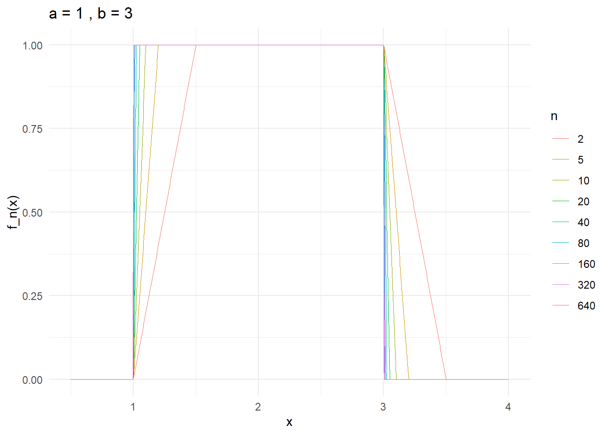

Chap 5, Integration and Expectation
Summary
Summary from 5.1 to 5.3
(2026-01-30) I want to summarize the main idea from Sections 5.1 to 5.2.
Simple functions as the basic building blocks
We start from simple functions (finite range), i.e. functions of the form \[ X=\sum_{i=1}^m a_i\,\mathbf{1}_{A_i}, \] which are the “basic blocks” because they’re easy to compute with, and they’re measurable (so they are random variables too).
Theorem 5.1.1 (Measurability Theorem): approximation by simple functions
In Theorem 5.1.1 (Measurability Theorem) (for \(X(\omega)\ge 0\)), we prove that a random variable \(X\) is measurable iff it can be approximated from below by an increasing sequence of simple functions: \[ 0\le X_n \uparrow X. \]
The construction idea is to slice the range of \(X\) into many small bins, and also truncate at level \(n\). Using a dyadic mesh \(2^{-n}\) (or more generally \(b^{-n}\)) is important because these partitions are nested, so the approximation can be made monotone increasing.
I tried to slice with step size \(1/n\), but that does not guarantee \(X_n\uparrow X\) since the partitions aren’t nested (so the “rounded-down” approximations can go down when \(n\) changes).
Defining expectation via extension from simple functions
Expectation is first defined for simple functions in the most elementary way: \[ E(X)=\sum_{i=1}^m a_i\,P(A_i), \] which is exactly “sum of (possible value) \(\times\) (its probability).”
Then for a general measurable \(X\ge 0\), we extend the definition by approximation: pick simple \(X_n\uparrow X\) and set \[ E(X):=\lim_{n\to\infty}E(X_n). \]
A key point is that this limit is well-defined (it doesn’t depend on the particular approximating sequence), so expectation becomes a legitimate object for all nonnegative measurable random variables. This is a classic analysis strategy: define something on a handy class, then extend it to a larger class via limits.
Why monotone convergence is central
This viewpoint also explains why monotone convergence matters: if \(0\le X_n\uparrow X\), then \[ E(X_n)\uparrow E(X), \] so under monotone increase we can exchange “take limits” and “take expectations.” Conceptually, the proof (and the entire construction) keeps returning to the base case of simple functions.
Markov’s inequality: probability via indicators and expectation
Finally, in Markov’s inequality, the indicator function is the bridge between probability and expectation: since \[ \mathbf{1}_{\{X\ge a\}}\le \frac{X}{a}\quad (X\ge 0), \] we get \[ P(X\ge a)=E\!\left(\mathbf{1}_{\{X\ge a\}}\right)\le \frac{E(X)}{a}. \]
This is a clean example of how expectations control probabilities by rewriting events as indicator random variables.
Also here is a R code to illustrate the approximating process
## Simple-function approximation:
## X_n = floor(2^n * X) / 2^n on {X < n}, and = n on {X >= n}
Xn_simple <- function(X, n) {
pmin(n, floor((2^n) * X) / (2^n))
}
## Grid for omega (pick 0..2 so truncation is visible for small n)
omega <- seq(0, 2, length.out = 4001)
## Two target functions
X_id <- omega # X(ω) = ω
X_sq <- omega^2 # X(ω) = ω^2
## Choose which approximations to show
n_vec <- 1:9
## Compute approximations
approx_id <- sapply(n_vec, function(n) Xn_simple(X_id, n))
approx_sq <- sapply(n_vec, function(n) Xn_simple(X_sq, n))
## ---- Plot: X(ω)=ω ----
par(mfrow = c(1, 2), mar = c(4, 4, 3, 1))
plot(omega, X_id, type = "l", lwd = 2,
xlab = expression(omega), ylab = expression(X(omega)),
main = expression(X(omega) == omega))
for (i in seq_along(n_vec)) {
lines(omega, approx_id[, i], type = "s", lty = i + 1, lwd = 2)
}
legend("topleft",
legend = c("true", paste0("X_n, n=", n_vec)),
lty = c(1, 2:(length(n_vec) + 1)), lwd = 2, bty = "n")
## ---- Plot: X(ω)=ω^2 ----
plot(omega, X_sq, type = "l", lwd = 2,
xlab = expression(omega), ylab = expression(X(omega)),
main = expression(X(omega) == omega^2))
for (i in seq_along(n_vec)) {
lines(omega, approx_sq[, i], type = "s", lty = i + 1, lwd = 2)
}
legend("topleft",
legend = c("true", paste0("X_n, n=", n_vec)),
lty = c(1, 2:(length(n_vec) + 1)), lwd = 2, bty = "n")
From MCT to DCT (5.3)
(2026-02-07) The bridge that connects MCT, which can be only applied to monotone sequence, and the DCT is the Fatou Lemma(s). The DCT is basically the squeezing of 2 Fatous.
When we proving the \(\sup\) version of Fatou Lemma, I wondered that why do we need a \(Z\in L_1\), such that \(X_n\leq Z\)? Can we just say that \[ \begin{aligned} E(\limsup_{n\to\infty} X_n)&=E\left\{\lim_{n\to\infty}(\sup_{k\geq n}X_k)\right\}\\ &=\lim_{n\to\infty}E(\sup_{k\geq n}X_k)\\ &\geq\lim_{n\to\infty}\sup_{k\geq n}E(X_k)\\ &=\limsup_{n\to\infty} E(X_n) \end{aligned} \] what’s wrong is that, we incorrectly used the decreasing version of MCT, that is, generally we don’t have \(E\left\{\lim_{n\to\infty}(\sup_{k\geq n}X_k)\right\}=\lim_{n\to\infty}E(\sup_{k\geq n}X_k)\), for example, we can let \(X_n=n\mathbf{1}_{(0,\frac{1}{n})}\) on \((\Omega,\mathcal{B},P)=((0,1),\mathcal{B}((0,1)),\lambda)\), then \(X_n\to 0\) a.s., and \(E(X_n)=1\), so \(\limsup_{n\to\infty} E(X_n)=1\) of course. However, if we focus on \(\lim_{n\to\infty}E(\sup_{k\geq n}X_k)\), we should see that \[ S_n(\omega)=\sup_{k\geq n}X_k(\omega)=\left\lfloor\frac{1}{\omega}\right\rfloor\mathbf{1}_{(0,\frac{1}{n})}\, \text{a.s.} \] Then what is \(E(\sup_{k\geq n}X_k)\)? I think that is the interesting part \[ \begin{aligned} E(\sup_{k\geq n}X_k)&=\int_{(0,\frac{1}{n})}\left\lfloor\frac{1}{\omega}\right\rfloor dP\\ &=\sum_{m=n}^\infty\int_{\frac{1}{m+1}}^{\frac{1}{m}}mdP\\ &=\sum_{m=n}^\infty m(\frac{1}{m}-\frac{1}{m+1})\\ &=\sum_{m=n}^\infty\frac{1}{m+1}=\infty, \end{aligned} \] and that is why we need a \(Z\in L_1\) to dominate the sequence, more specifically, if we have \(X_n\leq Z\in L_1\), then \(E\left\{\lim_{n\to\infty}(\sup_{k\geq n}X_k)\right\}=\lim_{n\to\infty}E(\sup_{k\geq n}X_k)\).
So the path from 5.1 to 5.3 is: what is an integral for simple function \(\to\) what is an integral for nonnegative measurable function \(\to\) what is an integral for measurable function \(\to\) how the sequence of integral converge.
Summary from 5.4 to 5.6
(2026-02-12) Before 5.4, we mostly talk about integrals on the whole space (\(\Omega\)): expectation is (\(\int_\Omega XdP\)).
5.4 Indefinite integrals
5.4 lets us integrate over an arbitrary measurable set (\(A\in\mathcal B\)). The definition fits intuition: just insert an indicator, \[ \int_A X,dP := \int_\Omega X,\mathbf 1_A,dP. \] So unlike calculus—where “indefinite integral” usually means “find an antiderivative”—here “indefinite” means the set (\(A\)) is not fixed in advance. It turns the integral into a whole set-function (\(A\mapsto \int_A XdP\)), which in real analysis is often a stepping stone toward Radon–Nikodym, since it behaves like a (signed) measure.
5.5 Transformation theorem
In this book, the point of introducing indefinite integrals is to set up the transformation theorem—which I mentally treat as the substitution rule for definite integrals, but now in probability language.
The key message is: once you identify the right “pushforward” measure (the distribution) \[ F = P\circ X^{-1}, \] you can draw the integral back from the abstract (\(\Omega\)) to something concrete. In the real-valued case, that means pulling everything back down to the solid ground of the real line: \[ E[g(X)] = \int_{\Omega} g(X(\omega))dP(\omega) = \int_{\mathbb R} g(x)F(dx), \] so instead of integrating on (\(\Omega\)), you integrate on \((\mathbb R,\mathcal B(\mathbb R))\) using the distribution. And when \(F\) is absolutely continuous, this “distribution integral” further collapses into the most familiar picture from basic probability: a density \(f\), so the expectation becomes an ordinary-looking integral against \(f(x)dx\).
5.6 Lebesgue Meets Riemann
(2026-02-14) From 5.5 we know that, we can use transformation theorem to push the measure forward, that is, turn an integral on \((\Omega,\mathcal{B},P)\) into an integral on \((\mathbb{R},\mathcal{B}(\mathbb{R}),F_X)\), that is \[ E[g(X)]=\int_\Omega g(X)dP=\int_{\mathbb{R}} g(x)dF_X, \] and if \(F_X\) is absolutely continuous (AC), then there will be a density \(f_X(x)\), and it becomes \(\int_{\mathbb{R}} g(x)f_X(x)dx\), then in 5.6, we know how to compute this Lebesgue integral, that is, the Theorem 5.6.1 provides a bridge for proper Riemann integrals, and also, in probability space, the equivalence of two measurable functions can be linked to the equality of the integral on any measurable set.
so the path from 5.4 to 5.6 is: define/set up integrals \(\to\) move them to a concrete space \(\to\) compute them.
Summary from 5.7 to 5.9
(2026-03-15)
Suppose given a function \(X:\Omega_1\times\Omega_2\to\mathbb R\), if we want to discuss its integral, it is natural to compare it to the routine in multiple Riemann integral, that is, for function \(F=f(x,y)\) that is continuous on a compact rectangle \(Q=\{(x,y):a\leq x\leq b,c\leq y\leq d\}\), we have \[ \int_Qf(x,y)d(x,y)=\int_c^d\left[\int_a^b f(x,y)dx\right]dy. \] So the first question we met is that, on \(\Omega_1\times\Omega_2\), what kind of \(\sigma-\)field should we consider(since we discuss Lebesgue integral base on the choice of \(\sigma-\)field)? Unlike our \(Q\) in \(\mathbb R^2\), generally we cannot divide any \(\sigma-\)field \(\mathcal F\) on \(\Omega_1\times\Omega_2\) arbitrarily into \(\sigma-\)field w.r.t the two components, that is to say, the way that we want to go from the top to the bottom does not work. Instead, we build our wanted \(\sigma-\)field on \(\Omega_1\times\Omega_2\) starting from \((\Omega_1,\mathcal B_1,P_1)\) and \((\Omega_2,\mathcal B_2,P_2)\) by generalizing the rectangle idea in \(\mathbb R^2\), that is, choose an element \(A_1\) from \(\mathcal B_1\) and an element \(A_2\) from \(\mathcal B_2\) and then product them to create a subset in \(\Omega_1\times\Omega_2\), so we get \[ \text{RECT}=\{A_1\times A_2:A_1\in\mathcal B_1,A_2\in\mathcal B_2\}, \] what we get currently is only a semi-algebra, of course we can generates a \(\sigma\)-field from it, that is \(\mathcal B_1\times\mathcal B_2=\sigma(\text{RECT})\), by using this construction, if we have some function that is \(\mathcal B_1\times\mathcal B_2\)-measurable, then when we fix \(\omega_1\) and perform a slice on it (our book call this action as “section”), then we get a \(\mathcal B_2\)-measureable function \(X_{\omega_1}\), and vice versa, so we can legally discuss integral on each component.
But what’s more important is that, we need a \(\sigma\)-additive measure on the semi-algebra so that it can be extended uniquely with the semi-algebra, in our book, we choose to construct the measure using transition function/kernel: \[ K(\omega_1,A_2):\Omega_1\times\mathcal B_2\mapsto [0,1]. \] If we fix \(\omega_1\in\Omega_1\), we get a probability measure on \(\mathcal B_2\), and if we fix measurable set \(A_2\in\mathcal B_2\), we get a measurable function on \((\Omega_1,\mathcal B_1)\).
By using transition function/kernel, we can uniquely define a \(\sigma\)-additive probability measure on \(\text{RECT}\): \[ P(A_1\times A_2)=\int_{A_1}K(\omega_1,A_2)P_1(d\omega_1), \] where \(A_1\times A_2\in\text{RECT}\). So we can uniquely extend it to \(\mathcal B_1\times \mathcal B_2\), and note that doing this way we actually don’t need a probability measure \(P_2\) on \((\Omega_2,\mathcal B_2)\).
For the special case product measure \(P(A_1\times A_2)=P_1(A_1)P_2(A_2)\), we let \(K(\omega_1,A_2)=P_2(A_2)\), which is independent of \(\omega_1\), and after defining the product measure \(P=P_1\times P_2\), the books defines coordinate \(\sigma\)-fields \[ \mathcal B^\#_1=\{A_1\times\Omega_2:A_1\in\mathcal B_1\} \] and \[ \mathcal B^\#_2=\{\Omega_1\times A_2:A_2\in\mathcal B_2\}, \] they are independent under \(P_1\times P_2\). As a consequence, the coordinate random variables are automatically independent, so the independence is automatically built into the model by construction when using product measure.
What makes this transition function/kernel so useful is that, even in \(\mathcal B_1\times\mathcal B_2\), we knew that if we fix \(\omega_1\) and perform section, what we get is a \(\mathcal B_2\)-measureable function \(X_{\omega_1}(\omega_2)\), but what we get if we integral it w.r.t \(P_2\), informally speaking, we sum over all the possible value of \(\omega_2\) in \(\Omega_2\), what do we get? Theorem 5.9.1 told us that for \(X\geq 0\) or \(X\in L_1(P)\), we have \[ Y(\omega_1)=\int_{\Omega_2} X_{\omega_1}(\omega_2)K(\omega_1,d\omega_2) \] happens to be a well-defined \(\mathcal B_1\)-measurable function, and if \(X\) is integrable on \(\Omega_1\times\Omega_2\) w.r.t \(P\), then \(Y\) is also integrable on \(\Omega_1\) w.r.t \(P_1\), and then we get \[ \begin{aligned} \int_{\Omega_1\times\Omega_2}XdP&=\int_{\Omega_1}Y(\omega_1)P_1(d\omega_1)\\ &=\int_{\Omega_1}\left[\int_{\Omega_2} X_{\omega_1}(\omega_2)K(\omega_1,d\omega_2)\right]P_1(d\omega_1).\\ \end{aligned} \] So the theorem is really a full iterated-integration theorem for kernel-generated measures.
The way that we proving it is classic:
Prove that it is true for indicator on \(\text{RECT}\),
collect all the subsets \(A\) that that the desired identity holds for indicator, and prove that collection is a \(\lambda\)-system containing \(\text{RECT}\), so that we know it is true for indicator on \(\sigma(\text{RECT})=\mathcal B_1\times\mathcal B_2\),
Prove that it is true for simple function on \(\mathcal B_1\times\mathcal B_2\) using linearity,
Use MCT to prove that it is true for arbitrary \(X\geq0\).
In summary, after we have \(\sigma(\text{RECT})\), the slicing (section) preserves the “measurablity”, and the kernel theorem guarantees that integrating out one coordinate produces a measurable function on the other coordinate, and preserves the nonnegative/integrable structure needed for iterated integration.
By applying the kernel theorem twice, our book proved Tonelli(non-negative) and Fubini(integrable) together.
Ex 2
Argue without a computation that if \(X\in L_2\) and \(c\in\mathbb{R}\), then \(\operatorname{Var}(c)=0\) and \(\operatorname{Var}(X+c)=\operatorname{Var}(X)\).
\(\textbf{My idea:}\) If to argue without computation, I would say that for constant r.v. \(c\), it won’t change, so it has \(0\) variation, therefore \(\text{Var}(X+c)=\text{Var}(X)+\text{Var}(C)=\text{Var}(X)\).
\(\textbf{Answer:}\) For constant r.v. \(c\), it won’t change, so it has \(0\) variation, that is, \(E(c)=c\), and \(\text{Var}(c)=E(c-E(c))^2=E(0)^2=0\), for r.v. \(X+c\), we have \(E(X+c)=E(X)+E(c)=E(X)+c\), and \[ \begin{aligned} \text{Var}(X+c)&=E((X+c)-E(X+c))^2\\ &=E(X+c-E(X)-c)^2\\ &=E(X-E(X))^2=\text{Var}(X). \end{aligned} \] Further, \(X\in L_2\) ensure that the variance is finite.
\(\textbf{Note:}\) Additivity is not a general property.
Ex 4
Let \((X,Y)\) be uniformly distributed on the discrete points \((-1,0)\), \((1,0)\), \((0,1)\), \((0,-1)\). Verify \(X,Y\) are not independent but \(E(XY)=E(X)E(Y)\).
\(\textbf{My idea:}\) Since \(P(X=0,Y=1)=\frac{1}{4}\), and also \(P(X=0)=\frac{1}{2}\), \(P(Y=1)=\frac{1}{4}\), therefore \(P(X=0,Y=1)\neq P(X=0)P(Y=1)=\frac{1}{8}\), so \(X\), \(Y\) are not independent. Also, \[ \begin{aligned} &E(X)=-1\cdot P(X=-1)+1\cdot P(X=1)+0\cdot P(X=0)=-1\cdot \frac{1}{4}+1\cdot \frac{1}{4}+0\cdot \frac{1}{2}=0\\ &E(Y)=-1\cdot P(Y=-1)+1\cdot P(Y=1)+0\cdot P(Y=0)=-1\cdot \frac{1}{4}+1\cdot \frac{1}{4}+0\cdot \frac{1}{2}=0,\\ \end{aligned} \] for \(E(XY)\), since \(XY\) can only has value \(0\), so \(E(XY)=0\), therefore \(E(XY)=E(X)E(Y)\).
Ex 1
Consider the triangle with vertices \((-1,0)\), \((1,0)\), \((0,1)\) and suppose \((X_1,X_2)\) is a random vector uniformly distributed on this triangle. Compute \(E(X_1+X_2)\).
\(\textbf{My idea:}\) By linearity, \[ \begin{aligned} E(X_1+X_2)&=E(X_1)+E(X_2)\\ &=[-1\cdot P(X_1=-1)+1\cdot P(X_1=1)+0\cdot P(X_1=0)] +[0\cdot P(X_2=0)+0\cdot P(X_2=0)+1\cdot P(X_2=1)]\\ &=(-1\cdot\frac{1}{3}+1\cdot\frac{1}{3}+0\cdot\frac{1}{3})+ (0\cdot\frac{1}{3}+0\cdot\frac{1}{3}+1\cdot\frac{1}{3})\\ &=\frac{1}{3}. \end{aligned} \]
\(\textbf{Answer:}\) Since \((X_1,X_2)\) is uniform on the triangle with vertices \((-1,0),(1,0),(0,1)\), its mean is the centroid of the triangle: \[ E(X_1,X_2)=\left(\frac{-1+1+0}{3},\frac{0+0+1}{3}\right)=(0,\tfrac13). \] Hence \[ E(X_1+X_2)=E(X_1)+E(X_2)=0+\tfrac13=\tfrac13. \]
\(\textbf{Note:}\) \(X_1\) and \(X_2\) are continuous r.v.s, we cannot use something like \(P(X_1=-1)\) since it must be \(0\).
Ex 3
Refer to Renyi’s theorem 4.3.1 in Chapter 4. Let \[ L_1:=\inf\{j\ge 2:\ X_j \text{ is a record}\}. \] Check \(E(L_1)=\infty\).
\(\textbf{My idea:}\) For any integer \(k\), we have \(L^{-1}_1(k)=\{X_k\ \text{is a record}\}\), so \(L_1\) is a r.v., and according to Renyi’s theorem, \(P(L_1=k)=\frac{1}{k}\), for \(E(L_1)\), we need to find a sequence of simple function that approach to \(L_1\), naturally, we choose \(L_1^{(n)}=\inf\{2\leq j\leq n:\ X_j\ \text{is a record}\}\), so \(L_1^{(n)}\uparrow L_1\) and \(E(L_1^{(n)})=\sum_{k=2}^n kP(L_1^{(n)}=k)=\sum_{k=2}^n1=n-1\), then according to the definition of expectation, \(E(L_1)=\lim_{n\to\infty}E(L_1^{(n)})=\lim_{n\to\infty}(n-1)=\infty\).
\(\textbf{Answer:}\) Let \(A_n=\{X_n\ \text{is a record}\}\in\mathcal{B}\), according to Renyi’s theorem, \(A_n\) are independent, and for \(n\geq2\) \(\{L_1\leq n\}=\bigcup_{j=2}^{n}A_j\in\mathcal{B}\), so \(L_1\) is a r.v., also \[ \begin{aligned} P(L_1=n)&=P(\bigcap_{k=2}^{n-1}\{X_k\ \text{is not a record}\}\cap\{X_n\ \text{is a record}\})\\ &=P(\bigcap_{k=2}^{n-1}A_k^c\cap A_n)\\ &=\prod_{k=2}^{n-1}P(A_k^c)\cdot P(A_n)\\ &=\frac{1}{n}\prod_{k=2}^{n-1}\frac{k-1}{k}=\frac{1}{n(n-1)},\\ \end{aligned} \] formally, we can let \(L_1^{(n)}=\min\{L_1,n\}\), then \(L_1^{(n)}\uparrow L_1\), but it is not necessary, finally we have \[ E(L_1)=\sum_{n=2}^{\infty}nP(L_1=n)=\sum_{n=2}^\infty\frac{1}{n-1}=\infty. \]
\(\textbf{Note:}\) When we discuss \(\{L_1=n\}\), note that \(X_2,X_3,\dots X_{n-1}\) cannot be record, and also, if we write \(L_1^{(n)}=\inf\{2\leq j\leq n:\ X_j\ \text{is a record}\}\), there could be not record, so it may take \(\infty\) as value.
Ex 5
If \(F\) is a continuous distribution function, prove that \[\int_{\mathbb{R}} F(x) F(dx) = \frac{1}{2}.\] Thus show that if \(X_1, X_2\) are iid with common distribution \(F\), then \[P[X_1 \le X_2] = \frac{1}{2}\] and \(E(F(X_1)) = 1/2\). (One solution method relies on Fubini’s theorem.)
If \(F\) is not continuous \[E(F(X_1)) = \frac{1}{2} + \frac{1}{2} \sum_{a} (P[X_1 = a])^2,\] where the sum is over the atoms of \(F\).
If \(X, Y\) are random variables with distribution functions \(F(x), G(x)\) which have no common discontinuities, then \[E(F(Y)) + E(G(X)) = 1.\] Interpret the sum of expectations on the left as a probability.
Even if \(F\) and \(G\) have common jumps, if \(X \perp \!\!\! \perp Y\) then \[E(F(Y)) + E(G(X)) = 1 + P[X = Y].\]
(a)
\(\textbf{My idea:}\) I may try to use Riemann–Stieltjes integral method to solve it, more precisely, since the distribution function is continuous, it is meaningful/legitimate to perform integration by parts. \[ \begin{aligned} \int_{\mathbb{R}}F(x)F(dx)&=\int_{\mathbb{R}}F(x)dF(x)\\ &=F(x)\cdot F(x)|_{\mathbb{R}}-\int_{\mathbb{R}}F(x)dF(x), \end{aligned} \] that is, \[ \int_{\mathbb{R}}F(x)dF(x)=\frac{1}{2}F^2(x)|_{\mathbb{R}}=\frac{1}{2}. \] and that is exactly the value of \(E(F(X_1))\).
For the other part, \[ \begin{aligned} P[X_1\leq X_2]&=\int_\mathbb{R}P[X_1\leq x|X_2=dx]P[X_2=dx]dx\\ &=\int_\mathbb{R}P[X_1\leq x]dP\\ &=\int_\mathbb{R}F(x)dF(x)=\frac{1}{2}. \end{aligned} \] and I have to admit that this style is informal.
\(\textbf{Answer:}\) \[ \begin{aligned} \int_{\mathbb{R}}F(x)F(dx)&=\int_{\mathbb{R}}F(x)dF(x)\\ &=F(x)\cdot F(x)|_{-\infty}^{\infty}-\int_{\mathbb{R}}F(x)dF(x), \end{aligned} \] that is, \[ \int_{\mathbb{R}}F(x)dF(x)=\frac{1}{2}F^2(x)|_{-\infty}^\infty=\frac{1}{2}. \] and that is exactly the value of \(E(F(X_1))=\int_\mathbb{R}F(x)dF(x)\).
For the other part, we may use symmetry, since \(F\) is continuous, then \(P(X_1=X_2)=0\), so we have \[ 1=P(X_1<X_2)+P(X_2<X_1)+P(X_1=X_2)=P(X_1<X_2)+P(X_2<X_1) \] by symmetry, \(P(X_1<X_2)=P(X_2<X_1)\), so \(P(X_1\leq X_2)=P(X_1<X_2)=1/2\).
\(\textbf{Note:}\) My original idea fits the intuition, but not rigorous since conditional probability and conditional expectation are not defined yet, we will revisit this part after we learn Fubini’s theorem, also, I replace the \(|_R\) in \(\textbf{My idea}\) part with \(|_{-\infty}^{\infty}\). (2026-02-02).
(b)
\(\textbf{My idea:}\) Using the same method from (a), for each atom \(a\), the Riemann–Stieltjes integral on it is: \[ \int_{a-}^a F(x)dF(x)=F^2(x)\big|_{a-}^a-\int_{a-}^a F(x)dF(x), \] so \(\int_{a-}^a F(x)dF(x)=\frac{1}{2}(F^2(a)-F^2(a-))\)
and since \(F\) is a distribution function, it is right continuous and has at most countable discontinuous points (atoms), so \(E(F(X_1))\) is the sum of integral on continuous part and atom part, therefore \[ E(F(X_1))=\frac{1}{2}+\frac{1}{2}\sum_{a}(P[X_1=a])^2. \]
\(\textbf{Answer:}\) For each atom \(a\), let \(\Delta F(a)=F(a)-F(a-)=P(X_1=a)\). Using the jump-corrected Stieltjes integration-by-parts identity, \[ \int u\,dv+\int v\,du =uv\Big|_{-\infty}^{\infty}+\sum_{a}\Delta u(a)\Delta v(a), \] and taking \(u=v=F\), we obtain \[ 2\int_{\mathbb R} F(x)\,dF(x) =F(x)^2\Big|_{-\infty}^{\infty}+\sum_{a}(\Delta F(a))^2 =1+\sum_a \big(P(X_1=a)\big)^2. \] so \[ E(F(X_1))=\int F(x)dF(x)=\frac{1}{2}+\frac{1}{2}\sum_{a}(P[X_1=a])^2 \]
\(\textbf{Note:}\) In the My idea part, I used \(\int\) to calculate the mass in atom, it is wrong because it assume \(F\) is continuous, so we get \[ \begin{aligned} \frac{1}{2}(F^2(a)-F^2(a-))&=\frac{1}{2}((F(a-)+P(X=a))^2-F^2(a-))\\ &=\frac{1}{2}(2F(a-)P(X=a)+P(X=a)^2)\\ &=\frac{1}{2}(P(X=a))^2+F(a-)P(X=a) \end{aligned} \] however, we should view this problem in Lebesgue’s view, that is, summing up the mass in each measurable set, so on atom \(a\), the integral should be: \[ \begin{aligned} \int_{\{a\}}F(x)dF(x)&=F(a)\Delta F(a)=F(a)P(X=a)\\ &=(F(a)-F(a-)+F(a-))P(X=a)\\ &=(P(X=a))^2+F(a-)P(X=a) \end{aligned} \] so \(\frac{1}{2}(P(X=a))^2\) is stolen by the continuous assumption.
(c)
\(\textbf{My idea:}\) let \(a\) be an atom of \(F(x)\), and \(b\) be an atom of \(G(x)\), and \(b\) is not the atom of \(F(x)\), \(a\) is not the atom of \(G(x)\), so \[ P(Y=a)=G(a)-G(a-)=0\quad\text{and}\quad P(X=b)=F(b)-F(b-)=0, \] therefore, \[ \begin{aligned} E(F(Y))+E(G(X))&=\frac{1}{2}+\sum_{a}P(Y=a)+\frac{1}{2}+\sum_{b}P(X=b)\\ &=\frac{1}{2}+\frac{1}{2}. \end{aligned} \] Interpretation: for 2 r.v.s with distribution functions have no common discontinuities, the probability that they are not equal is \(1\).
\(\textbf{Answer:}\) If we consider the jump-corrected Stieltjes integration-by-parts, we should have \[ \int_\mathbb{R}F(x)dG(x)=F(x)\cdot G(x)|_{-\infty}^\infty+\sum_{a}\Delta F(a)\Delta G(a)-\int_\mathbb{R}G(x)dF(x), \] where \(a\) ranges over all the atoms of \(F\) and \(G\), and \(F(\infty)G(\infty)=1\), \(F(-\infty)G(-\infty)=0\) so \(F(x)\cdot G(x)|_{-\infty}^\infty=1\), also, since \(F\) and \(G\) have no common atom, so for each atom \(a\), \(\Delta F(a)\) and \(\Delta G(a)\) must have at least one to be \(0\), so we have \[ \int_\mathbb{R}F(x)dG(x)+\int_\mathbb{R}G(x)dF(x)=1. \] Interpretation: Let \(X,Y\) be independent random variables with distribution functions \(F\) and \(G\), respectively, We can interpret \(\int_\mathbb{R}F(x)dG(x)\) as \(P(X\leq Y)\) and \(\int_\mathbb{R}G(x)dF(x)\) as \(P(Y\leq X)\), since they have no common atom, that implies \(P(X=Y)=0\), so it is \[ P(X<Y)+P(Y<X)=1. \] \(\textbf{Note:}\) It is still the application of Lebesgue-Stieltjes integration-by-parts, that is, we have to make correction for the atom \[ \int_\mathbb{R}F(x)dG(x)=F(x)\cdot G(x)|_{-\infty}^\infty+\sum_{a}\Delta F(a)\Delta G(a)-\int_\mathbb{R}G(x)dF(x). \] What happened in the \(\textbf{My idea}\) part is that I incorrectly tried to apply the special formula from (b) (which is for \(E(F(X))\)) to the mixed terms \(E(F(Y))\) and \(E(G(X))\).
(d)
\(\textbf{My idea:}\) By using the interpretation in (c), for independent r.v.s \(X\) and \(Y\), \(E(F(Y))+E(G(X))\) can be seen as \(P(X\leq Y)+P(Y\leq X)\), considering the common atom, we get \(E(F(Y))+E(G(X))=P(X<Y)+P(Y<X)+P(X=Y)=1+P(X=Y)\).
\(\textbf{Answer:}\) (Lebesgue-Stieltjes version) We redo this part using integral form \[ \begin{aligned} E(F(Y))+E(G(X))&=\int_\mathbb{R}F(x)dG(x)+\int_\mathbb{R}G(x)dF(x)\\ &=F\cdot G|_{-\infty}^\infty+\sum_a \Delta F(a)\Delta G(a)\\ &=1+\sum_a P(X=a)P(Y=a) \qquad (X\perp Y)\\ &=1+\sum_a P(X=a,Y=a)\\ &=1+P(X=Y), \end{aligned} \] where the sum may be taken over all \(a\in\mathbb R\) (only atoms contribute).
\(\textbf{Note/Reflection:}\) In this note I want to summarize what we actually did in this exercise, that is, walked though a path from Riemann-Stieltjes to Lebesgue-Stieltjes integral. I used the continuous version of integration-by-parts to deal with the atom, and as we can see, half of the mass of the atom was stolen, and that is where we need the correction \(\Delta F(a)\).
Ex 6
(a-c at 2026-02-04), (d-e at 2026-02-13)
Show \[ \int_{[\,|X|>n\,]} X\,dP \to 0. \]
Show that if \(P(A_n)\to 0\), then \[ \int_{A_n} X\,dP \to 0. \]
Hint: Decompose \[ \int_{A_n} |X|\,dP = \int_{A_n\cap[\,|X|\le M\,]} |X|\,dP + \int_{A_n\cap[\,|X|> M\,]} |X|\,dP \] for large \(M\).
Show \[ \int_A |X|\,dP = 0 \quad\text{iff}\quad P\bigl(A\cap[\,|X|>0\,]\bigr)=0. \]
If \(X \in L_2\), show \(\text{Var}(X) = 0\) implies \(P[X = E(X)] = 1\) so that \(X\) is equal to a constant with probability 1.
Suppose that \((\Omega, \mathcal{B}, P)\) is a probability space and \(A_i \in \mathcal{B}, i = 1, 2\). Define the distance \(d : \mathcal{B} \times \mathcal{B} \mapsto \mathbb{R}\) by \[d(A_1, A_2) = P(A_1 \Delta A_2).\] Check the following continuity result: If \(A_n, A \in \mathcal{B}\) and \[d(A_n, A) \rightarrow 0\] then \[\int_{A_n} X dP \rightarrow \int_A X dP\] so that the map \[A \mapsto \int_A X dP\] is continuous.
(a)
\(\textbf{My idea:}\) Let \(X^+_n = X^+\mathbf{1}_{[|X|\geq n]}\), and \(X^-_n = X^-\mathbf{1}_{[|X|\geq n]}\) since \(X\in L_1\), then \(X\) is essentially bounded, so \(X^+_n\downarrow0\,\text{(a.s.)}\) and \(X^-_n\downarrow0\,\text{(a.s.)}\), by MCT, we have \(E(X^+_n)\downarrow0\) and \(E(X^-_n)\downarrow0\), so \[ \begin{aligned} \int_{[|X|>n]}XdP&=E(X\mathbf{1}_{[|X|\geq n]})\\ &=E(X^+\mathbf{1}_{[|X|\geq n]})-E(X^-\mathbf{1}_{[|X|\geq n]})\downarrow0. \end{aligned} \]
\(\textbf{Answer:}\) Let \(X_n=|X|\mathbf{1}_{\{|X|>n\}}\), then \(0\leq X_{n+1}\leq X_n\), so \(X_n\downarrow0\) a.s., since \(P(|X|<\infty)=1\), so for a.e. \(\omega\in\Omega\), \(|X(\omega)|<\infty\), also, since \(0\leq X_n\leq|X|\), then \(X_n\in L_1\). By MCT (decreasing version) , we have \(E(X_n)\downarrow0\), therefore \[ \begin{aligned} \left|\int_{\{|X|>n\}}XdP\right|&=\left|\int X\mathbf{1}_{\{|X|>n\}}dP\right|\\ &\leq\int \left|X\mathbf{1}_{\{|X|>n\}}\right|dP\\ &=E(X_n)\to0. \end{aligned} \] so we have \(\int_{\{|X|>n\}}XdP\to0\).
\(\textbf{Note:}\) When we have \(X\in L_1\), it only indicates that \(|X|<\infty\) a.s., since if \(P(|X|=\infty)>0\), then we have \(E(|X|)=\infty\), which makes \(X\) out of \(L_1\), it does not imply that \(X\) is essentially bounded, the counter example is \(\frac{1}{\sqrt x}\) on \((0,1]\). And note that I use the “decreasing version” of MCT in the answer part, even if we are safe in this exercise, we should keep in mind that there are extra condition, that is, we should guarantee that exists some \(n\), such that \(X_n\in L_1\), it is an analog to the “continuous from above” in measure, and that’s why many texts state the increasing version first.
(b)
\(\textbf{My idea:}\) Since \(X\in L_1\), then for any \(\varepsilon>0\), there exists \(M>0\) such that \(\int_{\{|X|>M\}}|X|dP<\varepsilon\) since from (a) we knew that \(\int \left|X\mathbf{1}_{\{|X|>n\}}\right|dP\downarrow0\), so for such \(M\), we have \[ \begin{aligned} \int_{A_n}|X|dP&=\int_{A_n\cap[|X|\leq M]}|X|dP+\int_{A_n\cap[|X|> M]}|X|dP\\ &\leq M\int\mathbf{1}_{A_n}dP+\int_{[|X|> M]}|X|dP\\ &\leq MP(A_n)+\varepsilon, \end{aligned} \] since \(P(A_n)\to0\) and the \(\varepsilon\) is arbitrary, we have \(\int_{A_n}|X|dP\to0\), therefore \(\int_{A_n}XdP\to0\).
\(\textbf{Answer:}\) (Pure \(\varepsilon-N\) version) Since \(X\in L_1\), then for any \(\varepsilon>0\), there exists \(M>0\) such that \(\int_{\{|X|>M\}}|X|dP<\frac{\varepsilon}{2}\) since from (a) we knew that \(\int \left|X\mathbf{1}_{\{|X|>n\}}\right|dP\downarrow0\), so for such \(M\), we have \[ \begin{aligned} \int_{A_n}|X|dP&=\int_{A_n\cap[|X|\leq M]}|X|dP+\int_{A_n\cap[|X|> M]}|X|dP\\ &\leq M\int\mathbf{1}_{A_n}dP+\int_{[|X|> M]}|X|dP\\ &\leq MP(A_n)+\frac{\varepsilon}{2}, \end{aligned} \] since \(P(A_n)\to0\), exists \(N>0\) such that when \(n\geq N\), \(P(A_n)\leq\frac{\varepsilon}{2M}\), then we have \[ \int_{A_n}|X|dP\leq\left(\frac{\varepsilon}{2}+\frac{\varepsilon}{2}\right)=\varepsilon \] since the \(\varepsilon\) is arbitrary, we have \(\int_{A_n}|X|dP\to0\), therefore \(\int_{A_n}XdP\to0\).
\(\textbf{Note:}\) We cannot conclude that \(|X|\mathbf{1}_{A_n}\to0\) from \(P(A_n)\to0\), but we are only required to prove that the mass on \(|X|\mathbf{1}_{A_n}\) decrease to \(0\), Using the tail control from part (a), we pick a large cutoff \(M\) and split the integral into two pieces: on \(\{|X|\le M\}\) it is controlled by \(P(A_n)\), and on \(\{|X|>M\}\) it is controlled by the tail of \(X\).
We need a counter example here:
(c)
\(\textbf{My idea:}\)
“\(\Rightarrow\)”: Suppose we have \(\int_A|X|dP=\int|X|\mathbf{1}_AdP=0\), then for any \(\varepsilon>0\), we have \[ \begin{aligned} P(A\cap[|X|>0])&=\int\mathbf{1}_{\{A\cap[|X|>0]\}}dP\\ &=\int\mathbf{1}_{\{A\cap[0<|X|\leq\varepsilon]\}}dP+\int\mathbf{1}_{\{A\cap[|X|>\varepsilon]\}}dP\\ &\leq\varepsilon+\int\frac{|X|}{\varepsilon}\mathbf{1}_{\{A\cap[|X|>\varepsilon]\}}dP\\ &\leq\varepsilon+0=\varepsilon, \end{aligned} \] since \(\varepsilon\) is arbitrary, we have \(P(A\cap[|X|>0])=0\).
“\(\Leftarrow\)”: conversely, this time we have \(P(A\cap[|X|>0])=0\), and since \(X\in L_1\), using the result from (a) and (b), we know that for any \(\varepsilon>0\), there exists \(M>0\), such that \(\int |X|\mathbf{1}_{[|X|>m]}dP\leq\varepsilon\), therefore \[ \begin{aligned} \int_A|X|dP&=\int|X|\mathbf{1}_AdP\\ &=\int|X|\mathbf{1}_{\{A\cap[|X|>M]\}}dP+\int|X|\mathbf{1}_{\{A\cap[|X|\leq M]\}}dP\\ &\leq\int|X|\mathbf{1}_{[|X|>M]}dP+M\int\mathbf{1}_{\{A\cap[|X|\leq M]\}}dP\\ &\leq\varepsilon+MP(A\cap[|X|\leq M])\\ &=\varepsilon+0=\varepsilon, \end{aligned} \] since \(\varepsilon\) is arbitrary, we have \(\int_A|X|dP=0\).
\(\textbf{My idea 2:}\) “\(\Rightarrow\)”: Since we have \(X\geq0\) and \(\int_A XdP=0\), then \[ \int_A XdP=\int X\mathbf{1}_{A\cap\{X=0\}}dP+\int X\mathbf{1}_{A\cap\{X>0\}}dP \] then both part in RHS should be \(0\), therefore \(\int X\mathbf{1}_{A\cap\{X>0\}}dP=0\), and since \(X>0\), then \(P(A\cap\{X>0\})=0\).
\(\textbf{Answer:}\)
“\(\Rightarrow\)”: For any \(\varepsilon>0\), we have \[ \varepsilon P(A\cap[|X|>\varepsilon])\leq\int |X|\mathbf{1}_{\{A\cap[|X|>\varepsilon]\}}dP\leq\int|X|\mathbf{1}_AdP=0 \] therefore for any \(\varepsilon>0\), \(P(A\cap[|X|>\varepsilon])=0\), and note that \[ \{A\cap[|X|>0]\}=\bigcup_m\{A\cap[|X|>\frac{1}{m}]\}, \] and the sets on the right-hand side increase with \(m\), by continuity from below, we have \[ P(\{A\cap[|X|>0]\})=\lim_{m\to\infty} P(A\cap[|X|>\frac{1}{m}])=0. \]
“\(\Leftarrow\)”: It is immediate, since \[ \int_A|X|dP=\int_{A\cap[|X|=0]}|X|dP+\int_{A\cap[|X|>0]}|X|dP=0, \] for the first part in RHS, \(|X|\) is \(0\) so the integral is \(0\), and for the second part in RHS, it is a integral on a set with measure \(0\).
\(\textbf{Note:}\) In the “\(\Rightarrow\)” part in My idea, we should see that even though \(\int\mathbf{1}_{\{A\cap[0<|X|\leq\varepsilon]\}}dP\leq\int\mathbf{1}_{\{[0<|X|\leq\varepsilon]\}}dP\), but \(P(0<|X|\leq\varepsilon)\) may not less or equal than \(\varepsilon\), and in the “\(\Leftarrow\)” part, we assumed that \(\int\mathbf{1}_{\{A\cap[|X|\leq M]\}}dP0\), this is also wrong, a counter example is that for \(X(\omega)\equiv0\), then \(P(|X|=0)=1\).
(d)
\(\textbf{My idea:}\) Since \(\text{Var}(X)=0\), that is \[ \int(X-E(X))^2dP=0, \] so \(X=E(X)\) a.e., that means \(P(X=E(X))=1\), which means that \(X\) is a constant with probability \(1\).
\(\textbf{Note:}\) There are some implicit assumption I didn’t wrote up, even though that will not affect the proof, I decide to write them on the note: 1. \(X\in L_2\), so \(E(X)\) exists and is finite, and \((X-E(X))^2\in L_1\); 2. Since \((X-E(X))^2\) is nonnegative, \(\int(X-E(X))^2dP=0\) means \((X-E(X))^2=0\) a.e..
(e)
\(\textbf{My idea:}\) From the assumption we have \[ \begin{aligned} \left|\int_{A_n}XdP-\int_{A}XdP\right|&=\left|\int X\mathbb1_{A_n}dP-\int X\mathbb1_{A}dP\right|\\ &\leq\int|X||\mathbb1_{A_n}-\mathbb1_{A}|dP\\ &=\int|X|\mathbb1_{A_n\Delta A}dP, \end{aligned} \] and since \(X\in L_1\), then \(|X|\mathbb1_{A_n\Delta A}\in L_1\) and \(|X|\mathbb1_{A_n\Delta A}\to0\) a.s. because \(P(A_n\Delta A)\to0\), then by DCT, we have \[ \lim_{n\to\infty}\int|X|\mathbb1_{A_n\Delta A}dP=\int\lim_{n\to\infty}|X|\mathbb1_{A_n\Delta A}dP=0, \] so \[ \left|\int_{A_n}XdP-\int_{A}XdP\right|\to0. \]
\(\textbf{Answer:}\) (Minor Modification) From the assumption we have \[ \begin{aligned} \left|\int_{A_n}XdP-\int_{A}XdP\right|&=\left|\int X\mathbb1_{A_n}dP-\int X\mathbb1_{A}dP\right|\\ &\leq\int|X||\mathbb1_{A_n}-\mathbb1_{A}|dP\\ &=\int|X|\mathbb1_{A_n\Delta A}dP, \end{aligned} \] and since \(X\in L_1\), then \(|X|\mathbb1_{A_n\Delta A}\in L_1\) and because \(P(A_n\Delta A)\to0\), then by (b), we have \[ \lim_{n\to\infty}\int|X|\mathbb1_{A_n\Delta A}dP=\lim_{n\to\infty}\int_{A_n\Delta A}|X|dP=0, \] so \[ \left|\int_{A_n}XdP-\int_{A}XdP\right|\to0. \]
\(\textbf{Note:}\) In my idea, I said that “since \(X\in L_1\), then \(|X|\mathbb1_{A_n\Delta A}\in L_1\) and \(|X|\mathbb1_{A_n\Delta A}\to0\) a.s. because \(P(A_n\Delta A)\to0\).”, this is not true, \(P(A_n\Delta A)\to0\) only provides us convergence in probability/measure, not a.s. or pointwise.
Ex 10
For \(X\ge 0\), let \[ X_n^{*}=\sum_{k=1}^{\infty}\frac{k}{2^{n}}\mathbf{1}_{\left[\frac{k-1}{2^{n}}\le X<\frac{k}{2^{n}}\right]} +\infty\,\mathbf{1}_{[X=\infty]}. \] Show \[ E\!\left(X_n^{*}\right)\downarrow E(X). \]
\(\textbf{My idea:}\) For \(\omega\in[X\neq\infty]\), we can see that \(X^*_n(\omega)\geq X^*_{n+1}(\omega)\) and \[ |X^*_n(\omega)-X(\omega)|\leq\frac{1}{2^n}\to0 \] and for \(\omega\in[X=\infty]\), we have \(X^*_n(\omega)=X(\omega)=\infty\), therefore \(X^*_n\downarrow X\).
If \(E(X)=\infty\), that means \(P(X=\infty)>0\), therefore \(E(X^*_n)=\infty\), if \(E(X)<\infty\), so \(P(X=\infty)=0\), so for each \(n\), we have \(E(X^*_n)<\infty\), by the decreasing version of MCT, we have \(E(X^*_n)\downarrow E(X)\).
\(\textbf{Answer:}\) For \(\omega\in[X<\infty]\), \(X^*_n(\omega)=\frac{\lceil 2^n X(\omega)\rceil}{2^n}\), and \(\frac{\lceil 2^n X(\omega)\rceil}{2^n}\geq\frac{\lceil 2^{n+1} X(\omega)\rceil}{2^{n+1}}\) since \(\lceil 2^{n+1}x\rceil\leq2\lceil 2^{n}x\rceil\), so \(X^*_n(\omega)\geq X^*_{n+1}(\omega)\) and \(X^*_n(\omega)\geq X(\omega)\), therefore \[ |X^*_n(\omega)-X(\omega)|\leq\frac{1}{2^n}\to0 \] and for \(\omega\in[X=\infty]\), we have \(X^*_n(\omega)=X(\omega)=\infty\), therefore \(X^*_n\downarrow X\). If \(E(X)=\infty\), since we have \(X^*_n\geq X\) therefore \(E(X^*_n)\geq E(X)=\infty\), if \(E(X)<\infty\), so for each \(n\), we have \(X^*_n\leq X+\frac{1}{2^n}\), then by linearity, \(E(X^*_n)\leq E(X)+\frac{1}{2^n}<\infty\), by the decreasing version of MCT, we have \(E(X^*_n)\downarrow E(X)\).
\(\textbf{Note:}\)
- In my idea part, we should note that \(E(X)=\infty\) does not imply \(P(X=\infty)>0\), the classic counterexample is the “double after each loss” gambling strategy:
- Flip a fair coin
- Let \(T=\min\{n\ge1:\text{the n-th flip is a win (say Heads)}\}\), so \(P(T=n)=2^{-n}\)
- Each time bet \(1,2,4,\dots\) until the first win, so for the bet \(B\) we have \[ E(B)=\sum_{n=1}^\infty 2^{n-1}P(T=n)=\sum_{n=1}^\infty 2^{n-1}\cdot2^{-n}=\sum_{n=1}^\infty\frac{1}{2}=\infty, \] but \(B<\infty\) a.s..
Or we just consider the Example 5.2.1 (Heavy Tails) from the book, so we should use the property that \(X^*_n\geq X\) to prove that \(E(X^*_n)\geq E(X)=\infty\).
- And also, the monotonicity of \(X^*_n\) is not that trivial, we should specifically prove it: by using \(\lceil 2x\rceil\leq2\lceil x\rceil\).
Ex 38
Use the Fatou Lemma to show the following: If \(0 \leq X_n \rightarrow X\) and \(\sup_n E(X_n) = K < \infty\), then \(E(X) \leq K\) and \(X \in L_1\).
\(\textbf{My idea:}\) Since \(\sup_n E(X_n)=K<\infty\), and \(X_n\geq0\) by Fatou Lemma we have \[ E(\liminf_{n\to\infty}X_n)\leq\liminf_{n\to\infty}E(X_n)\leq\sup_n E(X_n)=K \] and since \(0\leq X_n\to X\), we have \(\liminf_{n\to\infty}X_n=\lim_{n\to\infty}X_n=X\geq0\), that is \[ E(|X|)=E(X)\leq K, \] so \(X\in L_1\).
\(\textbf{Note:}\) This one is straight forward.
Ex 7
Suppose \(X_n, n \geq 1\) and \(X\) are uniformly bounded random variables; i.e. there exists a constant \(K\) such that \[|X_n| \vee |X| \leq K.\] If \(X_n \rightarrow X\) as \(n \rightarrow \infty\), show by means of dominated convergence that \[E|X_n - X| \rightarrow 0.\]
\(\textbf{My idea:}\) We can let \(Y(\omega)\equiv2K\) as a r.v., and on \((\Omega,\mathcal{B},P)\), we actually have \[ \int YdP=2K<\infty, \] so \(Y\in L_1\), and for \(Z_n=|X_n-X|\), we have \[ Z_n=|X_n-X|\leq |X_n|+|X|\leq 2K=Y. \] since \(Z_n\to0\) and \(Z_n\leq Y\in L_1\), then by DCT, we have \[ E(|X_n-X|)=E(Z_n)\to0. \]
Ex 8
Suppose \(X, X_n, n \geq 1\) are random variables on the space \((\Omega, \mathcal{B}, P)\) and assume \[\sup_{\substack{\omega \in \Omega \\ n \geq 1}} |X_n(\omega)| < \infty;\] that is, the sequence \(\{X_n\}\) is uniformly bounded.
Show that if in addition \[\sup_{\omega \in \Omega} |X(\omega) - X_n(\omega)| \rightarrow 0, \quad n \rightarrow \infty,\] then \(E(X_n) \rightarrow E(X)\).
Use Egorov’s theorem (Exercise 25, page 89 of Chapter 3) to prove: If \(\{X_n\}\) is uniformly bounded and \(X_n \rightarrow X\), then \(E(X_n) \rightarrow E(X)\). (Obviously, this follows from dominated convergence as in Exercise 7 above; the point is to use Egorov’s theorem and not dominated convergence.)
(a)
\(\textbf{My idea:}\) Since \(X_n\) is uniformly bounded and \(X_n\to X\) uniformly, because \[ \begin{aligned} \sup_{\omega\in\Omega}|X(\omega)|&=\sup_{\omega\in\Omega}|X(\omega)-X_n(\omega)+X_n(\omega)|\\ &\leq\sup_{\omega\in\Omega}|X(\omega)-X_n(\omega)|+\sup_{\omega\in\Omega}|X_n(\omega)|\\ &\leq\sup_{\omega\in\Omega}|X(\omega)-X_n(\omega)|+\sup_{\omega\in\Omega,n\geq1}|X_n(\omega)|, \end{aligned} \] the first part of RHS approaches to \(0\), and the second part is uniformly bounded, therefore there existes constant \(M=\max\{\sup_{\omega\in\Omega,n\geq1}|X_n(\omega)|,\sup_{\omega\in\Omega}|X(\omega)|\}\), such that \(|X_n| \vee |X| \leq M\), that is \(Y(\omega)\equiv M\) is in \(L_1\) on \((\Omega,\mathcal{B},P)\), by using the DCT, we have \(E(X_n)\to E(X)\).
\(\textbf{Answer:}\) Since \(X_n\) is uniformly bounded by some constant \(K\in L_1\) on probability space, and \(X_n\to X\) uniformly, then \(X_n\to X\) pointwise, then by DCT, we have \(E(X_n)\to E(X)\).
\(\textbf{Note:}\) 1. We should mention that \(X_n\to X\) almost everywhere, 2. We can actually use DCT directly.
(b)
\(\textbf{My idea:}\) We have \(X_n\) is uniformly bounded and \(X_n\to X\), then \(X\) must also be bounded, since there exists \(M>0\), such that for any \(n\), \(|X_n|\leq M\), then \(|X|=|\lim_{n\to\infty} X|\leq M\), and it is suffice to prove \(E(|X_n-X|)\to0\), since we are in probability space, \(P(\Omega)=1\), so by Egorov’s theorem, for any \(\varepsilon>0\), there exist a set \(\Lambda_\varepsilon\) such that \(P(\Lambda_\varepsilon)<\varepsilon\) and \[ \sup_{\omega\in\Omega\setminus\Lambda_\varepsilon}|X(\omega)-X_n(\omega)|\to0\quad(n\to\infty), \] therefore we have \[ \begin{aligned} E(|X_n-X|)&=\int|X_n-X|dP\\ &=\int_{\Omega\setminus\Lambda_\varepsilon}|X_n-X|dP+\int_{\Lambda_\varepsilon}|X_n-X|dP\\ &\leq\sup_{\omega\in\Omega\setminus\Lambda_\varepsilon}|X(\omega)-X_n(\omega)|\cdot P(\Omega\setminus\Lambda_\varepsilon)+2M\varepsilon\\ &\leq\sup_{\omega\in\Omega\setminus\Lambda_\varepsilon}|X(\omega)-X_n(\omega)|+2M\varepsilon, \end{aligned} \] the first part of RHS approaches to \(0\) and the second part can be arbitrary, so we can choose \(\varepsilon\) small enough so that \(2M\varepsilon\) is small, and then choose \(n\) large enough so that the \(\sup\) term is also small, therefore \(E(|X_n-X|)\to0\), therefore \(E(X_n)\to E(X)\).
\(\textbf{Note:}\) Generally speaking, in a finite measure space, such as probability space, the Egorov’s theorem allows us to divide the space into two parts, one behaves well, allowing our a.e. convergent sequence to converge uniformly; the other part may not behave as well, but its measure can be made arbitrarily small.
Ex 13
Suppose the probability space is the Lebesgue interval \[(\Omega = [0, 1], \mathcal{B}([0, 1]), \lambda)\] and define \[X_n = \frac{n}{\log n} 1_{(0, \frac{1}{n})}.\] Show \(X_n \rightarrow 0\) and \(E(X_n) \rightarrow 0\) even though the condition of domination in the Dominated Convergence Theorem fails.
\(\textbf{My idea:}\) For any \(\omega\in[0,1]\) and for any \(\varepsilon>0\), there exists \(N=\lceil\frac{1}{\omega}\rceil\), such that when \(n\geq N\), we have \(X_n(\omega)=0\), therefore \(X_n\to 0\), also, since each \(X_n\) is actually simple function, therefore \[ \begin{aligned} E(X_n)&=\frac{n}{\log n}\lambda((0,\frac{1}{n}))\\ &=\frac{1}{\log n}\to0\quad(n\to\infty). \end{aligned} \] And why the condition of domination in DCT fails? Suppose there exists such \(Z\in L_1\), \(|X_n|=X_n\leq Z\), then we should have \(S_n=\sup_{k\geq n}X_k\leq Z\), and by the \(\sup\) version of Fatou, \(E(S_n)\to0\), but actually \(E(S_n)\to\infty\).
\(\textbf{Answer:}\) (why the condition of domination in DCT fails) Suppose there exists such \(Z\in L_1\), \(|X_n|=X_n\leq Z\), then we should have \(S_n=\sup_{k\geq n}X_k\leq Z\), so for \(\omega\in(0,\frac1n)\), choose \(k=\lfloor\frac1\omega\rfloor\), then \(S_n(\omega)\geq X_k(\omega)=\frac{k}{\log k}\), therefore, for \(m\geq n\), \(S_n(\omega)\geq\frac{m}{\log m}\) on intervar \((\frac{1}{m+1},\frac{1}{m}]\), so we have \[ \begin{aligned} E(S_n)&\geq \sum_{m=n}^\infty\int_{\frac{1}{m+1}}^{\frac{1}{m}}\frac{m}{\log m}d\lambda\\ &=\sum_{m=n}^\infty\frac{m}{\log m}(\frac{1}{m}-\frac{1}{m+1})\\ &=\sum_{m=n}^\infty\frac{1}{(m+1)\log m}=\infty.\\ \end{aligned} \]
\(\textbf{Note:}\) In my idea part, I said use \(\sup\) version of Fatou, but that would only mean \[ E(S_n)\downarrow E(\limsup_{n\to\infty}X_n)=0, \] since \(S_n\) is decreasing and dominated by \(Z\in L_1\).
Ex 30
Pratt’s lemma. The following variant of dominated convergence and Fatou is useful: Let \(X_n, Y_n, X, Y\) be random variables on the probability space \((\Omega, \mathcal{B}, P)\) such that
\(0 \leq X_n \leq Y_n\),
\(X_n \rightarrow X, \quad Y_n \rightarrow Y\),
\(E(Y_n) \rightarrow E(Y), \quad EY < \infty\).
Prove \(E(X_n) \rightarrow E(X)\). Show the Dominated Convergence Theorem follows.
\(\textbf{My idea:}\) by (i) and (ii), we should have \(X_n\leq Y\) and \(X\leq Y\), and by (iii), we should have \(X_n\in L_1\) and \(X\in L_1\) since \(E(Y)<\infty\). Therefore the two (\(\inf\) and \(\sup\)) version of Fatou lemma apply, that is \[ \limsup_{n\to\infty}E(X_n)\leq E(X)\leq \liminf_{n\to\infty}E(X_n), \] that is, \(\lim_{n\to\infty}E(X_n)=E(X)\). Further, we can seed that \(X_n\) and \(X\) are dominated by \(Y\in L_1\), therefore the DCT follows.
\(\textbf{Answer:}\) By (i) and (ii), we should have \(0\leq Y_n- X_n\leq Y_n\) and \(0\leq Y-X\leq Y\).
Firstly, since \(X_n\geq0\), then by Fatou Lemma, we have \[ E(X)=E(\liminf_{n\to\infty}X_n)\leq\liminf_{n\to\infty}E(X_n), \] secondly, by linearity, \(E(X_n)=E(Y_n)-E(Y_n-X_n)\), therefore \[ \begin{aligned} \limsup_{n\to\infty}E(X_n)&=\limsup_{n\to\infty}(E(Y_n)-E(Y_n-X_n))\\ &\leq\limsup_{n\to\infty}E(Y_n)-\liminf_{n\to\infty}E(Y_n-X_n)\\ &\leq E(Y)-E(Y-X)=E(X), \end{aligned} \] because by Fatou lemma \[ E(Y-X)=E(\liminf_{n\to\infty}(Y_n-X_n))\leq\liminf_{n\to\infty}E(Y_n-X_n). \]
So we have \[ \limsup_{n\to\infty}E(X_n)\leq E(X)\leq \liminf_{n\to\infty}E(X_n), \] that is, \(\lim_{n\to\infty}E(X_n)=E(X)\).
Further, let \(V_n=|X_n-X|\geq 0\), and \(Y_n=Y=2Z\in L_1\), we have \(E(|X_n-X|)\to0\) when \(|X_n|\leq Z\in L_1\) and \(|X_n-X|\to0\) a.s.
\(\textbf{Note:}\) What happened in my idea is that, we don’t have \(X_n\leq Y\) pointwise or a.s., we only have \(X_n\leq Y_n\) for each pair of \(X_n,Y_n\).
Ex 36
Beppo Levi Theorem. Suppose for \(n \geq 1\) that \(X_n \in L_1\) are random variables such that \[\sup_{n \geq 1} E(X_n) < \infty.\] Show that if \(X_n \uparrow X\), then \(X \in L_1\) and \[E(X_n) \rightarrow E(X).\]
\(\textbf{My idea:}\) What we have is that \(\sup_{n\geq1}E(X_n)<\infty\), that means it is a real number sequence which is upper bounded, therefore there exists a subsequence \(E(X_{n_k})\) that converges, and since \(X_n\in L_1\) and \(X_n\uparrow X\), then \(X_{n_k}\uparrow X\), so \[ E(X_{n_k})\uparrow E(X), \] since we already have \(E(X_{n_k})\) converges to some real number, that means \(E(X)<\infty\), which means \(X\in L_1\). This time we can apply DCT, that is, let \(Z=|X|\in L_1\), then \(X_n\leq |X|\), and since \(X_n\uparrow X\), we have \(E(X_n)\to X\).
\(\textbf{Answer:}\) Since we have \(X_n\uparrow X\), \(X_n\in L_1\) and \(\sup_{n}E(X_n)<\infty\), then \(0\leq X_n-X_1\uparrow X-X_1\), and \(E(X_n-X_1)=E(X_n)-E(X_1)<\infty\), also, \[ E(X_n-X_1)=E(X_n)-E(X_1)\leq \sup_{n}E(X_n)-E(X_1)<\infty \] then by MCT, \[ E(X-X_1)=\lim_{n\to\infty}E(X_n-X_1)<\infty, \] that is, \(E(X)=\lim_{n\to\infty}E(X_n)\) and \(X\in L_1\).
\(\textbf{Note:}\) We actually don’t need the subsequence trick here, and note that I incorrectly used the DCT in the end of my idea, but we didn’t have \(|X_n|\leq |X|\) because we don’t have the nonnegative property here.
Ex 15
Suppose \(X\) is a non-negative random variable satisfying \[P[0 \leq X < \infty] = 1.\] Show \[(a) \quad \lim_{n \rightarrow \infty} n E \left( \frac{1}{X} 1_{[X > n]} \right) = 0,\] \[(b) \quad \lim_{n \rightarrow \infty} n^{-1} E \left( \frac{1}{X} 1_{[X > n^{-1}]} \right) = 0.\]
(a)
\(\textbf{My idea:}\) Since \(P[0\leq X< \infty]=1\), that is \(P[X=\infty]=0\). \[ \begin{aligned} nE(\frac1X\mathbf{1}_{[X>n]})&=n\int\frac1X\mathbf{1}_{[X>n]}dP\\ &\leq n\int\frac1n\mathbf{1}_{[X>n]}dP\\ &=P[X>n]\to0 \end{aligned} \] \(\textbf{Answer:}\) (DCT version) Let \(f_n(\omega)=\frac{n}{X(\omega)}\mathbb1_{[X>n]}\), then \(|f_n|\leq 1\) for all \(n\). For \(0<X(\omega)<\infty\), there exist \(N(\omega)\) such that for all \(n\geq N(\omega)\), \(X(\omega)\leq n\), so \(\mathbf{1}_{[X(\omega)>n]}=0\), that is \(f_n(\omega)=0\), and when \(X(\omega)=0\), since the indicator is \(0\), then \(f_n=0\) for all \(n\), so \(f_n\to0\) a.s., and since \(1\in L_1\) because \(P(\Omega)=1\), so by DCT we have \[ \lim_{n\to\infty}E(\frac nX\mathbf{1}_{[X>n]})=E(\lim_{n\to\infty}f_n)=0. \]
\(\textbf{Note:}\) I thought this part was good, but after I finished (b), I realized that the DCT can also be applied to (a).
(b)
\(\textbf{My idea:}\) What I can figure out so far is that, I divide \([X>\frac1n]\) into two parts: \([\frac1n<X\leq\frac{1}{\sqrt{n}}]\) and \([X>\frac{1}{\sqrt n}]\), then in the second part, we have \[ \begin{aligned} \frac{1}nE(\frac1X\mathbf{1}_{[X>\frac{1}{\sqrt n}]})&=\frac1n\int\frac1X\mathbf{1}_{[X>\frac{1}{\sqrt n}]}dP\\ &\leq\frac1n\int\sqrt n\mathbf{1}_{[X>\frac{1}{\sqrt n}]}dP\\ &=\frac{1}{\sqrt{n}}P[X>\frac{1}{\sqrt n}]\to0, \end{aligned} \] since \(P(\cdot)\) is bounded.
For the first part, it is \[ \frac1n\int\frac1X\mathbf{1}_{[\frac1n<X\leq\frac{1}{\sqrt{n}}]}dP, \] my idea is that to bound the integral part, but I don’t know how to proceed.
\(\textbf{Answer:}\) (Completion of my idea) Divide \([X>\frac1n]\) into two parts: \([\frac1n<X\leq\frac{1}{\sqrt{n}}]\) and \([X>\frac{1}{\sqrt n}]\), then in the second part, we have \[ \begin{aligned} \frac{1}nE(\frac1X\mathbf{1}_{[X>\frac{1}{\sqrt n}]})&=\frac1n\int\frac1X\mathbf{1}_{[X>\frac{1}{\sqrt n}]}dP\\ &\leq\frac1n\int\sqrt n\mathbf{1}_{[X>\frac{1}{\sqrt n}]}dP\\ &=\frac{1}{\sqrt{n}}P[X>\frac{1}{\sqrt n}]\to0, \end{aligned} \] since \(P(\cdot)\) is bounded.
For the first part, since \(\frac{1}{n}<X\leq\frac{1}{\sqrt n}\), then \(\frac{1}{nX}<1\). Hence \[ \begin{aligned} \frac1n\int\frac1X\mathbf{1}_{[\frac1n<X\leq\frac{1}{\sqrt{n}}]}dP&=\int\frac1{nX}\mathbf{1}_{[\frac1n<X\leq\frac{1}{\sqrt{n}}]}dP\\ &\leq\int\mathbf{1}_{[\frac1n<X\leq\frac{1}{\sqrt{n}}]}dP\\ &=P[\frac1n<X\leq\frac{1}{\sqrt{n}}], \end{aligned} \] note that it is actually the measure of \(\{\omega:\frac1n<X(\omega)\leq\frac{1}{\sqrt{n}}\}\), for any \(\omega\in\Omega\), if \(X(\omega)=0\), then it is not in this set, and if \(X(\omega)>0\), then it will eventually out of it since there will be some \(n\) such that \(X(\omega)>\frac{1}{\sqrt n}\), so \(\{\omega:\frac1n<X(\omega)\leq\frac{1}{\sqrt{n}}\}\) decrease to \(\varnothing\), by continuity from above, \(P[\frac1n<X\leq\frac{1}{\sqrt{n}}]\downarrow0\), therefore we have \[ \lim_{n\to\infty}\frac{1}nE(\frac1X\mathbf{1}_{[X>\frac{1}{n}]})=0. \] \(\textbf{Answer2:}\) (Something much more elegant) Define \(f_n(\omega)=\frac{1}{nX(\omega)}\mathbf{1}_{[X>\frac{1}{n}]}\), therefore \(|f_n|\leq1\) for all n, and if \(X(\omega)>0\), then \(f_n\to0\), if \(X(\omega)=0\), then \(f_n(0)=0\) for all \(n\) since the indicator is \(0\), so \(f_n\to0\) a.s., by DCT, \[ \lim_{n\to\infty}\frac{1}nE(\frac1X\mathbf{1}_{[X>\frac{1}{n}]})=E(\lim_{n\to\infty}f_n)=0. \]
\(\textbf{Note:}\) This DCT version of solution is so straight forward, and my brain is hold by the idea from (a), let’s try rewrite something like \(a_nE(g(X)\mathbf{1}_{\{X\in A_n\}})\) into \(E(f_n)\) form and check whether \(f_n\to0\) a.s..
Ex 20
For a random variable \(X\) with distribution \(F\), define the moment generating function \(\phi(\lambda)\) by \[\phi(\lambda) = E(e^{\lambda X}).\] (a) Prove that \[\phi(\lambda) = \int_{\mathbb{R}} e^{\lambda x} F(dx).\] Let \[\Lambda = \{ \lambda \in \mathbb{R} : \phi(\lambda) < \infty \}\] and set \[\lambda_{\infty} = \sup \Lambda.\] (b) Prove for \(\lambda\) in the interior of \(\Lambda\) that \(\phi(\lambda) > 0\) and that \(\phi(\lambda)\) is continuous on the interior of \(\Lambda\). (This requires use of the dominated convergence theorem.) (c) Give an example where (i) \(\lambda_{\infty} \in \Lambda\) and (ii) \(\lambda_{\infty} \notin \Lambda\). (Something like gamma distributions should suffice to yield the needed examples.) Define the measure \(F_{\lambda}\) by \[F_{\lambda}(I) = \int_I \frac{e^{\lambda x}}{\phi(\lambda)} F(dx), \quad \lambda \in \Lambda.\] (d) If \(F\) has a density \(f\), verify \(F_{\lambda}\) has a density \(f_{\lambda}\). What is \(f_{\lambda}\)? (Note that the family \(\{f_{\lambda}, \lambda \in \Lambda\}\) is an exponential family of densities.) (e) If \(F(I) = 0\), show \(F_{\lambda}(I) = 0\) as well for \(I\) a finite interval and \(\lambda \in \Lambda\).
(a)
\(\textbf{My idea:}\) Since \(g(x)=e^{\lambda x}\) is a continuous function \(\mathbb{R}\to\mathbb{R}\), then it is also a \(\mathcal{B}(\mathbb{R})\)/\(\mathcal{B}(\mathbb{R})\) measurable function, by the transformation theorem, we have \[ \begin{aligned} \phi(\lambda)&=E(e^{\lambda X})=\int e^{\lambda X}dP\\ &=\int_\mathbb{R} e^{\lambda x} dF. \end{aligned} \]
(b)
\(\textbf{My idea:}\) For \(\lambda\in\text{int}\Lambda\), \(e^{\lambda X}>0\), therefore \[ \phi(\lambda)=\int e^{\lambda X}dP>0, \] further, for \(\lambda\in\text{int}\Lambda\), the there exist \(N>0\), such that when \(n\geq N\), we have \((\lambda-\frac1n,\lambda+\frac1n)\subseteq\text{int}\Lambda\), that is \[ \begin{aligned} |\phi(\lambda)-\phi(\lambda+\frac1n)|&=|\int e^{\lambda X}dP-\int e^{(\lambda+\frac1n) X}dP|\\ &=|\int e^{\lambda X}- e^{(\lambda+\frac1n) X} dP|\\ &=|\int e^{\lambda X}(1-e^{\frac1n X})dP|\\ &\leq\int|e^{\lambda X}||(1-e^{\frac1n X})|dP, \end{aligned} \] since \(\lambda\in\text{int}\Lambda\), therefore \(e^{\lambda X}\) is integrable, and \(|e^{\lambda X}||(1-e^{\frac1n X})|\leq e^{\lambda X}\in L_1\), also \(|e^{\lambda X}||(1-e^{\frac1n X})|\to0\), by DCT, we have \[ \int|e^{\lambda X}||(1-e^{\frac1n X})|dP\to0, \] therefore \(|\phi(\lambda)-\phi(\lambda+\frac1n)|\to0\), and for \(|\phi(\lambda)-\phi(\lambda-\frac1n)|\) we also have the same result ,so \(\phi\) is continuous on \(\text{int}\Lambda\).
\(\textbf{Answer:}\) For \(\lambda\in\text{int}\Lambda\), \(e^{\lambda X}>0\) a.s., therefore \[ \phi(\lambda)=\int e^{\lambda X}dP>0, \] further, for \(\lambda_0\in\text{int}\Lambda\), there exists a \(\delta\), such that \((\lambda_0-\delta,\lambda_0+\delta)\subseteq\Lambda\), specifically, we have \[ E(e^{(\lambda_0-\delta)X})<\infty\quad\text{and}\quad E(e^{(\lambda_0+\delta)X})<\infty, \] then for any \(\lambda_n\in(\lambda_0-\delta,\lambda_0+\delta)\) such that \(\lambda_n\to\lambda_0\), \(E(e^{\lambda_n X})<\infty\) and \(e^{\lambda_n X}\to e^{\lambda_0 X}\) a.s., and we have \[ |e^{\lambda_n X}|\leq e^{(\lambda_0-\delta)X}+e^{(\lambda_0+\delta)X}\in L_1, \] since on \(\{X>0\}\), we have \(e^{\lambda_n X}\leq e^{(\lambda_0+\delta)X}\) and on \(\{X\leq0\}\), we have \(e^{\lambda_n X}\leq e^{(\lambda_0-\delta)X}\). Then by DCT, \(E(e^{\lambda_n X})\to E(e^{\lambda_0 X})\), that is, \(\phi(\lambda_n)\to\phi(\lambda_0)\).
\(\textbf{Note:}\) We don’t generally have \(|e^{\lambda X}||(1-e^{\frac1n X})|\leq e^{\lambda X}\), instead, we should try to use the interior condition to construct the bounds for dominating function
(c)
\(\textbf{Answer:}\) Let \(X\sim\exp(\beta)\), then \(\Lambda=(-\infty,\beta)\) and \(\lambda_\infty=\beta\), however, \(\phi(\beta)=\infty\), therefore \(\lambda_\infty\not\in\Lambda\).
Then define density function \(f(x)=c\frac{e^{-\beta x}}{1+x^2}\), \(x\geq0\), where \(c\) is the normalizing constant, then \[ \phi(\lambda)=E(e^{\lambda X})=c\int_0^\infty\frac{e^{(\lambda-\beta) x}}{1+x^2}dx, \] we cannot antiderivative this function, but we should see that when \(\lambda\leq\beta\), the integral is finite, so \(\Lambda=(-\infty,\beta]\) and \(\lambda_\infty\in\Lambda\).
\(\textbf{Note:}\) Because of the \(e^{\lambda X}\), the exponential decreasing density will also be infinity at the boundary, so we need to add an extra polynomial them to control the boundary case.
(d)
\(\textbf{My idea:}\) Since \(F\) has a density \(f\), therefore we have \[ \begin{aligned} F_\lambda(I)&=\int_I\frac{e^{\lambda x}}{\phi(\lambda)}F(dx)\\ &=\int_I\frac{e^{\lambda x}}{\phi(\lambda)}f(x)dx. \end{aligned} \] We shall see that \(f_\lambda=\frac{e^{\lambda x}}{\phi(\lambda)}f(x)\).
\(\textbf{Note:}\) I just directly used Proposition 5.5.2 in page 139. So my understand is correct, when \(F\) is AC, we have \[ \int g(x)F(dx)=\int g(x)f(x)dx, \] the notation \(F(dx)=f(x)dx\) is shorthand for this. In chapter 10, the Radon–Nikodym theorem will justify writing \(f=\frac{dF}{d\lambda}\).
(e)
\(\textbf{My idea:}\) (Version 1:) Since \(F_\lambda\) is AC w.r.t. \(F\), then we should have is \(F(I)=0\), then \(F_\lambda(I)=0\) as well. (Version 2:) Since we are discussing in finite interval \(I\), we can discuss it on Riemann integral’s form, if \(F(I)=0\), and its density \(f\geq0\), then we should have \(f=0\) a.s. on \(I\), so \(f_\lambda=0\) a.s. on \(I\), therefore \(F_\lambda(I)=0\) as well.
\(\textbf{Answer:}\) Let \(I\) be a finite interval and \(F(I)=0\), and since \(\phi(\lambda)>0\) and \(e^{\lambda x}>0\) (by (b)), we should have \(F(I\cap[e^{\lambda x}>0])=F(I)=0\), (from page 134) so we have \[ F_\lambda(I)=\int_I \frac{e^{\lambda x}}{\phi(\lambda)}F(dx)=0. \]
\(\textbf{Note:}\) We should note that in (e), we actually don’t have the density assumption, and also the absolutely continuous relation between measures is still not mentioned so far.
Ex 21
Suppose \(\{p_k, k \geq 0\}\) is a probability mass function on \(\{0, 1, \dots\}\) and define the generating function \[P(s) = \sum_{k=0}^{\infty} p_k s^k, \quad 0 \leq s \leq 1.\] Prove using dominated convergence that \[\frac{d}{ds} P(s) = \sum_{k=1}^{\infty} p_k k s^{k-1}, \quad 0 \leq s \leq 1,\] that is, prove differentiation and summation can be interchanged.
\(\textbf{My idea:}\) When we say \(\{p_k,k\geq0\}\) is a probability mass function (pmf) on \(\{0,1,\dots\}\), it actually means that we have \(P(X=k)=p_k\) and \(\sum_{k=0}^\infty p_k=1\), so for the generating function \[ P(s)=\sum_{k=0}^\infty p_k s^k,\quad 0\leq s\leq 1 \] we have that \(P(1)=\sum_{k=0}^\infty p_k=1\) and \(P(0)=0\), and actually \(P(s)=E(s^X)\), so what we want to prove is actually \[ \frac{d}{ds}E(s^X)=E(\frac{d}{ds}s^X)=E(Xs^{X-1}), \] so it should be suffice to prove that \[ \int_0^s E(Xt^{X-1})dt=E(s^X), \] for any \(s\in[0,1]\). Note that \(\sum_{k=1}^n ks^{k-1}p_k\uparrow \sum_{k=1}^\infty ks^{k-1}p_k\), and \[ \int_0^s \sum_{k=1}^n kt^{k-1}p_k dt=\sum_{k=1}^n \int_0^s kt^{k-1}p_k dt=\sum_{k=1}^ns^kp_k\to\sum_{k=1}^\infty s^kp_k, \] therefore by DCT, we should have \[ \int_0^s E(Xt^{X-1})dt=E(s^X). \]
\(\textbf{Answer:}\) (Version 1, The completion of my idea, using MCT only) Let \(P_n(s)=\sum_{k=0}^n p_ks^k\), then denote \(g_n(s)=\frac{d}{ds}P_n(s)=\sum_{k=1}^np_kks^{k-1}\), so we have \[ \int_0^sg_n(t)dt=\sum_{k=1}^n p_ks^k=P_n(s)-p_0\to P(s)-p_0, \] also, note that for each \(t\in[0,s]\), \(g_n(t)\uparrow \sum_{k=1}^\infty p_kkt^{k-1}\), then by MCT, on \(([0,s],\mathcal{B}([0,s]),\lambda)\), \(s\in[0,1)\), we have \[ \int_0^sg_n(t)dt\to\int_0^s\sum_{k=1}^\infty p_kkt^{k-1}dt, \] therefore, we have \(\int_0^s\sum_{k=1}^\infty p_kkt^{k-1}dt=P(s)-p_0\), by fundamental theorem of calculus, take derivative on both sides, we have \[ \frac{d}{ds}P(s)=\sum_{k=1}^\infty p_kks^{k-1}. \]
(Version 2, Using DCT as the problem required) By the definition of derivative, for \(s\in[0,1)\), we have \[ \begin{aligned} \frac{d}{ds}P(s)&=\lim_{h\to0}\frac{P(s+h)-P(s)}{h}\\ &=\lim_{h\to0}\frac{1}{h}(\sum_{k=0}^\infty p_k(s+h)^k-\sum_{k=0}^\infty p_k s^k)\\ &=\lim_{h\to0}\frac 1h\sum_{k=0}^\infty p_k[(s+h)^k-s^k]\\ &=\lim_{h\to0}\sum_{k=0}^\infty\frac {p_k[(s+h)^k-s^k]}h \end{aligned} \] so define \(Z_h(k)=p_k\frac{(s+h)^k-s^k}{h}\), we have that \(\lim_{h\to0}Z_h(k)=p_kks^{k-1}\), and by Mean Value Theorem (MVT), for \(f(s)=s^k\) there exists a \(\xi\) between \(s+h\) and \(s\), such that \[ \frac{(s+h)^k-s^k}{h}=f'(\xi)=k\xi^{k-1}, \] and since \(0\leq s<1\), we can always find an \(r\) such that \(s<r<1\), also, we can choose small enough \(|h|\) such that \(s+h\in [0,r]\), and for such \(h\), we have \[ |Z_h(k)|=\left|p_k\frac{(s+h)^k-s^k}{h}\right|=|p_kk\xi^{k-1}|\leq p_k kr^{k-1}. \] Define \(Y(k)=p_k kr^{k-1}\), since \(0\leq p_k\leq1\), we have \[ \sum_{k=1}^\infty Y(k)=\sum_{k=1}^\infty p_k kr^{k-1}\leq\sum_{k=1}^\infty kr^{k-1}=\frac{1}{(1-r)^2}, \] for \(r\in[0,1)\), that is, \(Y(k)\) is summable.
Therefore, by DCT, we have \[ \frac{d}{ds}P(s)=\lim_{h\to0}\sum_{k=0}^\infty Z_h(k)=\sum_{k=0}^\infty\lim_{h\to0}Z_h(k)=\sum_{k=1}^\infty p_kks^{k-1}. \]
\(\textbf{Note:}\) My idea is basically correct, but I forgot the \(p_0\) terms, and also I didn’t mention the Fundamental Theorem of Calculus (FTC).
For the DCT version, we should note that we use DCT in Real analysis viewpoint, not just in probability expectation viewpoint, but we can rewrite it on probability form: just define r.v. \(K\) on \(\{0\}\cup\mathbb{N}\) as \(P(K=k)=p_k\), we have \[ E(g_h(K))=\sum_{k=0}^\infty p_kg_h(k), \] This is just the definition of expectation for a discrete r.v., and by letting \(g_h(k)=\frac{(s+h)^k-s^k}{h}\), we should see that everything else are actually the same.
And I want to write down the scratch idea of version 2 here (since it took me two days):
- Use the definition of derivative to find an intermediate function (the difference quotient);
- Use MVT to prove that the quotient is bounded by other function;
- Prove that function is summable/integrable;
- Use DCT.
Ex 16
- Suppose \(-\infty<a\le b<\infty\). Show that the indicator function \(\mathbf{1}_{(a,b]}(x)\) can be approximated by bounded and continuous functions; that is, show that there exist a sequence of continuous functions \(0\le f_n\le 1\) such that \[ f_n\to \mathbf{1}_{(a,b]} \quad\text{pointwise.} \]
Hint: Approximate the rectangle of height \(1\) and base \((a,b]\) by a trapezoid of height \(1\) with base \((a,b+n^{-1}]\) whose top line extends from \(a+n^{-1}\) to \(b\).
Show that two random variables \(X_1\) and \(X_2\) are independent iff for every pair \(f_1,f_2\) of non-negative continuous functions, we have \[ E\bigl(f_1(X_1)f_2(X_2)\bigr)=Ef_1(X_1)\,Ef_2(X_2). \]
Suppose for each \(n\), that the pair \(\xi_n\) and \(\eta_n\) are independent random variables and that pointwise \[ \xi_n\to \xi_\infty,\qquad \eta_n\to \eta_\infty. \]
Show that the pair \(\xi_\infty\) and \(\eta_\infty\) are independent so that independence is preserved by taking limits.
(a)
\(\textbf{My idea:}\) Define \(f_n(x)\) as \[ \begin{cases} n(x-a) & \text{if } x\in(a,a+\frac1n] \\ 1 & \text{if } x \in (a+\frac1n,b] \\ -n(x-b)+1 & \text{if } x \in(b,b+\frac1n] \\ 0 & \text{elsewhere}, \end{cases} \] so for each \(n\), \(f_n\) is bounded and continuous, we leave the checking of continuity here since it is trivial and we check that \(f_n\to f\) pointwise.
For \(x\leq a\), \(f_n(x)=f(x)=0\), for \(x\in(a,b]\), there exists \(N\) such that \(a+\frac1N<x\), so when \(n\geq N\), \(f_n(x)=1\), and for \(x>b\), we shall see that there exist \(N\) such that \(b+\frac 1N<x\), so when \(n\geq N\), \(f_n(x)=0\), so we have \(f_n\to f\).
Here is a code for visualization:
f_n <- function(x, a, b, n) {
dplyr::case_when(
x > a & x <= a + 1/n ~ n * (x - a),
x > a + 1/n & x <= b ~ 1,
x > b & x <= b + 1/n ~ -n * (x - b) + 1,
TRUE ~ 0
)
}
library(ggplot2)
a <- 1
b <- 3
n_values <- c(2, 5, 10, 20, 40, 80, 160, 320, 640)
x_range <- seq(0.5, 4, length.out = 1000)
df_list <- lapply(n_values, function(n) {
data.frame(x = x_range, y = f_n(x_range, a, b, n), n = as.factor(n))
})
df <- do.call(rbind, df_list)
ggplot(df, aes(x = x, y = y, color = n)) +
geom_line(size = 0.2) +
labs(title = paste("a =", a, ", b =", b),
x = "x", y = "f_n(x)") +
theme_minimal()
(b)
\(\textbf{My idea:}\)
“\(\Rightarrow\)”: Suppose r.v.s \(X_1\) and \(X_2\) are independent, that is \(\sigma(X_1)=X_1^{-1}(\mathcal{B}(\mathbb{R}))\) and \(\sigma(X_2)=X_2^{-1}(\mathcal{B}(\mathbb{R}))\) are independent, then for any non-negative continuous function \(f_1\), \(f_2\), we have \(\sigma(f_1(X_1))\subseteq\sigma(X_1)\) and \(\sigma(f_2(X_2))\subseteq\sigma(X_2)\), so they are independent, which means \(f_1(X_1)\) and \(f_2(X_2)\) are independent r.v.s, therefore we have (we can prove it or use Example 5.9.2) \[ E(f_1(X_1)f_2(X_2))=E(f_1(X_1))E(f_2(X_2)). \]
“\(\Leftarrow\)”: Conversely, suppose for any non-negative continuous function \(f_1\), \(f_2\), we have \(E(f_1(X_1)f_2(X_2))=E(f_1(X_1))E(f_2(X_2))\), then for any half-open interval \((a,b]\), according to (a), we have non-negative continuous function \(f^{(1)}_n\),\(f^{(2)}_n\), such that \(f^{(i)}_n\to\mathbf{1}_{(a_i,b_i]}\), that is, we have \[ E(f^{(1)}_n(X_1)f^{(2)}_n(X_2))=E(f^{(1)}_n(X_1))E(f^{(2)}_n(X_2)). \] We shall see that \(\mathbf{1}_{(a_i,b_i]}(X_i)\), \(i=1,2\) is integrable since \(E(\mathbf{1}_{(a,b]}(X_i))=P(X_i\in(a_i,b_i])\), \(i=1,2\), and for \(\mathbf{1}_{(a_1,b_1]}(X_1)\mathbf{1}_{(a_2,b_2]}(X_2)\), they’re bounded by 1, hence integrable., then by DCT and take limit on both side, we have \[ E(\mathbf{1}_{(a_1,b_1]}(X_1)\mathbf{1}_{(a_2,b_2]}(X_2))=E(\mathbf{1}_{(a_1,b_1]}(X_1))E(\mathbf{1}_{(a_2,b_2]}(X_2)), \] but that is \[ P(\{X_1\in(a_1,b_1]\}\cap\{X_2\in(a_2,b_2]\})=P(X_1\in(a_1,b_1])P(X_2\in(a_2,b_2]), \] recall that \(\mathcal{P}:=\{(a,b]:-\infty<a<b<\infty\}\) is a \(\pi\)-system which generates \(\mathcal{B}(\mathbb{R})\), now we have \(X_1^{-1}(\mathcal{P})\) and \(X_2^{-1}(\mathcal{P})\) are independent, and these are also \(\pi\)-systems, so \(\sigma(X_1^{-1}(\mathcal{P}))=X_1^{-1}(\sigma(\mathcal{P}))=X_1^{-1}(\mathcal{B}(\mathbb{R}))\) and \(\sigma(X_2^{-1}(\mathcal{P}))=X_2^{-1}(\sigma(\mathcal{P}))=X_2^{-1}(\mathcal{B}(\mathbb{R}))\) are independent, hence \(X_1\) and \(X_2\) are independent.
\(\textbf{Answer:}\)
Assume for all bounded continuous \(f,g:\mathbb R\to[0,\infty)\), \[ E[f(X_1)g(X_2)] = E[f(X_1)]E[g(X_2)]. \tag{1} \] Let \(\mathcal P:=\{(a,b]:-\infty<a<b<\infty\}\), a \(\pi\)-system generating \(\mathcal B(\mathbb R)\). Then \[ \mathcal R:=\{A\times B: A,B\in\mathcal P\} \] is a \(\pi\)-system generating \(\mathcal B(\mathbb R^2)\).
Define \[ \mathcal{D}:=\{E\in\mathcal B(\mathbb R^2):\ P\big((X_1,X_2)\in E\big) = (P_{X_1}\times P_{X_2})(E)\}. \] Equivalently, \[ \mathcal D=\{E: P((X_1,X_2)\in E)=P^*(E)\}, \] where \(P^*:=P_{X_1}\times P_{X_2}\).
Step 1: \(\mathcal D\) is a λ-system
\(\mathbb R^2\in\mathcal D\) since both measures give 1.
If \(E\in\mathcal D\), then
\[ P((X_1,X_2)\in E^c)=1-P((X_1,X_2)\in E)=1-P^*(E)=P^*(E^c), \] so \(E^c\in\mathcal D\). * If \(E_n\in\mathcal D\) are disjoint, then by countable additivity,
\[ P((X_1,X_2)\in \cup_n E_n)=\sum_n P((X_1,X_2)\in E_n) =\sum_n P^*(E_n)=P^*(\cup_n E_n), \]
so \(\cup_n E_n\in\mathcal D\).
Thus \(\mathcal D\) is a λ-system.
- Step 2: \(\mathcal R\subseteq \mathcal D\)
Fix \(A=(a_1,b_1]\in\mathcal P\), \(B=(a_2,b_2]\in\mathcal P\). By part (a), choose bounded continuous \(f_n,g_n\ge0\) with \[ 0\le f_n\le 1,\quad f_n\to \mathbf 1_A;\qquad 0\le g_n\le 1,\quad g_n\to \mathbf 1_B \] pointwise.
Apply (1):
\[ E[f_n(X_1)g_n(X_2)] = E[f_n(X_1)]E[g_n(X_2)]. \] Let \(n\to\infty\). By dominated convergence on all three expectations, \[ E[\mathbf 1_A(X_1)\mathbf 1_B(X_2)] =E[\mathbf 1_A(X_1)]E[\mathbf 1_B(X_2)], \] i.e. \[ P(X_1\in A,\ X_2\in B)=P(X_1\in A)P(X_2\in B). \] But \(P^*(A\times B)=P(X_1\in A)P(X_2\in B)\), so \(A\times B\in\mathcal D\). Hence \(\mathcal R\subseteq\mathcal D\).
- Step 3: \(\pi-\lambda\) theorem
Since \(\mathcal R\) is a \(\pi\)-system generating \(\mathcal B(\mathbb R^2)\) and \(\mathcal D\) is a λ-system containing \(\mathcal R\), the π–λ theorem gives \[ \mathcal B(\mathbb R^2)\subseteq \mathcal D, \] so \(P((X_1,X_2)\in E)=P^*(E)\) for all Borel \(E\). Thus the joint law equals the product law: \[ P_{(X_1,X_2)}=P_{X_1}\times P_{X_2}, \] which is exactly independence of \(X_1\) and \(X_2\).
\(\textbf{Note:}\) My idea is correct, but I kept the answer because it provide a \(\pi-\lambda\) version of proof, but the core step is still the same: approximate indicators of half-open intervals (and hence rectangles) by bounded continuous functions, then pass to the limit with DCT.
(c)
\(\textbf{My idea:}\) According to (b), for any indicators \(\mathbf{1}_{(a_1,b_1]}\) and \(\mathbf{1}_{(a_2,b_2]}\), there exist non-negative continuous functions \(f_m^{(1)}\to\mathbf{1}_{(a_1,b_1]}\) and \(f_m^{(2)}\to\mathbf{1}_{(a_2,b_2]}\), firstly, since each of them are continuous, we have for each \(m\), \[ \lim_{n\to\infty}f^{(1)}_m(\xi_n)=f^{(1)}_m(\lim_{n\to\infty}\xi_n)=f^{(1)}_m(\xi_\infty) \] and \[ \lim_{n\to\infty}f^{(2)}_m(\eta_n)=f^{(2)}_m(\lim_{n\to\infty}\eta_n)=f^{(2)}_m(\eta_\infty) \] since \(0\leq f_m^{(i)}\leq1\), \(i=1,2\), by DCT, we have \[ E(f^{(1)}_m(\xi_n)f^{(2)}_m(\eta_n))\to E(f^{(1)}_m(\xi_\infty)f^{(2)}_m(\eta_\infty)) \] and \[ E(f^{(1)}_m(\xi_n))\to E(f^{(1)}_m(\xi_\infty)),\quad E(f^{(2)}_m(\eta_n))\to E(f^{(2)}_m(\eta_\infty)) \] Since for each \(n\), \(\xi_n\) and \(\eta_n\) are independent, therefore we have \[ E(f^{(1)}_m(\xi_n)f^{(2)}_m(\eta_n))=E(f^{(1)}_m(\xi_n))E(f^{(2)}_m(\eta_n)), \] take the limit on both side, that is \[ E(f^{(1)}_m(\xi_\infty)f^{(2)}_m(\eta_\infty))=E(f^{(1)}_m(\xi_\infty))E(f^{(2)}_m(\eta_\infty)) \]
then using the same method from (b), we get the independence.
\(\textbf{Answer:}\) Using the result from (b), since \(\xi_n\) and \(\eta_n\) are independent, then for fixed \(n\), we have \[ E(f(\xi_n)g(\eta_n))=E(f(\xi_n))E(g(\eta_n)), \] where \(f,g\) are non-negative continuous functions, then for any integers \(N,M\geq0\), \(f_M=\min\{f,M\}\) and \(g_N=\min\{g,N\}\) are also non-negative continuous functions, that is, \[ \lim_{n\to\infty}f_M(\xi_n)=f_M(\xi_\infty),\quad\lim_{n\to\infty}g_N(\eta_n)=g_N(\eta_\infty)\quad\text{a.s.} \] therefore \(f_M(\xi_n)g_N(\eta_n)\to f_M(\xi_\infty)g_N(\eta_\infty)\) a.s.. Since \(f_M\), \(g_N\) are bounded, hence \(f_Mg_N\) is also bounded, by DCT we have \[ \begin{aligned} E(f_M(\xi_n)g_N(\eta_n))&\to E(f_M(\xi_\infty)g_N(\eta_\infty))\\ E(f_M(\xi_n))&\to E(f_M(\xi_\infty))\\ E(g_N(\eta_n))&\to E(g_N(\eta_\infty))\\ \end{aligned} \] so \[ E(f_M(\xi_\infty)g_N(\eta_\infty))=E(f_M(\xi_\infty))E(g_N(\eta_\infty)). \] then by MCT, we have \[ E(f(\xi_\infty)g(\eta_\infty))=E(f(\xi_\infty))E(g(\eta_\infty)). \] according to (b), we get the independence.
\(\textbf{Note:}\) MY idea is correct, the answer is just another method. In fact, In fact, the criterion in (b) can be extended from non-negative continuous functions to non_negative bounded continuous functions (and then to general non-negative measurable via truncation/approximation).
Ex 18
Suppose \((\Omega, \mathcal{B}, P) = ((0, 1], \mathcal{B}((0, 1]), \lambda)\) where \(\lambda\) is Lebesgue measure on \((0, 1]\). Let \(\lambda \times \lambda\) be product measure on \((0, 1] \times (0, 1]\). Suppose that \(A \subset (0, 1] \times (0, 1]\) is a rectangle whose sides are NOT parallel to the axes. Show that \[\lambda \times \lambda(A) = \text{area of } A.\]
\(\textbf{My idea:}\) Divide \((0,1]\times(0,1]\) into \(n\times n\) little disjoint squares, call them \(\{A_i\}\), and define the area that covers the rectangle from the outside as \[ S_n^\text{out}=\inf\{\sum_{k=1}^KA_k: A\subseteq\sum_{k=1}^KA_k\}, \] and the area that fills the rectangle from the inside as \[ S_n^\text{in}=\sup\{\sum_{k=1}^KA_k: \sum_{k=1}^KA_k\subseteq A\}. \] Since they are all constructed by squares, so their areas are just the number of squares divided by \(n^2\), and we have \(S_n^\text{in}\leq\text{area of }A\leq S_n^\text{out}\).
What’s left is to prove that when \(n\to\infty\), they converges.
\(\textbf{Answer:}\) Let \(Q_{ij}=(\frac{i-1}{n},\frac{i}{n}]\times(\frac{j-1}{n},\frac{j}{n}]\) and define \[ A_{n}^\text{in}=\bigcup\{Q_{ij}:Q_{ij}\subseteq A\}, \] and \[ A_{n}^\text{out}=\bigcup\{Q_{ij}:Q_{ij}\cap A\neq\varnothing\}. \] Therefore we have \[ A_{n}^\text{in}\subseteq A \subseteq A_{n}^\text{out}, \] and denote the area of \(A\) as \(S\), since \(A_{n}^\text{in}\) and \(A_{n}^\text{out}\) are constructed by \(Q_{ij}\), therefore their areas are \(S_{n}^\text{in}=\lambda\times\lambda(A_{n}^\text{in})\) and \(S_{n}^\text{out}=\lambda\times\lambda(A_{n}^\text{out})\), and we also have \[ S_{n}^\text{in}\leq S\leq S_{n}^\text{out}. \] And we should note that, the difference between \(S_{n}^\text{in}\) and \(S_{n}^\text{out}\) is from the squares that in \(A_{n}^\text{out}\) but not in \(A_{n}^\text{in}\), and those squares must intersect the boundaries of the rectangle \(A\), that is \[ A_{n}^\text{out}\setminus A_{n}^\text{in}\subseteq\bigcup\{Q_{ij}:Q_{ij}\cap\partial A\neq\varnothing\}, \] and \(S_{n}^\text{out}-S_{n}^\text{in}\) is the number of squares in \(A_{n}^\text{out}\setminus A_{n}^\text{in}\) divided by \(n^2\).
For one boundary of the rectangle \(L\) with Euclidean \(\mathcal{l}(L)\), suppose the endpoints are \((x_0,y_0)\) and \((x_1,y_1)\), and WLOG, we can let the shift on x-axis \(\Delta x=x_1-x_0\), then we can count how many vertical line \(x=\frac kn\) that this line cross by counting the \(k\) such that \[ x_0\leq\frac kn\leq x_1\iff nx_0\leq k\leq nx_1, \] that is equivalence to count the integer on interval \([a,b]\), that is at most \(b-a+1\), so the boundary crosses at most \(n(x_1-x_0)+1=n|\Delta x|+1\) squares vertically, similarly, the boundary crosses at most \(n|\Delta y|+1\) squares horizontally, so for the total squares it crosses \(N_n(L)\), we have \[ N_n(L)\leq (n|\Delta x|+1) + (n|\Delta y|+1) +1=n(|\Delta x|+|\Delta y|)+3, \] and note that \(|\Delta x|+|\Delta y|\leq\sqrt 2\mathcal{l}(L)\) because \[ (|\Delta x|+|\Delta y|)^2=|\Delta x|^2+|\Delta y|^2+2|\Delta x||\Delta y|\leq |\Delta x|^2+|\Delta y|^2+|\Delta x|^2+|\Delta y|^2=2\mathcal{l}(L)^2. \] According to the above, for the four boundaries of the rectangle, we have \[ \sum_{i=1}^4N_n(L_i)\leq \sqrt 2n\sum_{i=1}^4\mathcal{l}(L_i)+12=O(n). \] Therefore \[ 0\leq S_{n}^\text{out}-S_{n}^\text{in}\leq\frac{O(n)}{n^2}\to 0, \] so we have \(\lambda\times\lambda(A)=\text{area of }A\).
\(\textbf{Note:}\) My initial idea is to use the rotation matrix to solve this, but we still don’t have the rotation invariance for product measure, so we can only use the standard analysis routine:approximate \(A\) by finite unions of grid squares (simple sets), and show the “missed region” is concentrated near \(\partial A\).
And I summarize the correct idea of this exercise here:
- Use big regular set to cover \(A\), and use small regular set to fill up \(A\), here regular I mean some thing that constructed by little squares.
- Show that the difference between their area goes to \(0\).
Ex 23
Verify that the product \(\sigma\)-algebra is the smallest \(\sigma\)-algebra making the coordinate mappings \(\pi_1, \pi_2\) measurable.
\(\textbf{My idea:}\) For \(\sigma\)-algebra \(\mathcal{B}\) on product space \(\Omega_1\times\Omega_2\), if we want the coordinate mappings \(\pi_1\) and \(\pi_2\) are \(\mathcal{B}\)-measurable, then for any \(A_1\in \mathcal{B}_1\), \(\pi_1^{-1}(A_1)\in\mathcal{B}\) and for any \(A_2\in\mathcal{B}_2\), \(\pi_2^{-1}(A_2)\in\mathcal{B}\). However, we have for any \(A_1\in \mathcal{B}_1\), \(\pi_1^{-1}(A_1)=A_1\times\Omega_2\in\mathcal{B}_1\times\mathcal{B}_2\) and for any \(A_2\in\mathcal{B}_2\), \(\pi_2^{-1}(A_2)=\Omega_1\times A_2\in\mathcal{B}_1\times\mathcal{B}_2\), therefore \(\mathcal{B}_1\times\mathcal{B}_2\subseteq\mathcal{B}\).
\(\textbf{Answer:}\) For \(\sigma\)-algebra \(\mathcal{B}\) on product space \(\Omega_1\times\Omega_2\), if we want the coordinate mappings \(\pi_1\) and \(\pi_2\) are \(\mathcal{B}\)-measurable, then for any \(A_1\in \mathcal{B}_1\), \(\pi_1^{-1}(A_1)\in\mathcal{B}\) and for any \(A_2\in\mathcal{B}_2\), \(\pi_2^{-1}(A_2)\in\mathcal{B}\). However, we have for any \(A_1\in \mathcal{B}_1\), \(\pi_1^{-1}(A_1)=A_1\times\Omega_2\in\mathcal{B}_1\times\mathcal{B}_2\) and for any \(A_2\in\mathcal{B}_2\), \(\pi_2^{-1}(A_2)=\Omega_1\times A_2\in\mathcal{B}_1\times\mathcal{B}_2\), so far, \(\mathcal{B}\) contains set of the form \(A_1\times\Omega_2\) and \(\Omega_1\times A_2\), which we call strips, and since \(\mathcal{B}\) is a (\(\sigma-\))algebra, it is closed under intersection, therefore the rectangle \(A_1\times A_2=(A_1\times\Omega_2)\cap(\Omega_1\times A_2)\in\mathcal{B}\), therefore the \(\sigma\)-algebra generated by rectangles, which is \(\mathcal{B}_1\times\mathcal{B}_2\) is also a subset of \(\mathcal{B}\), that is, \(\mathcal{B}_1\times\mathcal{B}_2\subseteq\mathcal{B}\). Conversely, for any \(A_1\in\mathcal{B}_1\), \(\pi_1^{-1}=A_1\times\Omega_2\in\text{RECT}\subseteq\mathcal{B}_1\times\mathcal{B}_2\), and similarly for \(\pi_2\), therefore \(\pi_1\) and \(\pi_2\) are \(\mathcal{B}_1\times\mathcal{B}_2\)-measurable, so it is the smallest such \(\sigma\)-algebra.
\(\textbf{Note:}\) In my idea part, I only proved that the strips are in \(\mathcal{B}\), but what we finally need is that all the rectangles are in \(\mathcal{B}\). Further, we should write down \(\pi_1\) and \(\pi_2\) are \(\mathcal{B}_1\times\mathcal{B}_2\)-measurable even if we actually already knew it.
Ex 12
- Suppose \(X\) is an uncountable set and let \(\mathcal{B}\) be the \(\sigma\)-field of countable and co-countable (complements are countable) sets. Show that the diagonal \(\text{DIAG} := \{(x, x) : x \in X\} \notin \mathcal{B} \times \mathcal{B}\) is not in the product \(\sigma\)-field. However, every section of $ $ is measurable.
- Hints:
- Show that \(\mathcal{B} \times \mathcal{B} = \sigma(\{\{x\} \times X, X \times \{x\}, x \in X\})\).
- Review Exercise 12 in Chapter 2.
- Proceed by contradiction. Suppose \(\text{DIAG} \in \mathcal{B} \times \mathcal{B}\). Then there exists countable \(S \subset X\) such that \(\text{DIAG} \in \sigma(\{\{x\} \times X, X \times \{x\}, x \in S\}) =: \mathcal{G}\).
- Define \(\mathcal{P} := \{\{s\}, s \in S, S^c\}\) and observe this is a partition of \(X\).
- Show it is impossible for \(\text{DIAG} \in \mathcal{G}\).
- Hints:
\(\textbf{Answer:}\) For \(A\in\mathcal{B}\), then \(A\) is either countable or co-countable, so \(A\) can expressed as \(\bigcup_{n}\{x_n\}\) or \((\bigcup_{n}\{x_n\})^c\), therefore for strip \(A\times X\), it can be expressed by the horizontal line \(\{x\}\times X\), and similarly for strip \(X\times A\), since the rectangle is the intersection of strips, so we have \[ \mathcal{B}\times\mathcal{B}=\sigma\{\{x\}\times X,X\times\{x\},x\in X\}. \] Suppose \(\text{DIAG}\in\mathcal{B}\times\mathcal{B}\), then by Exercise 12 in Chapter 2, we knew that there exists a countable subset \(S\subseteq X\), such that \[ \text{DIAG}\in\sigma\{\{x\}\times X,X\times\{x\},x\in S\}=:\mathcal{G}. \] Define \(\mathcal{P}=\{\{s\},s\in S\}\cup \{S^c\}\), we shall see that it is a partition of \(X\) since \((\bigcup\{s\})\cup S^c=X\), therefore, \(\{\Lambda_1\times\Lambda_2:\Lambda_i\in\mathcal{P}_i\}\) is a partition of \(X\times X\). We have that \(\{x\}\times X=\bigcup_{t\in S}(\{x\}\times\{t\})\cup(\{x\}\times S^c)\), and similarly for \(X\times\{x\}\), conversely, each \(\Lambda_1\times\Lambda_2\) is the intersection of horizontal strip and vertical strip, therefore we have \[ \mathcal{G}=\sigma(\{\Lambda_1\times\Lambda_2:\Lambda_i\in\mathcal{P}_i\}). \] Let \(\mathcal{A}=\{\Lambda_1\times\Lambda_2:\Lambda_i\in\mathcal{P}_i\}\), it is a countable partition of \(X\times X\), so every \(G\in \mathcal{G}=\sigma(\mathcal{A})\) can be written as union of \(\Lambda_j\times\Lambda_k\), in particular, since \(S^c\times S^c\in\mathcal{A}\), then for every \(G\in \mathcal{G}\), we must have either \(S^c\times S^c\subseteq G\) or \(S^c\times S^c\cap G=\varnothing\). Then for \(\text{DIAG}\), we should see that \(\text{DIAG}\cap S^c\times S^c=\{(x,x):x\in S^c\}\neq\varnothing\) and \(S^c\times S^c\setminus\text{DIAG}=\{(a,b):a,b\in S^c,a\neq b\}\), so we get contradiction.
However, for the section of \(\text{DIAG}\), they are just the single point in \(X\), so they are measurable.
\(\textbf{Note:}\) Firstly, what I failed to see is that, when a \(\sigma\)-algebra \(\mathcal{G}\) is generated by a countable partition, call it \(\mathcal{A}\), then the elements in \(\mathcal{A}\) are actually the atoms of \(\mathcal{G}\), and every \(G\in\mathcal{G}\) is the union of atoms, since they cannot be cut any “smaller”.
Secondly is that I want to summarize what this exercise wants to tell, it seems that the point is, if we define the \(\sigma\)-algebra too roughly/coarsely, then we will lose some important structure like the diagonal line, in our example, the \(\sigma\)-algebra generated by horizontal and vertical line, so we lose the information that needs both coordinate.
Further, for \(x_0\in X\), then \(\{x_0\}\times X\cap X\times\{x_0\}=\{(x_0,x_0)\}\) should be measureable, but for DIAG, it is the uncountable union of such set since \(X\) is uncountable. So in summary, we just cannot knit the DIAG by only using countable horizontal/vertical lines because from exercise 12 in chapter 2 we knew that, membership in a generated \(\sigma\)-field always “uses” at most only countably many generators. and the idea in this exercise is exactly proving that, the DIAG cannot using only countably generators. Suppose we have a metric on \(X\), and using Borel set, then we will have \[ \text{DIAG}=\bigcap_{n=1}^\infty\{(x,y):d(x,y)<\frac1n\}, \] which is measurable.
Ex 17
\(\textbf{Integration by parts.}\) Suppose \(F\) and \(G\) are two distribution functions with no common points of discontinuity in an interval \((a,b]\). Show \[ \int_{(a,b]} G(x)F(dx) = F(b)G(b)-F(a)G(a)-\int_{(a,b]} F(x)G(dx). \]
The formula can fail if \(F\) and \(G\) have common discontinuities. If \(F\) and \(G\) are absolutely continuous with densities \(f\) and \(g\), try to prove the formula by differentiating with respect to the upper limit of integration. (Why can you differentiate?)
\(\textbf{My idea:}\) We can build the distribution function from the block, that is, \[ G(x)=\begin{cases} 0,& \text{if}\ x< c\\ 1,& \text{if}\ x\geq c\\ \end{cases} \] , from the assumption, \(c\) is not the discontinuity of \(F\), and we should see that \(G(dx)\) is actually the Dirac measure \(\delta_c\) (I don’t know if it is legal to use it here), so we have:
\(c\leq a\), then \(G(a)=G(b)=1\), LHS\(=F(a,b]=F(b)-F(a)\), and \[ \begin{aligned} \text{RHS}&=F(b)G(b)-F(a)G(a)-\int_{(a,b]}F(x)G(dx)\\ &=F(b)-F(a) \end{aligned} \] so LHS=RHS.
\(c\in(a,b]\), then LHS\(=F(b)-F(c)\), and \[ \begin{aligned} \text{RHS}&=F(b)G(b)-F(a)G(a)-\int_{(a,b]}F(x)G(dx)\\ &=F(b)-0-F(c)=F(b)-F(c) \end{aligned} \] so LHS=RHS.
\(c>b\), then we have LHS=RHS\(=0\).
Then for \(G_n(x)=\sum_{i=1}^n p_i \mathbf{1}_{[c_i,\infty)}\), where \(\sum_{i=1}^n p_i=1\),by the linearity of integral, we still have LHS=RHS, and for \(G_n\uparrow G\), we can apply MCT to the LHS, and for the RHS, we have \[ \int F(x)G_n(dx) =\sum_{i=1}^n p_iF(c_i)\to\int F(x)G(dx), \] since it is a Riemann sum. So when \(G\) and \(F\) have no common points of discontinuity.
We shall see that, when \(c\) is also a discontinuity of \(F\), then if \(c\in(a,b]\), we have \[ \int_{(a,b]}G(x)F(dx)=F(b)-F(c-). \]
When they are absolutely continuous, so their product \(FG\) is also ac, and we have \[ (FG)'=fG+Fg\ \text{(a.e.)} \] integral on both sides, we completed the proof.
\(\textbf{Answer:}\)
Version 1: Completion of my idea
- Step 1: One jump case:
Fix \(c\in\mathbb{R}\) and let \(G_c(x)=\mathbf{1}_{[c,\infty)}(x)\). Then \(G_c(a)=\mathbf{1}_{\{a\geq c\}}\) and \(G_c(b)=\mathbf{1}_{\{b\geq c\}}\) and \[ \begin{aligned} \int_{(a,b]}G_c(x)F(dx)&=\int_{(a,b]}\mathbf{1}_{[c,\infty)}(x)F(dx)\\ &=F((a,b]\cap[c,\infty))\\ &=F([c,b])=F(b)-F(c-). \end{aligned} \] Also, we have \(G_c(dx)=\delta_c(dx)\), so \[ \int_{(a,b]}F(x)G_c(dx)= \begin{cases} F(c) & \text{if}\ c\in (a,b]\\ 0 & \text{if}\ c\not\in (a,b]\\ \end{cases} \]
When \(c\leq a\), LHS is \(\text{LHS}=F(b)-F(a)\), and RHS\(=F(b)-F(a)\), that is, LHS = RHS.
When \(c\in(a,b]\), and \(c\) is not a discontinuity of \(F\) so \(\text{LHS}=F(b)-F(c-)=F(b)-F(c)\), and RHS is also \(F(b)-F(c)\).
When \(c>b\), both sides are \(0\).
So for the one step function case, we have LHS = RHS.
- Step 2: finite step distributions
Let \(G(x)=\sum_{i=1}^n p_i\mathbf{1}_{[c_i,\infty)}\), where \(p_i\geq0\) and \(\sum_{i=1}^n p_i=1\), and each jump point \(c_i\) is not a discontinuity of \(F\), by the linearity of integral and step 1, LHS = RHS.
- Step 3: approximation of a general \(G\)
Take partition of \((a,b]\), \(a=t_0<t_1<\cdots<t_n=b\) where \(\max\Delta t_i\to0\), and construct step function as \[ G_n(x)=\sum_{i=1}^n(G(t_i)-G(t_{i-1}))\mathbf{1}_{[t_i,\infty)} \] the jump points of \(G_n(x)\) are \(\{t_1,\dots,t_n\}\) and \(G_n(x)\to G(x)\) at every continuous point of \(G\), since \(G\) is a monotone bounded function, which can only has at most countable discontinuity. Let \(Y_n\sim G_n\) and \(Y\sim G\), so \(Y_n\Rightarrow Y\) (or \(Y_n\xrightarrow{d} Y\), convergence in distribution).
And for \(F\), it is also a df, so can only has at most discontinuity, denote them as \(\text{DISC}(F)\), so we have \[ \begin{aligned} P(Y\in\text{DISC}(F))&=P(\{\omega\in\Omega:Y(\omega)\in\text{DISC}(F)\})\\ &=\sum_{c\in\text{DISC}(F)}P(Y=c)\\ &=\sum_{c\in\text{DISC}(F)}\Delta G(c)\\ &=0, \end{aligned} \] it is because \(F\) and \(G\) have no common discontinuity, so for \(c\in(a,b]\cap\text{DISC}(F)\), we have \(\Delta G(c)=0\), Since \(Y_n\Rightarrow Y\) and \(F\) is bounded and continuous at \(Y\) a.s., we have \[ E(F(Y_n))\to E(F(Y)), \] and note that by transformation theorem, \(E(F(Y_n)\mathbf{1}_{\{Y_n\in(a,b]\}})=\int F(Y_n)\mathbf{1}_{\{Y_n\in(a,b]\}}dP=\int_{(a,b]} F(x)G_n(dx)\) and \(E(F(Y)\mathbf{1}_{\{Y\in(a,b]\}})=\int F(Y)\mathbf{1}_{\{Y\in(a,b]\}}dP=\int_{(a,b]} F(x)G(dx)\), that is, we have \[ \int_{(a,b]} F(x)G_n(dx)\to \int_{(a,b]} F(x)G(dx), \] and by DCT, we have \[ \int_{(a,b]} G_n(x)F(dx)\to\int_{(a,b]} G(x)F(dx) \] also, \(G_n(a)\to G(a)\) and \(G_n(b)\to G(b)\), therefore we have LHS=RHS.
- fail with common discontinuities
when \(c\) is also a discontinuity of \(F\), then if \(c\in(a,b]\), we have \[ \int_{(a,b]}G(x)F(dx)-(F(b)G(b)-F(a)G(a)-\int_{(a,b]}F(x)G(dx))=F(c)-F(c-)=\Delta F(c). \]
- Absolutely continuous
When they are absolutely continuous, so their product \(FG\) is also ac, and we have \[ (FG)(x)'=f(x)G(x)+F(x)g(x) \quad \text{a.e.} \] since \(f,g\in L_1(a,b]\), \(F,G\) are bounded, then \(fG+Fg\in L_1(a,b]\), so we can integral on both sides, we completed the proof.
Version 2: Application of Fubini We knew that \(G\) is a distribution function, so we can rewrite it as \[ G(x)=\mu_G((-\infty,x])=\int_\mathbb{R}\mathbf{1}_{(-\infty,x]}\mu_G(dy), \] where \(\mu_G\) is the induced measure, and let \(\mu_F\) be the induced measure of \(F\), then the LHS can be rewritten as \[ \int_{(a,b]}\left(\int_{(-\infty,x]}G(dy)\right)F(dx), \] therefore, we can interpret this integral as the area on \[ R:=\{(x,y)\in\mathbb{R}^2:x\in(a,b],y\leq x\}, \] w.r.t product measure \(F\times G\), since \(R\) is measureable set because \(R=\{(x,y)\in\mathbb{R}^2:x\in(a,b]\}\cap\{(x,y)\in\mathbb{R}^2:y\leq x\}\),which is an intersection of Borel sets, and \(\mathbf{1}_R(x,y)\geq0\), according to Fubini, we can change the integral order, that is, this time \(x\) first, then \(y\). So we have \[ \begin{aligned} \mathbf{1}_R(x,y)&=\mathbf{1}_{(a,b]}(x)\mathbf{1}_{(-\infty,x]}(y)\\ &=\mathbf{1}_{(a,b]}(x)\mathbf{1}_{[y,+\infty)}(x)=\mathbf{1}_{(a,b]\cap[y,+\infty)}(x), \end{aligned} \] and \[ \begin{aligned} \int_{\mathbb{R}^2}\mathbf{1}_R(x,y)(F\times G)(dx,dy)& =\int_{\mathbb{R}}\left(\int_{\mathbb{R}}\mathbf{1}_R(x,y)G(dy)\right)F(dx)\\ &=\int_{\mathbb{R}}\left(\int_{\mathbb{R}}\mathbf{1}_R(x,y)F(dx)\right)G(dy), \end{aligned} \] and let use start from the inside \[ \begin{aligned} \int_{\mathbb{R}}\mathbf{1}_R(x,y)F(dx)&=\int_{\mathbb{R}}\mathbf{1}_{(a,b]\cap[y,+\infty)}(x)F(dx)\\ &=\mu_F((a,b]\cap[y,+\infty)), \end{aligned} \]
When \(y\leq a\), it is \(\mu_F((a,b])=F(b)-F(a)\).
When \(y\in (a,b]\), it is \(\mu_F([y,b])=F(b)-F(y-)\),
When \(y>b\), it is \(0\),
so we have \[ \mu_F((a,b]\cap[y,+\infty))=(F(b)-F(a))\mathbf{1}_{(-\infty,a]}(y)+(F(b)-F(y-))\mathbf{1}_{(a,b]}(y), \] integral w.r.t \(G\) on it, we have \[ \begin{aligned} &\int_{\mathbb{R}}[(F(b)-F(a))\mathbf{1}_{(-\infty,a]}(y)+(F(b)-F(y-))\mathbf{1}_{(a,b]}(y)]G(dy)\\ &=\int_{(-\infty,a]}(F(b)-F(a))G(dy)+\int_{(a,b]}(F(b)-F(y-))G(dy)\\ &=(F(b)-F(a))G(a)+F(b)(G(b)-G(a))-\int_{(a,b]}F(y-)G(dy)\\ &=F(b)G(b)-F(a)G(a)-\int_{(a,b]}F(y-)G(dy). \end{aligned} \] We can see that the only difference to the RHS is \(F(y-)\), here is where we use the assumption that \(F\) and \(G\) have no common discontinuity: \[ \begin{aligned} \int_{(a,b]}F(y)G(dy)-\int_{(a,b]}F(y-)G(dy)&=\int_{(a,b]}F(y)-F(y-)G(dy)\\ &=\sum_{c\in(a,b]}\Delta F(c)G(\{c\})\\ &=\sum_{c\in(a,b]}\Delta F(c)\Delta G(c)=0. \end{aligned} \] This works because \(F\) is a df therefore has at most countable discontinuity.
According to the above, we get LHS=RHS.
\(\textbf{Note:}\) I think I basically get the idea of this, but I actually used some ideas from further chapter and outside from the book, so I make supplement for these ideas here.
In step 3 of the version 1 answer , I used a weak-convergence argument: \(Y_n\sim G_n\) and \(Y\sim G\) with \(Y_n\Rightarrow Y\). Since \(F\) is bounded and \(P(Y\in\text{DISC}(F))=0\)(because \(F\) and \(G\) have no common discontinuities) the extended Portmanteau/continuous-a.s. lemma gives \(E(F(Y_n))\to E(F(Y))\). We will officially learn this in chapter 8.
And I searched that there is version 2, generally speaking,it shows that the only possible discrepancy comes from jumps: \[ \int(F-F^-)dG=\sum_c\Delta F(c)\Delta G(c), \] which is \(0\) when there are no common discontinuities, This “upgrade to 2-D and integrate in two orders” idea remind me of the integral of \(e^{-x^2}\) on \(\mathbb{R}\), indeed, we can find the Taylor series and integral each part, but that requires knowledge from complex analysis.
Ex 27
\(\textbf{Rapid variation.}\) A distribution tail \(1-F(x)\) is called rapidly varying if \[ \lim_{t\to\infty}\frac{1-F(tx)}{1-F(t)} = \begin{cases} \infty, & \text{if } 0<x<1,\\ 0, & \text{if } x>1. \end{cases} \]
Verify that if \(F\) is normal or gamma, then the distribution tail is rapidly varying.
If \(X\ge 0\) is a random variable with distribution tail which is rapidly varying, then \(X\) possesses all positive moments: for any \(m>0\) we have \(E(X^m)<\infty\).
\(\textbf{My idea:}\) Since any normal distribution can be expressed by standard normal distribution, so we will focus on standard normal distribution first, \[ \begin{aligned} \frac{1-F(tx)}{1-F(x)}&=\frac{\int_{tx}^{+\infty}\exp(-\frac{y^2}{2})dy}{\int_{t}^{+\infty}\exp(-\frac{x^2}{2})dx}\\ &=\frac{\int_{t}^{+\infty}\exp(-\frac{(zx)^2}{2})xdz}{\int_{t}^{+\infty}\exp(-\frac{x^2}{2})dx}\\ &=\lim_{M\to\infty}\frac{\exp(-\frac{x^2\xi_1^2}{2})x(M-t)}{\exp(-\frac{\xi_2^2}{2})(M-t)}\\ &=\frac{\exp(-\frac{x^2\xi_1^2}{2})x}{\exp(-\frac{\xi_2^2}{2})}\\ &=x\exp(-\frac{x^2\xi_1^2}{2}+\frac{\xi_2^2}{2}), \end{aligned} \] where \(\xi_1,\xi_2\in[t,+\infty)\), so when \(x\in(0,1)\), it goes to \(\infty\) because \(\frac{\xi_2^2}{2}\) dominates, and when \(x>1\), it goes to \(0\).
\(\textbf{Answer:}\)
Normal Distribution :
- Method 1 (L’Hopital’s Rule)
Since both of them are positive, decreasing to \(0\), and have continuous derivatives, therefore
\[ \begin{aligned} \lim_{t\to\infty}\frac{1-F(tx)}{1-F(t)}&=\lim_{t\to\infty}\frac{\int_{tx}^{+\infty}\exp(-\frac{(y-\mu)^2}{2\sigma^2})dy}{\int_{t}^{+\infty}\exp(-\frac{(x-\mu)^2}{2\sigma^2})dx}\\ &=\lim_{t\to\infty}\frac{\exp(-\frac{(tx-\mu)^2}{2\sigma^2})x}{\exp(-\frac{(t-\mu)^2}{2\sigma^2})}\\ &=\lim_{t\to\infty}\exp(\frac{t^2(1-x^2)-2t\mu(1-x)}{2\sigma^2})x. \end{aligned} \]
When \(x>1\), \(1-x^2<0\), therefore the limit is \(0\), and if \(x\in(0,1)\), the limit is \(\infty\).
- Method 2 (Mill’s Ratio)
According to Mill’s Ratio, for standard normal distribution, we have
\[ P[X>x]\sim\frac{\phi(x)}{x}, \]
where \(\phi(x)\) is the standard normal density.
So \[ \begin{aligned} \lim_{t\to\infty}\frac{1-F(tx)}{1-F(t)}&=\lim_{t\to\infty}\frac{\phi(tx)}{tx}\cdot\frac{t}{\phi(t)}\\ &=\lim_{t\to\infty}\frac{\phi(tx)}{x\phi(t)}, \end{aligned} \] what’s left to be done is the same as method 1, and indulge me to say: for non-standard normal distribution, left to the reader.
Gamma Distribution :
- Method 1 (L’Hopital’s Rule)
Like normal distribution, we also have \(\lim_{t\to\infty}(1-F(tx))=0\), \(\lim_{t\to\infty}(1-F(t))=0\) and have continuous derivatives, therefore
\[ \begin{aligned} \lim_{t\to\infty}\frac{1-F(tx)}{1-F(t)}&=\lim_{t\to\infty}\frac{(tx)^{\alpha-1}e^{-\beta xt}}{(t)^{\alpha-1}e^{-\beta t}}\\ &=\lim_{t\to\infty} x\cdot x^{\alpha-1}\exp(\beta t(1-x))\\ &=\lim_{t\to\infty} x^{\alpha}\exp(\beta t(1-x)) \end{aligned} \] so similarly, when \(x>1\), \(1-x<0\), therefore the limit is \(0\), and if \(x\in(0,1)\), the limit is \(\infty\).
- Method 2 (Asymptotic tail formula)
For gamma distribution, we have
\[ 1-F(t)\sim\frac{\beta^{\alpha-1}}{\Gamma(\alpha)}t^{\alpha-1}e^{-{\beta t}}, \] then what’s left is similar to Method 2 of normal distribution part.
Possesses all positive moments
Since \(X\geq0\), then for any positive \(m\), we have \[ \begin{aligned} E(X^m)&=\int X^mdP\\ &=\int_{\mathbb{R}}x^mF(dx)\quad\text{(Transformation theorem)}\\ &=\int_{\mathbb{R}}\left(\int_0^xmt^{m-1}dt\right)F(dx)\\ &=\int_{\mathbb{R}}\left(\int_0^\infty mt^{m-1}\mathbf{1}_{\{t<x\}}dt\right)F(dx)\\ &=\int_0^\infty \left(\int_{\mathbb{R}}mt^{m-1}\mathbf{1}_{\{t<x\}}F(dx)\right)dt\quad\text{(Fubini)}\\ &=m\int_0^\infty t^{m-1}P(X>t)dt.\\ \end{aligned} \] For simplicity, denote \(1-F(t)\) as \(S(t)\), since \(X\) is a random variable with distribution tail which is rapidly varying, for \(x>1\), we have \[ \lim_{t\to\infty}\frac{S(tx)}{S(t)}=0, \] so there exists \(t_0>0\) such that for \(t\geq t_0\), we have \[ S(tx)\leq\frac{1}{2}S(t). \] apply repatedly at \(t=t_0,t_0x,t_0x^2,\dots\), then for integer \(k\), we have \[ S(t_0x^k)\leq\frac{1}{2^k}S(t_0) \] Therefore for \(t\in (t_0x^k,t_0x^{k+1}]\), \(S(t)\) is decreasing, so \(S(t)\leq S(t_0 x^k)\), and \(t\leq t_0x^{k+1}\),
\[ \begin{aligned} \int_{t_0x^k}^{t_0x^{k+1}} t^{m-1}P(X>t)dt&=\int_{t_0x^k}^{t_0x^{k+1}} t^{m-1}S(t)dt&\\ &\leq\int_{t_0x^k}^{t_0x^{k+1}} t^{m-1} S(t_0x^{k})dt\\ &\leq\int_{t_0x^k}^{t_0x^{k+1}}t^{m-1}\frac{1}{2^{k}}S(t_0)dt\\ &\leq C\left(\frac{x^m}{2}\right) ^k. \end{aligned} \]
For each positive \(m\), select \(x\in(1,2^{1/m})\) such that \(\frac{x^m}{2}<1\), so we have \[ \begin{aligned} E(X^m)&=m\int_0^\infty t^{m-1}P(X>t)dt\\ &=m\left(\int_{0}^{t_0} t^{m-1}P(X>t)dt+\sum_{k\geq0}\int_{t_0x^k}^{t_0x^{k+1}} t^{m-1}P(X>t)dt\right)\\ &\leq m\int_{0}^{t_0} t^{m-1}P(X>t)dt+\sum_{k\geq0}C_1\sum_k\left(\frac{x^m}{2}\right) ^k<\infty. \end{aligned} \]
\(\textbf{Note:}\) The interesting thing is that I was abusing L’Hopital’s Rule before and I didn’t recognize it at the time.
For the second part, I have to say it is the first time I met such idea.
Ex 11
If \(X,Y\) are independent random variables and \(E(X)\) exists, then for all \(B\in\mathcal{B}(\mathbb{R})\), we have \[ \int_{[Y\in B]} XdP = E(X)P[Y\in B]. \]
\(\textbf{My idea:}\)
First suppose that \(X=\mathbf 1_{A}\) for some \(A\) is independent of \(\{Y\in B\}\), so we have \(X\) and \(Y\) are independent. \[ \begin{aligned} \int_{[Y\in B]}XdP&=\int X\mathbf 1_{[Y\in B]}dP\\ &=\int\mathbf 1_A\mathbf1_{[Y\in B]}dP\\ &=P(A\cap[Y\in B])\\ &=P(A)P([Y\in B])\\ &=E(X)P([Y\in B]). \end{aligned} \] When \(X\) is a simple function, by the linearity of expectation, this equality holds, and when \(X\) is a non-negative r.v., using simple function such that \(X_n\uparrow X\), by MCT, this equality also holds, in the end, for any r.v. \(X\), we have \(X=X^+-X^-\), where \(X^+\) and \(X^-\) are non-negative r.v.s, therefore the equality holds for every integrable random variable \(X\).
\(\textbf{Answer:}\) Since \(X\) and \(Y\) are independent, then \(X\) and \(Z:=g(Y)=\mathbf{1}_B(Y)=\mathbf1_{\{Y\in B\}}\) should also be independent since \(g\) is measurable, \(\sigma(g(Y))\subseteq\sigma(Y)\), further, since \(E(X)\) exists, and \(|XZ|\leq|X|\), \(E(|XZ|)<\infty\), let \(h(x,z)=xz\), and \(W=(X,Z)\), then for \(\text{RECT}=\{A_1\times A_2:A_1,A_2\in\mathcal B(\mathbb R)\}\), we have \[ \begin{aligned} P\circ W^{-1}(A_1\times A_2)&=P[(X,Z)\in A_1\times A_2]\\ &=P[\{X\in A_1\}\cap\{Z\in A_2\}]\\ &=P[X\in A_1]P[Z\in A_2]\\ &=\mu_X(A_1)\times \mu_Z(A_2)\\ &=(\mu_X\times \mu_Z)(A_1\times A_2) \end{aligned} \] so \(P\circ W^{-1}\) and \(\mu_X\times \mu_Z\) agree on RECT, therefore agree on \(\mathcal B(\mathbb{R^2})=\sigma(\text{RECT})\), hence \[ \begin{aligned} E(XZ)&=E(h(W))\\ &=\int h(W)dP\\ &=\int_{\mathbb R^2}h(w)P\circ W^{-1}\\ &=\int_{\mathbb R^2}xz (\mu_X\times \mu_Z)(dx\times dz)\\ &=\int_{\mathbb R}x\left(\int_{\mathbb R}z\mu_Z(dz)\right)\mu_X(dx)\\ &=\int_{\mathbb R}x\mu_X(dx)\int_{\mathbb R}z\mu_Z(dz)\\ &=E(X)E(Z)\\ &=E(X)E(\mathbf{1}_B(Y))\\ &=E(X)P(Y\in B) \end{aligned} \] and since \(XZ=X\mathbf1_{\{Y\in B\}}\), so \[ E(XZ)=\int_{\{Y\in B\}} XdP. \]
\(\textbf{Note:}\) My idea is correct. In fact, when a problem involves independent random variables \(X\) and \(Y\), it is natural to think of a product-measure/Fubini argument. The proof in the Answer is essentially the same pattern as Example 5.9.2, extended to the integrand \(h(x,z)=xz\). Of course, the basic logic behind Fubini still comes from the standard approximation route: indicator functions \(\to\) simple functions \(\to\) measurable functions.
Also, the author uses \(F\) for both the distribution function and the induced measure (page 138), which can be confusing. Therefore, for a random variable \(X\), I use \(\mu_X\) for the induced measure and \(F_X\) for the distribution function.
Ex 19
Define \((\Omega_i,\mathcal{B}_i,\mu_i)\), for \(i=1,2\) as follows: Let \(\mu_1\) be Lebesgue measure and \(\mu_2\) counting measure so that \(\mu_2(A)\) is the number of elements of \(A\). Let \[ \Omega_1=(0,1), \qquad \mathcal{B}_1=\text{Borel subsets of }(0,1), \] \[ \Omega_2=(0,1), \qquad \mathcal{B}_2=\text{all subsets of }(0,1). \]
Define \[ f(x,y)= \begin{cases} 1, & \text{if } x=y,\\ 0, & \text{otherwise.} \end{cases} \]
Compute \[ \int_{\Omega_1}\left[\int_{\Omega_2} f(x,y)\,\mu_2(dy)\right]\mu_1(dx) \] and \[ \int_{\Omega_2}\left[\int_{\Omega_1} f(x,y)\,\mu_1(dx)\right]\mu_2(dy). \]
Are the two integrals equal? Are the measures \(\sigma\)-finite?
(a)
\(\textbf{My idea:}\) Rewrite \(f\) as \(f(x,y)=\mathbf1_{\{x=y\}}(x,y)\), then \(\int_{\Omega_2}f(x,y)\mu_2(dy)\) is counting the points such that \(x=y\), therefore it is \(\infty\), so we have \[ \int_{\Omega_1}\left(\int_{\Omega_2}f(x,y)\mu_2(dy)\right)\mu_1(dx)=\infty. \] Let \(f_n(x,y)=\mathbf1_{\{|x-y|\leq\frac{1}{n}\}}(x,y)\), then \(f_n\to f\), by DCT, we have \[ \begin{aligned} \int_{\Omega_1}f(x,y)\mu_1(dx)&=\int_{\Omega_1}\lim_{n\to\infty}f_n(x,y)\mu_1(dx)\\ &=\lim_{n\to\infty}\int_{\Omega_1}f_n(x,y)\mu_1(dx)\\ &=\lim_{n\to\infty}\int_{\Omega_1}\mathbf1_{\{|x-y|\leq\frac{1}{n}\}}(x,y)\mu_1(dx)\\ &=0, \end{aligned} \] so we have \[ \int_{\Omega_2}\left(\int_{\Omega_1}f(x,y)\mu_1(dx)\right)\mu_2(dy)=0. \]
\(\textbf{Answer:}\)
Rewrite \(f\) as \(f(x,y)=\mathbf1_{\{x=y\}}(x,y)\), for fixed \(x\in(0,1)\), its \(y\)-section is \(f_x=\mathbf1_{\{x\}}(y)\), (so there is only \(1\) point such that \(f_x(y)=1\)) since \(\mu_2\) is counting measure, therefore \[ \int_{\Omega_2}f(x,y)\mu_2(dy)=\mu_2(\{x\})=1, \] that is \[ \begin{aligned} \int_{\Omega_1}\left(\int_{\Omega_2}f(x,y)\mu_2(dy)\right)\mu_1(dx)&=\int_{\Omega_1}1\mu_1(dx)\\ &=1. \end{aligned} \]
For the other order. For fixed \(y\in(0,1)\), the \(x\)-section is \(f_y=\mathbf1_{\{y\}}(x)\), because Lebesgue measure of a singleton is \(0\), we have \[ \int_{\Omega_1}f(x,y)\mu_1(dx)=\mu_1(\{y\})=0, \] that is \[ \int_{\Omega_2}\left(\int_{\Omega_1}f(x,y)\mu_1(dx)\right)\mu_2(dy)=0. \]
Ex 22
For \(X\), a positive random variable, use Fubini’s theorem applied to \(\sigma\)-finite measures to prove \[ E(X)=\int_{[0,\infty)} P[X>t]\,dt. \]
Check also that for any \(\alpha>0\), \[ E(X^\alpha)=\alpha\int_{[0,\infty)} x^{\alpha-1}P[X>x]\,dx. \]
If \(X\geq 0\) is a random variable such that for some \(\delta>0\) and \(0<\beta<1\) \[ P[X>n\delta]\leq (\mathrm{const})\,\beta^n, \] then \(E(X^\alpha)<\infty\), for \(\alpha>0\).
If \(X\geq 0\) is a random variable such that for some \(\delta>0\), \(E(X^\delta)<\infty\), then \[ \lim_{x\to\infty} x^\delta P[X>x]=0. \]
Suppose \(X\geq 0\) has a heavy-tailed distribution given by \[ P[X>x]=\frac{\mathrm{const}}{x\log x}, \qquad x\geq 17. \]
Show \(E(X)=\infty\) but yet \(xP[X>x]\to 0\) as \(x\to\infty\).
- If \(E(X^2)<\infty\), then for any \(\eta>0\) \[ \lim_{x\to\infty} x\,P\bigl[|X|>\eta\sqrt{x}\bigr]=0. \]
(a) and (b)
\(\textbf{My idea:}\) Let’s solve (a) and (b) together since (a) is a special case of (b), for any \(\alpha>0\), \[ \begin{aligned} E(X^\alpha)=&\int X^\alpha P(d\omega)\\ &=\int_{[0,\infty)} x^\alpha F(dx)\quad(\text{Transformation theorem})\\ &=\int_{[0,\infty)}\left(\int_{0}^x\alpha t^{\alpha-1}dt\right)F(dx)\\ &=\int_{[0,\infty)}\left(\int_{[0,\infty)} \alpha t^{\alpha-1}\mathbf1_{\{t<x\}}dt\right)F(dx)\\ &=\int_{[0,\infty)} \alpha t^{\alpha-1}\left(\int_{[0,\infty)} \mathbf1_{\{t<x\}}F(dx)\right)dt\quad(\text{Fubini/Tonelli})\\ &=\int_{[0,\infty)} \alpha t^{\alpha-1} P[X>t] dt\\ \end{aligned} \]
\(\textbf{Note:}\) I am correct in My idea, of course, it can be more formal if I define \[ g(t):=\alpha t^{\alpha-1}\mathbf1_{\{t<x\}} \] on \([0,\infty)\times[0,\infty)\).
(c)
\(\textbf{My idea:}\) First, we can use (b) to rewrite \(E(X^\alpha)\), for \(\delta>0\), we have \[ \begin{aligned} E(X^\alpha)&=\int_{[0,\infty)}\alpha t^{\alpha-1}P[X>t]dt\\ &=\sum_{n=1}^\infty\int_{[(n-1)\delta,n\delta)}\alpha t^{\alpha-1}P[X>t]dt\\ &\leq \sum_{n=1}^\infty P[X>(n-1)\delta]\int_{[(n-1)\delta,n\delta)}\alpha t^{\alpha-1}dt\\ &\leq\sum_{n=1}^\infty C\beta^{n-1}\int_{[(n-1)\delta,n\delta)}\alpha t^{\alpha-1}dt. \end{aligned} \]
When \(\alpha=1\), it is just \(\sum_{n=1}^\infty C\beta^{n-1}<\infty\);
When \(\alpha>1\), \(t^{\alpha-1}\) is increasing, so we have \[ \sum_{n=1}^\infty C\beta^{n-1}\int_{[(n-1)\delta,n\delta)}\alpha t^{\alpha-1}dt\leq\sum_{n=1}^\infty C\alpha\delta^{\alpha-1}\beta^{n-1}n^{\alpha-1}, \] \(\beta^{n-1}\) decrease exponentially and \(n^{\alpha-1}\) increase as polynomial, so we have \[ \sum_{n=1}^\infty C\beta^{n-1}\int_{[(n-1)\delta,n\delta)}\alpha t^{\alpha-1}dt\leq\sum_{n=1}^\infty C_1\beta^{n-1}n^{\alpha-1}<\infty. \]
When \(\alpha\in(0,1)\), \(t^{\alpha-1}\) is decreasing, so we have \[ \sum_{n=1}^\infty C\beta^{n-1}\int_{[(n-1)\delta,n\delta)}\alpha t^{\alpha-1}dt\leq\sum_{n=1}^\infty C\alpha\delta^{\alpha-1}\beta^{n-1}(n-1)^{\alpha-1}<\infty. \]
According to the above, we get \(E(X^\alpha)<\infty\).
\(\textbf{Answer:}\)
- Method 1 (modification of My idea):
Use (b) to rewrite \(E(X^\alpha)\), for \(\delta>0\), we have \[ \begin{aligned} E(X^\alpha)&=\int_{[0,\infty)}\alpha t^{\alpha-1}P[X>t]dt\\ &=\sum_{n=0}^\infty\int_{[n\delta,(n+1)\delta)}\alpha t^{\alpha-1}P[X>t]dt\\ &\leq \sum_{n=0}^\infty P[X>n\delta]\int_{[n\delta,(n+1)\delta)}\alpha t^{\alpha-1}dt\\ &\leq\sum_{n=0}^\infty C\beta^{n}\int_{[n\delta,(n+1)\delta)}\alpha t^{\alpha-1}dt\\ &=\sum_{n=0}^\infty C\delta^\alpha \beta^n[(n+1)^\alpha-n^\alpha]\\ &\leq\sum_{n=0}^\infty C\delta^\alpha \beta^n(n+1)^\alpha.\\ \end{aligned} \] \(\beta^{n}\) decays exponentially, while \((n+1)^\alpha\) grows polynomially; hence the series converges. \[ E(X^\alpha)\leq\sum_{n=0}^\infty C_1 \beta^n(n+1)^\alpha<\infty. \]
- Method 2:
For any \(t\geq0\), let \(n=\lfloor\frac{t}{\delta}\rfloor\), we have \(\lfloor\frac{t}{\delta}\rfloor\geq\frac{t}{\delta}-1\) and \(t\geq n\delta\), since \(P[X>t]\) decreases with \(t\), therefore \[ \begin{aligned} P[X>t]&\leq P[X>n\delta]\\ &\leq C\beta^n\\ &=C\beta^{\lfloor\frac{t}{\delta}\rfloor}\\ &\leq C\beta^{-1}\beta^{\frac{t}{\delta}}. \end{aligned} \] Then we have \[ \begin{aligned} E(X^\alpha)&=\int_{[0,\infty)}\alpha t^{\alpha-1}P[X>t]dt\\ &\leq\int_{[0,\infty)}C\alpha t^{\alpha-1}\beta^{-1}\beta^{\frac{t}{\delta}}dt<\infty. \end{aligned} \]
\(\textbf{Note:}\) My idea is basically correct, but in fact we don’t need to chop \(\alpha\in(0,\infty)\) into 3 parts to discuss, further, method 2 told us that we can use the gamma function style integral to control \(E(X^\alpha)\), that is, we don’t event need to chop \([0,\infty)\) to pieces.
(d)
\(\textbf{My idea:}\) Since \(E(X^\delta)<\infty\) and \(X\geq0\), that is \[ \delta\int_{\mathbb R^+}x^{\delta-1} P[X>x]dx<\infty, \] so we have \[ \lim_{x\to\infty}x^{\delta-1} P[X>x]=\lim_{x\to\infty}\frac{x^{\delta} P[X>x]}{x}=0, \] since \(\lim_{x\to\infty}x=\infty\), we have \[ \lim_{x\to\infty}x^{\delta}P[X>x]=0. \]
\(\textbf{Answer:}\) We know that \(E(X^\delta)<\infty\) and \(P[X>x]\) decrease with \(x\), then for \(x\), we have \[ \begin{aligned} \delta\int_{\frac{x}{2}}^x y^{\delta-1}P[X>y]dy&\geq P[X>x]\int_{\frac{x}{2}}^x \delta y^{\delta-1}dy\\ &=P[X>x](x^\delta-(\frac{x}{2})^\delta)\\ &=(1-\frac{1}{2^\delta})x^\delta P[X>x]. \end{aligned} \] Since \(E(X^\delta)<\infty\), then \[ 0\leq\delta\int_{\frac{x}{2}}^x y^{\delta-1}P[X>y]dy\leq\delta\int_{\frac{x}{2}}^\infty y^{\delta-1}P[X>y]dy\to0, \] therefore \[ \lim_{x\to\infty}x^{\delta}P[X>x]=0. \]
\(\textbf{Note:}\) It is actually very easy to find a counterexample such that for \(f\geq0\), \(\int_{\mathbb R^+}fdx<\infty\), but \(\lim_{x\to\infty}f(x)\neq0\). A very classic (counter)example is \[ f(x)=\sum_{n=1}^\infty\mathbf1_{[n,n+\frac{1}{2^n}]}(x), \] the integral is \[ \int_{\mathbb R^+}f(x)dx=\sum_{n=1}^\infty\frac{1}{2^n}=1<\infty, \] but for \(x_n=n\), \(f(x_n)=1\), therefore the limit does not exist.
(e)
\(\textbf{My idea:}\) According to (a), we have \[ \begin{aligned} E(X)&=\int_{[0,\infty)}P[X>t]dt\\ &=\int_{[0,17)}P[X>t]dt+\int_{[17,\infty)}P[X>t]dt\\ &=\int_{[0,17)}P[X>t]dt+C\int_{[17,\infty)}\frac{1}{t\log t}dt\\ &=\int_{[0,17)}P[X>t]dt+C\lim_{b\to\infty}\log(\log t)|_{17}^b\\ &=\infty. \end{aligned} \] and when \(x\) is large, we have \[ xP[X>x]=\frac{C}{\log x}\to0. \]
\(\textbf{Note:}\) By comparing (d) and (e), we note that \(xP[X>x]\to0\) is much weaker than \(E(X)<\infty\).
Ex 24
Suppose \(X_1,X_2\) are iid random variables with common \(N(0,1)\) distribution. Define \[ Y_n=\frac{X_1}{\frac{1}{n}+|X_2|}. \]
Use Fubini’s theorem to verify that \[ E(Y_n)=0. \]
Note that as \(n\to\infty\), \[ Y_n\to Y:=\frac{X_1}{|X_2|} \] and that the expectation of \(Y\) does not exist, so this is one case where random variables converge but means do not.
\(\textbf{My idea:}\) Note that \(|Y_n|\leq n|X_1|\), and \(E(|X_1|)<\infty\), so for each \(n\), \(Y_n\) is integrable, applying Fubini, we have \[ \begin{aligned} E(Y_n)&=\int_{\mathbb R^2}\frac{x_1}{\frac{1}{n}+|x_2|}(\mu_{x_1}\times\mu_{x_2})(dx_1\times dx_2)\\ &=\int_{\mathbb R}\left(\int_{\mathbb R}\frac{x_1}{\frac{1}{n}+|x_2|}\mu_{x_1}(dx_1) \right)\mu_{x_2}(dx_2)\\ &=\int_{\mathbb R}\frac{1}{\frac{1}{n}+|x_2|}\left(\int_{\mathbb R}x_1\mu_{x_1}(dx_1) \right)\mu_{x_2}(dx_2)\\ &=E(X_1)\int_{\mathbb R}\frac{1}{\frac{1}{n}+|x_2|}\mu_{x_2}(dx_2)\\ &=0. \end{aligned} \]
However, for \(Y=\frac{X_1}{|X_2|}\), it is neither non-negative nor bounded, therefore its integral does not exist.
\(\textbf{Answer:}\) (Why \(Y\) is not integrable) The first part in My idea is correct, so we focus on why \(Y\) is not integrable here.
Firstly we have \(|Y|\geq 0\), and \(|X_1|\) is independent of \(|X_2|\), the by (the non-negative part of) Fubini, we have \[ \begin{aligned} E(|Y|)&=\int_{\mathbb R^2}\frac{|x_1|}{|x_2|}(\mu_{x_1}\times\mu_{x_2})(dx_1\times dx_2)\\ &=\int_{\mathbb R}\left(\int_{\mathbb R}\frac{|x_1|}{|x_2|}\mu_{x_1}(dx_1) \right)\mu_{x_2}\\ &=\int_{\mathbb R}\frac{1}{|x_2|}\left(\int_{\mathbb R}|x_1|\mu_{x_1}(dx_1) \right)\mu_{x_2}\\ &=E(|X_1|)E(\frac{1}{|X_2|}).\\ \end{aligned} \] What we have is that \(E(|X_1|)<\infty\), for the second part, we have \[ \int_{\mathbb R}\frac{1}{|x|}\mu(dx)=\infty, \] since the standard normal density is positive near \(0\), and \[ \int_{-1}^1\frac{1}{|x|}\phi(x)dx \] diverges for the same reason as \[ \int_{-1}^1\frac{1}{|x|}dx. \]
So \(|Y|\) is not integrable.
\(\textbf{Note:}\) Even though for each \(n\), \(Y_n\) is integrable, and \(Y_n\to Y\) a.s., but we can not find a dominating integrable function \(F\) such that \(|Y_n|\leq F\), therefore DCT cannot be applied here.
However, that does not mean that \(Y\) is necessarily not integrable, consider \[ Y_n=n\mathbf1_{[n,n+\frac{1}{n}]}. \] For each \(n\), \(E(Y_n)=1\), and \(Y_n\to0\) a.s. However, if we want to find integrable \(F\) such that for each \(n\), \(F\geq|Y_n|\), then we must have \(F\geq\sup_nY_n\), since the suppots are disjoint, so we have \[ \sup_nY_n=\sum_{n=1}^\infty n\mathbf1_{[n,n+\frac{1}{n}]}, \] therefore \[ \int Fdx\geq\int\sum_{n=1}^\infty n\mathbf1_{[n,n+\frac{1}{n}]}dx=\infty, \] so we get contradiction. In this example, \(Y\) is integrable, even if \(E(Y_n)\not\to E(Y)\).
Ex 35
Suppose \(X,Y\in L_1\).
Show \[ E(Y)-E(X)=\int_{\mathbb{R}}\bigl(P[X<x\leq Y]-P[Y<x\leq X]\bigr)\,dx. \]
The expected length of the random interval \((X,Y]\) is the integral with respect to \(x\) of \(P[x\in (X,Y]]\), the probability the random interval covers \(x\).
(a)
\(\textbf{My idea:}\) It seems that we should let \(Z=Y-X\), and \[ E(Y-X)=E(Z)=\int_{\Omega}ZdP \]
\(\textbf{Answer:}\) Note that \(Y-X=(Y-X)^+-(Y-X)^-\), for fixed \(\omega\in\Omega\), \((Y(\omega)-X(\omega))^+\) is the length of interval \((X(\omega),Y(\omega)]\) and \((Y(\omega)-X(\omega))^-=(X(\omega)-Y(\omega))^+\) is the length of interval \((Y(\omega),X(\omega)]\), that is, \[ (Y(\omega)-X(\omega))^+=\int_{\mathbb R}\mathbf1_{\{X(\omega)<x\leq Y(\omega)\}}dx \] and \[ (Y(\omega)-X(\omega))^-=(X(\omega)-Y(\omega))^+=\int_{\mathbb R}\mathbf1_{\{Y(\omega)<x\leq X(\omega)\}}dx. \] Therefore by (non-negative part of) Fubini, we have \[ \begin{aligned} E((Y-X)^+)&=\int_\Omega(Y(\omega)-X(\omega))^+dP\\ &=\int_\Omega\left(\int_{\mathbb R}\mathbf1_{\{X(\omega)<x\leq Y(\omega)\}}dx\right)dP\\ &=\int_{\mathbb R}\left(\int_\Omega\mathbf1_{\{X(\omega)<x\leq Y(\omega)\}}dP\right)dx\\ &=\int_{\mathbb R}P(X<x\leq Y)dx\\ \end{aligned} \] and \[ \begin{aligned} E((X-Y)^+)&=\int_\Omega(X(\omega)-Y(\omega))^+dP\\ &=\int_\Omega\left(\int_{\mathbb R}\mathbf1_{\{Y(\omega)<x\leq X(\omega)\}}dx\right)dP\\ &=\int_{\mathbb R}\left(\int_\Omega\mathbf1_{\{Y(\omega)<x\leq X(\omega)\}}dP\right)dx\\ &=\int_{\mathbb R}P(Y<x\leq X)dx.\\ \end{aligned} \] Hence \[ \begin{aligned} E(Y)-E(X)&=E(Y-X)\\ &=E((Y-X)^+-(Y-X)^-)\\ &=E((Y-X)^+)-E((Y-X)^-)\\ &=\int_{\mathbb R}P(X<x\leq Y)dx-\int_{\mathbb R}P(Y<x\leq X)dx\\ &=\int_{\mathbb R}\left(P(X<x\leq Y)-P(Y<x\leq X)\right)dx. \end{aligned} \]
(b)
\(\textbf{Answer:}\) According to (a), for fixed \(\omega\), the length of \((X(\omega),Y(\omega)]\) is \((Y(\omega)-X(\omega))^+=\int_{\mathbb R}\mathbf1_{\{X(\omega)<x\leq Y(\omega)\}}dx\), using Fubini, we have \[ \begin{aligned} E(\text{length of }(X,Y])&=E((Y-X)^+)\\ &=\int_{\mathbb R}P(X<x\leq Y)dx\\ &=\int_{\mathbb R}P(x\in(X,Y])dx. \end{aligned} \]
\(\textbf{Note:}\) The central point is to rewrite \((Y-X)^+\) and \((Y-X)^-\) as the lengths of random intervals, written in integral form via indicator functions, and then use Fubini’s theorem to exchange expectation and integration.
Ex 28
Let \(\{X_n,n\geq 1\}\) be a sequence of random variables. Show \[ E\left(\bigvee_{n=1}^{\infty}|X_n|\right)<\infty \] iff there exists a random variable \(0\leq Y\in L_1\) such that \[ P[|X_n|\leq Y]=1,\qquad \forall n\geq 1. \]
\(\textbf{My idea:}\)
\(\Rightarrow\): Let \(Y=\sup_n|X_n|\), then \(Y\) is measurable, so we have \[ E(Y)=E(\sup_n|X_n|)<\infty, \] hence \(0\leq Y\in L_1\), then for each \(n\), \(|X_n|\leq Y\) a.s., therefore \(P[|X_n|\leq Y]=1,\forall n\geq1\).
\(\Leftarrow\): Suppose there exists \(0\leq Y\in L_1\) such that \(P[|X_n|\leq Y]=1,\forall n\geq1\), therefore \(P[\sup_n|X_n|\leq Y]=P[\bigcap_n\{|X_n|\leq Y\}]=1\), therefore \(\sup_n|X_n|\leq Y\) a.s., \[ E(\sup_n|X_n|)\leq E(Y)<\infty. \]
\(\textbf{Note:}\) My idea is correct and I just polished it a little bit, but we should keep on mind that what makes our proof work is:
The supreme of countable measurable function is still a measurable function
The structure of \(\sigma\)-algebra and probability measure let us deal with countable intersection of sets.
Ex 26
Suppose \(\{X_n,n\geq 1\}\) is a sequence of (not necessarily independent) Bernoulli random variables with \[ P[X_n=1]=p_n=1-P[X_n=0]. \]
Show that \[ \sum_{n=1}^{\infty} p_n<\infty \] implies \[ \sum_{n=1}^{\infty} E(X_n)<\infty \] and therefore that \[ P[X_n\to 0]=1. \]
(Compare with Example 4.5.1 in Chapter 4.)
\(\textbf{My idea:}\) Since for Bernoulli random variables \(X_n=\mathbf1_{A_n}\), where \(P(A_n)=p_n\), therefore \[ E(X_n)=\int X_ndP=P(A_n)=p_n, \] so \(\sum_{n=1}^\infty p_n<\infty\) implies \(\sum_{n=1}^\infty E(X_n)<\infty\), by Borei-Cantelli Lemma (page 102), we have \[ P(\limsup_{n\to\infty}[X_n=1])=P([X_n=1]\ \text{i.o.})=0 \] that is \[ P(\limsup_{n\to\infty}[X_n=1]^c)=P(\liminf_{n\to\infty}[X_n=0])=1, \] so after some point, \(X_n\) are all \(0\) with probability \(1\).
\(\textbf{Note:}\) The idea is exactly from Example 4.5.1 in page 103.
Ex 29
Suppose \(X_n\) is a sequence of random variables such that \[ P[X_n=\pm n^3]=\frac{1}{2n^2}, \qquad P[X_n=0]=1-\frac{1}{n^2}. \]
Show that using Borel-Cantelli that \(P\!\left[\lim_{n\to\infty} X_n=0\right]=1.\)
Compute \(\lim_{n\to\infty} E(X_n)\). Is it \(0\)? Is the Lebesgue Dominated Convergence Theorem applicable? Why or why not?
\(\textbf{My idea:}\) By assumption we have \[ \sum_{n=1}^\infty P[X_n\neq0]=\sum_{n=1}^\infty\frac{1}{2n^2}<\infty. \] According to Borel-Cantelli, \(P([X_n\neq0]\ \text{i.o.})=0\), that is \[ P(\limsup_{n\to\infty}[X_n\neq0]^c)=P(\liminf_{n\to\infty}[X_n=0])=1, \] so after some point, \(X_n\) are all \(0\) with probability \(1\), that is \(P([\lim_{n\to\infty} X_n=0])=1\).
However, \(E(X_n)=n^2\), so \(\lim_{n\to\infty}E(X_n)=\infty\), which is not \(0\), the reason that DCT is not applicable here is that we cannot find a dominating integrable function \(Y\) such that \(|X_n|\leq Y\).
\(\textbf{Answer:}\) (Second Part) \[ E(X_n)=n^3\cdot\frac{1}{2n^2}-n^3\cdot\frac{1}{2n^2}+0\cdot(1-\frac{1}{n^2})=0, \] therefore \(\lim_{n\to\infty}E(X_n)=0\), however, for \(|X_n|\) we have \[ E(|X_n|)=n^3\cdot\frac{1}{2n^2}+n^3\cdot\frac{1}{2n^2}+0\cdot(1-\frac{1}{n^2})=n, \] so \(E(|X_n|)\to\infty\), and tthere cannot exist an integrable function \(Y\geq0\) such that \(|X_n|\leq Y\) for all \(n\), so DCT is not applicable here.
\(\textbf{Note:}\) I accidentally miscalculate the value of \(E(|X_n|)\), and this exercise tell us that if we want to apply DCT to \(X_n\), then we actually need \(|X_n|\) is uniformly bounded by some \(0\leq Y\in L_1\).
Ex 32
Suppose \(X\) has possible values \(\pm 1,\pm 2\) and that \(X\) assumed each of these \(4\) values with equal probability \(1/4\). Define \(Y=X^2\). Despite this functional relationship, show \(X\) and \(Y\) are uncorrelated; that is, show \[ \operatorname{Cov}(X,Y)=0. \]
Suppose \(U,V\) have zero mean and the same variance. Check that \(X=U+V\) and \(Y=U-V\) are uncorrelated.
Toss two dice. Let \(X\) be the sum of the faces and \(Y\) be the difference. Are \(X,Y\) independent? Are they uncorrelated?
(a)
\(\textbf{My idea:}\) I skip the expression of \(X\), \(Y\) and \(XY\) here, we have \[ E(X)=(1-1+2-2)\cdot\frac14=0 \]
\[ E(Y)=(1+4)\cdot\frac{1}{2}=\frac52 \] \[ E(XY)=(1-1+4-4+2-2+8-8)\cdot\frac18 \] so \[ Cov(X,Y)=E(XY)-E(X)E(Y)=0 \]
(b)
\(\textbf{My idea:}\) \[ \begin{aligned} \text{Cov}(X,Y)&=\text{Cov}(U+V,U-V)\\ &=\text{Cov}(U,U-V)+\text{Cov}(V,U-V)\\ &=\text{Cov}(U,U)-\text{Cov}(U,V)+\text{Cov}(V,U)-\text{Cov}(V,V)\\ &=\text{Var}(U)-\text{Var}(V)-\text{Cov}(U,V)+\text{Cov}(U,V)\\ &=0. \end{aligned} \]
(c)
\(\textbf{My idea:}\) According to (b), we shall see that even if the mean of rowing a dice is not zero, \(X=U+V\) and \(Y=U-V\) are still uncorrelated, however, note that \(P(X=2)=\frac{1}{36}\), it means that we roll two \(1\)s, and \(P(Y=0)=6\cdot\frac{1}{36}=\frac16\), but \[ P(X=2,Y=0)=P(\text{roll two 1s})=\frac{1}{36}\neq P(X=2)P(Y=0). \]
Ex 33
Suppose \(X,Y\) are two \(L_2\) random variables such that \((X,Y)\) and \((-X,Y)\) have the same joint distributions. Show that \(X\) and \(Y\) are uncorrelated.
\(\textbf{My idea:}\) Since \((X,Y)\) and \((-X,Y)\) have the same joint distributions, that means \(X\) and \(-X\) also have the same distribution, so we have \[ E(XY)=\int XY dP=0 \] and \[ E(X)=0. \] Therefore \(\text{Cov}(X,Y)=E(XY)-E(X)E(Y)=0\).
\(\textbf{Answer:}\) Since \(X,Y\in L_2\), then \(E(|XY|)\leq\sqrt{E(X^2)E(Y^2)}<\infty\) by Cauchy–Schwarz, so \(XY\in L_1\). And by assumption we have \[ (X,Y)\stackrel{d}{=}(-X,Y), \] then for any measurable function \(f\) such that \(f(X,Y)\in L_1\), we have \(E(f(X,Y))=E(f(-X,Y))\), since \((X,Y)\) and \((-X,Y)\) have the same induced measure, that is \[ \int_\Omega f(X,Y)dP=\int_{\mathbb R^2}f(x,y)\mu_{(X,Y)}(dx,dy)=\int_{\mathbb R^2}f(x,y)\mu_{(-X,Y)}(dx,dy)=\int_\Omega f(-X,Y)dP. \] Therefore let \(f(x,y)=xy\) and \(f(x,y)=x\), then we have \[ E(XY)=E(-XY)=-E(XY) \] and \[ E(X)=E(-X)=-E(X), \] So \(E(XY)=E(X)=0\), Therefore \(\text{Cov}(X,Y)=E(XY)-E(X)E(Y)=0\).
\(\textbf{Note:}\) In My idea, I jumped to the conclusion too fast. In fact, the argument is not completely trivial: we must use the symmetry \((X,Y)\stackrel{d}{=}(−X,Y)\) together with the integrability of \(X\) and \(XY\) to justify taking expectations.
Ex 34
Suppose \(\{X_n,n\geq 1\}\) are iid with \(E(X_n)=0\), \(\operatorname{Var}(X_n)=1\). Compute \[ \operatorname{Cov}(S_n,S_m), \qquad n<m, \] where \(S_n=X_1+\cdots+X_n.\)
\(\textbf{My idea:}\) Since \(\{X_n,n\geq1\}\) are iid, therefore for \(n<m\), \[ \begin{aligned} \text{Cov}(S_n,S_m)&=\sum_{i=1}^n \text{Cov}(X_i,S_m)\\ &=\sum_{i=1}^n Var(X_i)\\ &=n \end{aligned} \]
\(\textbf{Note:}\) My idea may be compressed, but it is correct and I’ll leave it as is.
Ex 31
If \(X\) is a random variable, call \(m\) a of \(X\) if \[ \frac12 \le P[X\ge m], \qquad P[X\le m]\ge \frac12. \]
Show the median always exists.
Is the median always unique?
If \(I\) is a closed interval such that \(P[X\in I]\ge 1/2\), show \(m\in I\).
When the variance exists, show \[ |m-E(X)|\le \sqrt{2\operatorname{Var}(X)}. \]
If \(m\) is a median of \(X\in L_1\) show \[ E(|X-m|)\le E(|X-a|), \qquad \forall a\in\mathbb{R}. \]
Thus the median minimizes \(L_1\) prediction.
- If \(X\in L_2\), show that for \(\mu=E(X)\) \[ E\bigl((X-\mu)^2\bigr)\le E\bigl((X-a)^2\bigr), \qquad \forall a\in\mathbb{R}. \]
Thus the mean minimizes \(L_2\) prediction.
- Suppose \(X_1,X_2,\ldots,X_n,X_{n+1}\) are \(L_2\) random variables. Find the \(X_{n+1}\) based on \(X_1,\ldots,X_n\) of \(X_{n+1}\); that is, find the linear function \(\sum_{i=1}^n \alpha_i X_i\) such that \[ E\left(\left(\sum_{i=1}^n \alpha_i X_i - X_{n+1}\right)^2\right) \] is minimized.
(a)
\(\textbf{My idea:}\) Let \(F^\leftarrow(y)=\inf\{s:F(s)\geq y\}\), then \(m=F^\leftarrow(\frac12)\) exists, and \(\{s:F(s)\geq y\}\) is closed because the right continuity of \(F\), that is \(P[X\leq m]=F(m)\geq\frac{1}{2}\), so \(P[X>m]\leq\frac12\), if \(F\) is continuous at \(m\), than \(P[X>m]=\frac12\), else if \(F\) has mass on \(m\), than \(P[X>m]+P[X=m]\geq\frac12\), so \(m\) is what we want.
\(\textbf{Answer:}\) Let \(A=\{s:F(s)\geq\frac12\}\), since \(\lim_{x\to+\infty}F(x)=1\), then \(A\neq\varnothing\) and \(\lim_{x\to-\infty}F(x)=0\), so \(A\neq\mathbb R\), therefore \(m:=\inf A\) is well-defined. By the properties of infimum, there exists \(s_n\in A\) such that \(s_n\downarrow m\), and since \(F\) is right continuous, so \[ P(X\leq m)=F(m)=F(\lim_{n\to\infty}s_n)=\lim_{n\to\infty}F(s_n)\geq\frac{1}{2}. \] For \(x<m\), then \(x\not\in A\), so \(F(x)<\frac12\), therefore \[ P(X<m)=\sup_{x<m}F(x)\leq\frac12, \] that is \[ P(X\geq m)=1-P(X<m)\geq\frac{1}{2}. \] so \(m\) is what we want.
\(\textbf{Note:}\) The core of My idea is correct, but we don’t need to split into continuous and has mass situations.
(b)
\(\textbf{My idea:}\) Consider \(X\) follows Bernoulli distribution, \(P[X=1]=P[X=0]=\frac12\), then \(0\) and \(1\) are both medians.
(c)
\(\textbf{My idea:}\) Since \(I\) is a closed interval, let \(I=[a,b]\),
- Firstly, suppose \(m>b\), according to the definition of median \(m=\inf\{s:F(s)\geq\frac12\}\), for \(b<m\), we must have \(P(X\leq b)=F(b)<\frac12\), which is contracdicted to \(P(X\in I)\geq \frac12\), so \(m\) cannot at the right of \(I\),
\(\textbf{Answer:}\) Since \(I\) is a closed interval, let \(I=[a,b]\), and we have \(P[X\in I]\geq \frac12\), so firstly we have \(P[X\leq b]\geq P[X\in I]\geq\frac12\) and \(P[X\geq a]\geq\frac12\), that is \(P[X<a]=F(a-)\leq\frac12\), so \[ m:=\inf_{}\{s\in I:F(s)\geq\frac12\} \] is well-defined because \(b\in I\) and \(F(b)\geq\frac12\), so using the same routine in (a), since \(I\) is closed and \(F\) is right continuous, there exist \(s_n\downarrow m\), therefore \[ F(m)=\lim_{n\to\infty}F(s_n)\geq\frac12, \] therefore \[ P(X\leq m)\geq\frac12. \] for \(x<m\), if \(x<a\), then \[ F(x)\leq F(a-)\leq\frac12. \] If \(a\leq x<m\), by the definition of \(m\), we have \(F(x)<\frac12\)/
Therefore for \(x<m\), we have \(F(x)\leq\frac12\), that is \[ P(X<m)=\sup_{x<m}F(x)\leq\frac12, \] so \[ P(X\geq m)=1-P(X<m)\geq\frac12. \] Therefore \(m\) is a median in \(I\).
(d)
\(\textbf{Answer:}\) Denote \(E(x)\) as \(\mu\) for simplicity.
- If \(m\geq \mu\), then on the event \(\{X\geq m\}\), we have \((X-\mu)^2\geq(m-\mu)^2\), and since \(\{X\geq m\}\subseteq\Omega\), we have
\[ \begin{aligned} E((X-\mu)^2)&\geq E((X-\mu)^2\mathbf1_{\{X\geq m\}})\\ &\geq E((m-\mu)^2\mathbf1_{\{X\geq m\}})\\ &=(m-\mu)^2E(\mathbf1_{\{X\geq m\}})\\ &=(m-\mu)^2P(X\geq m)\\ &\geq\frac12(m-\mu)^2. \end{aligned} \]
- If \(m<\mu\), by symmetric, we have
\[ \begin{aligned} E((X-\mu)^2)&\geq E((X-\mu)^2\mathbf1_{\{X\leq m\}})\\ &\geq E((m-\mu)^2\mathbf1_{\{X\leq m\}})\\ &=(m-\mu)^2E(\mathbf1_{\{X\leq m\}})\\ &=(m-\mu)^2P(X\leq m)\\ &\geq\frac12(m-\mu)^2. \end{aligned} \]
Therefore we have \[ (m-\mu)^2\leq 2E((X-\mu)^2)=2Var(X), \] that is \[ |m-\mu|\leq\sqrt{2Var(X)}. \]
(e)
\(\textbf{My idea:}\) \[ \begin{aligned} E(|X-m|)&=\int|X-m|dP\\ &=\int|X-a+a-m|dP\\ &\leq\int|X-a|dP+\int|a-m|dP\\ &=E(|X-a|)+|a-m|. \end{aligned} \] since \(|a-m|\geq0\), so it gets the minimum when \(a=m\).
\(\textbf{Answer:}\) Firstly we shall see that, for any \(a\), when \(X\geq a\), we have \[ X-a=\int_a^X1dt=\int_a^\infty\mathbf1_{\{X\geq t\}}dt, \] this is because \(\lambda([a,X])=\lambda(\{t\geq a: t\leq X\})\).
And when \(X\leq a\), we similarly have \[ a-X=\int_X^a1dt=\int_{-\infty}^a\mathbf1_{\{X\leq t\}}dt. \]
Therefore, for \(f(a):=E|X-a|\), we have \[ \begin{aligned} f(a)&=E|X-a|\\ &=E(\int_a^\infty\mathbf1_{\{X\geq t\}}dt)+E(\int_{-\infty}^a\mathbf1_{\{X\leq t\}}dt)\\ &=\int_a^\infty E(\mathbf1_{\{X\geq t\}})dt+\int_{-\infty}^a E(\mathbf1_{\{X\leq t\}})dt\\ &=\int_a^\infty P(X\geq t)dt+\int_{-\infty}^a P(X\leq t)dt.\\ \end{aligned} \] When \(a>m\), we have \[ \begin{aligned} f(a)-f(m)&=-\int_m^a P(X\geq t)dt+\int_m^a P(X\leq t)dt\\ &=\int_m^a(P(X\leq t)-P(X\geq t))dt\\ &=\int_m^a(P(X\leq t)+P(X< t)-1)dt. \end{aligned} \] let \(h(t)=P(X\leq t)+P(X< t)-1\), we have \(P(X\leq t)\geq P(X\leq m)\geq\frac12\) and \(P(X< t)\geq P(X\leq m)\geq\frac12\) since \(t>m\), so \[ h(t)\geq\frac12+\frac12-1=0, \] therefore \(f(a)-f(m)\geq0\) when \(a>m\).
Similarly, when \(a<m\), we have \[ \begin{aligned} f(a)-f(m)&=\int_a^m P(X\geq t)dt-\int_a^m P(X\leq t)dt\\ &=\int_a^m(P(X\geq t)-P(X\leq t))dt\\ &=\int_a^m(P(X\geq t)+P(X> t)-1)dt. \end{aligned} \] Let \(g(t)=P(X\geq t)+P(X> t)-1\), since \(t<m\), we have \(P(X\geq t)\geq P(X\geq m)\geq\frac12\) and \(P(X> t)\geq P(X\geq m)\geq\frac12\),so \[ g(t)\geq\frac12+\frac12-1=0, \] therefore \(f(a)-f(m)\geq0\) when \(a<m\).
According to the above, we get \[ E|X-m|\leq E|X-a| \] for all \(a\).
\(\textbf{Note:}\) I think the idea in this kind of question should be linking the problem to the definition of median. In the Answer part, I did try to take derivative on \(a\) to get the minimum, but I occurred to me that \(f(a)\) may not be differetiable at \(a\), but we still can discuss the minimum using \(f'_+\) and \(f'_-\), but that makes the answer too tedious.
(f)
\(\textbf{My idea:}\) For any \(a\) we have \[ \begin{aligned} E((X-\mu)^2)&=E((X-a+a-\mu)^2)\\ &=E((X-a)^2+(a-\mu)^2+2(X-a)(a-\mu))\\ &=E((X-a)^2)+(a-\mu)^2+2(\mu-a)(a-\mu)\\ &=E((X-a)^2)-(a-\mu)^2\\ &\leq E((X-a)^2) \end{aligned} \]
(g)
\(\textbf{My idea:}\) It seems that it should be \(\sum_{i=1}^n\frac1n X_i\).
\(\textbf{Answer:}\) Expand \(E\left((\sum_{i=1}^n\alpha_iX_i-X_{n+1})^2\right)\), we have \[ \begin{aligned} E\left((\sum_{i=1}^n\alpha_iX_i-X_{n+1})^2\right)&=E\left((\sum_{i=1}^n\alpha_iX_i)^2\right)-2\sum_{i=1}^n\alpha_iE(X_iX_{n+1})+E(X_{n+1}^2)\\ &=\alpha^TG\alpha-2b^T\alpha+E(X_{n+1}^2), \end{aligned} \] where \(\alpha=(\alpha_1,\dots,\alpha_n)\), \(G=(g_{ij})\), \(g_{ij}=E(X_iX_j)\), \(b_i=E(X_iX_{n+1})\).
We can see that \(G\) is symmetric, and for any \(c\in\mathbb R^n\), we have \[ c^TGc=E\left((\sum_{i=1}^nc_iX_i)^2\right)\geq0, \] so \(G\) is semi-positive definite.
Define \(J(\alpha):=\alpha^TG\alpha-2b^T\alpha+E(X_{n+1}^2)\), we have that \[ \frac{\partial}{\partial\alpha}J(\alpha)=2G\alpha-2b, \] and \[ \nabla^2J(\alpha)=2G, \] since \(G\) is semi-positive, so \(J(\alpha)\) is convex, therefore any \(\hat\alpha\) that satisfies \(\frac{\partial}{\partial\alpha}=0\) is a global minimizer.
Next we will prove the existence of the solution.
If \(X_1,\dots,X_n\) are linearly independent, then \(G\) is invertible, so we have unique solution \[ \hat\alpha=G^{-1}b, \]
Otherwise, for any \(c\in\text{Ker}(G)\), we have \[ 0=c^TGc=E\left((\sum_{i=1}^nc_iX_i)^2\right)=0, \] that is for such \(c\), we have \(\sum_{i=1}^nc_iX_i=0\) a.s., then \[ c^Tb=E(X_{n+1}(\sum_{i=1}^nc_iX_i))=0, \] so \(b\in(\text{Ker}(G))^\perp=\text{Range}(G)\), that is, there exist \(\hat\alpha\in\mathbb R^n\) such that \(G\hat\alpha=b\).
According to the above, \(\hat\alpha\) exists and is the minimizer we needed.
\(\textbf{Note:}\) I will summarize what happened shortly.
We rewrite \[ E\left((\sum_{i=1}^n\alpha_iX_i-X_{n+1})^2\right) \] as quadratic form \[ J(\alpha)=\alpha^TG\alpha-2b^T\alpha+E(X_{n+1}^2), \] where \(G_{ij}=E(X_iX_j)\) and \(b_i=E(X_iX_{n+1})\)
Since \(G\) is symmetric positive semideinite, hence \(J\) is convex, therefore, any critical point satisfying \(G\alpha=b\) is a global minimizer.
If \(G\) is invertible, then the minimizer is unique and given by \[ \hat\alpha=G^{-1}b, \] otherwise, if \(G\) is not invertible, that is, \(\{X_n\}\) are linearly dependent, we prove that \(b\in\text{Range}(G)\), so the system still has a solution. Hence the existence of minimizer is proven, althoght may not be unique.
Further, if we view \(\{X_n\}\) as vectors, then we can assume that they are linearly independent W.L.G., since we can always find a subset of them such that they are linearly independent, and this subset is the basis on \(\mathcal M=\text{span}\{X_1,\dots,X_n\}\), and in linear algebraic view, \(\hat\alpha^T(X_1,\dots,X_n)\) is actually the project of \(X_{n+1}\) on \(\mathcal M\), which only depends on \(\mathcal M\) itself and not depends on which basis we use, but be careful, it does not mean the solution is unique.
Ex 25
In cases where expectations are not guaranteed to exist, the following is a proposal for defining a central value. Suppose \(F(x)\) is a strictly increasing and continuous distribution function. For example \(F\) could be the standard normal distribution function. Define \[ g:\mathbb{R}\to (-1,1) \] by \[ g(x)=2\left(F(x)-\frac12\right). \]
For a random variable \(X\), define \(\phi:\mathbb{R}\to (-1,1)\) by \[ \phi(\gamma)=E\bigl(g(X-\gamma)\bigr). \tag{*} \]
The of \(X\) with respect to \(g\), denoted \(\gamma(X)\), is defined as the solution of \[ \phi(\gamma)=0. \]
Show \(\phi(\gamma)\) is a continuous function of \(\gamma\).
Show \[ \lim_{\gamma\to\infty}\phi(\gamma)=-1, \qquad \lim_{\gamma\to-\infty}\phi(\gamma)=1. \]
Show \(\phi(\gamma)\) is non-increasing.
Show \(\gamma(X)\), the solution of \[ \phi(\gamma)=0 \] is unique.
Show \(\gamma(X)\) has some of the properties of expectation, namely the following.
For any \(c\in\mathbb{R}\) \[ \gamma(X+c)=\gamma(X)+c. \]
Now suppose \(g\) in \((*)\) is \[ g:\mathbb{R}\to \left(-\frac{\pi}{2},\frac{\pi}{2}\right) \] defined by \[ g(x):=\arctan(x), \] so that \(g(-x)=-g(x)\). Show \[ \gamma(-X)=-\gamma(X). \]
(a)
\(\textbf{My idea:}\) Since \(F\) is a strictly increasing continuous distribution function, then it is uniformly continuous on \(\mathbb R\), that is, for any \(\varepsilon>0\) and any \(x,y\in \mathbb R\), there exists \(\delta>0\), such that when \(|x-y|<\delta\), we have \(|F(x)-F(y)|<\varepsilon\). Therefore for \(|\Delta|<\delta\), we have \[ \begin{aligned} |\phi(\gamma+\Delta)-\phi(\gamma)|&=\left|2E(F(X-\gamma-\Delta)-\frac12)-2E(F(X-\gamma)-\frac12)\right|\\ &=\left|2\int(F(X-\gamma-\Delta)-\frac12)dP-2\int(F(X-\gamma)-\frac12)dP\right|\\ &\leq2\int\left|F(X-\gamma-\Delta)-F(X-\gamma)\right|dP\\ &<2\varepsilon. \end{aligned} \] Therefore \(\phi(\gamma)\) is continuous.
\(\textbf{Answer:}\) (DCT version)
Since \(F\) is a strictly increasing continuous distribution function, so \(g\) is also continuous, also, because \(0\leq F(x)\leq1\), we have \[ -1\leq g(x)\leq1\qquad\text{for all }x\in\mathbb R. \] ,then for any \(\gamma_n\to\gamma\), we have \(g(X-\gamma_n)\to g(X-\gamma)\), and for any \(n\), \(|g(X-\gamma_n)|\leq1\in L_1\), so we have \[ \begin{aligned} \lim_{n\to\infty}\phi(\gamma_n)&=\lim_{n\to\infty}E(g(X-\gamma_n))\\ &=E(\lim_{n\to\infty}g(X-\gamma_n))\\ &=E(g(X-\gamma))\\ &=\phi(\gamma). \end{aligned} \]
\(\textbf{Note:}\) My idea is correct, The DCT proof is a cleaner probability-style argument.
(b)
\(\textbf{My idea:}\) According (a), \(\phi(\gamma)\) is continuous, and \(|g(X-\gamma)|\) is bounded, therefore by DCT \[ \begin{aligned} \lim_{\gamma\to\infty}\phi(\gamma)&=\lim_{\gamma\to\infty}E(g(X-\gamma))\\ &=E(\lim_{\gamma\to\infty}g(X-\gamma))\\ &=E(\lim_{\gamma\to\infty}2(F(X-\gamma)-\frac12))\\ &=E(-1)=-1. \end{aligned} \] Similarly \[ \begin{aligned} \lim_{\gamma\to-\infty}\phi(\gamma)&=\lim_{\gamma\to-\infty}E(g(X-\gamma))\\ &=E(\lim_{\gamma\to-\infty}g(X-\gamma))\\ &=E(\lim_{\gamma\to-\infty}2(F(X-\gamma)-\frac12))\\ &=E(1)=1. \end{aligned} \]
\(\textbf{Answer:}\) Let \(\gamma_n\to\infty\), then for each \(\omega\in\Omega\), \[ X(\omega)-\gamma_n\to-\infty. \] Since \(F\) is a distribution function, so \(F(X-\gamma_n)\to0\), therefore \[ g(X-\gamma_n)=2(F(X-\gamma_n)-\frac12)\to-1\ \text{a.s.} \] Also, for every \(n\), \(|g(X-\gamma_n)|\leq1\in L_1\), by DCT we have \[ \phi(\gamma_n)=E(g(X-\gamma_n))\to E(-1)=-1. \] Therefore \(\lim_{\gamma\to\infty}\phi(\gamma)=-1\).
Similarly, if \(\gamma_n\to-\infty\), then for each \(\omega\in\Omega\), \[ X(\omega)-\gamma_n\to\infty. \] So \(F(X-\gamma_n)\to1\), therefore \[ g(X-\gamma_n)=2(F(X-\gamma_n)-\frac12)\to1\ \text{a.s.} \] Also, for every \(n\), \(|g(X-\gamma_n)|\leq1\in L_1\), by DCT we have \[ \phi(\gamma_n)=E(g(X-\gamma_n))\to E(1)=1. \] Therefore \(\lim_{\gamma\to-\infty}\phi(\gamma)=1\).
\(\textbf{Answer:}\) My idea is correct, but needs adjustment. To study \(\phi(\gamma)\) as \(\gamma\to\pm\infty\), it is enough to let \(\gamma_n\to\pm\infty\).
(c)
\(\textbf{My idea:}\) For \(\gamma_1<\gamma_2\) and any \(\omega\in\Omega\), we have \(X(\omega)-\gamma_1\geq X(\omega)-\gamma_2\), since \(F\) is strictly increasing, we have \[ F(X(\omega)-\gamma_1)\geq F(X(\omega)-\gamma_2), \] hence \[ \begin{aligned} \phi(\gamma_1)-\phi(\gamma_2)&=E(g(X-\gamma_1))-E(g(X-\gamma_2))\\ &=E(g(X-\gamma_1)-g(X-\gamma_2))\\ &=E(2F(X(\omega)-\gamma_1)-2F(X(\omega)-\gamma_2))\\ &=2E(F(X(\omega)-\gamma_1)-F(X(\omega)-\gamma_2))\geq0 \end{aligned} \] Therefore \(\phi(\gamma)\) is non-increasing.
(d)
\(\textbf{My idea:}\) According to (a) and (b), We knew that \(\phi(\gamma)\) is continuous and \(\lim_{\gamma\to\infty}\phi(\gamma)=-1\), \(\lim_{\gamma\to-\infty}\phi(\gamma)=1\), and \(0\in(-1,1)\), by intermediate value theorem, there exists \(\gamma_0\) such that \(\phi(\gamma_0)=0\). Suppose there exists \(\gamma_1\neq\gamma_2\), such that \(\phi(\gamma_1)=\phi(\gamma_2)=0\), according to (c), we can actually prove that \(\phi(\gamma)\) is strictly decreasing:
For \(\gamma_1<\gamma_2\) and any \(\omega\in\Omega\), we have \(X(\omega)-\gamma_1> X(\omega)-\gamma_2\), since \(F\) is strictly increasing, we have \[ F(X(\omega)-\gamma_1)> F(X(\omega)-\gamma_2), \] hence \[ \begin{aligned} \phi(\gamma_1)-\phi(\gamma_2)&=E(g(X-\gamma_1))-E(g(X-\gamma_2))\\ &=E(g(X-\gamma_1)-g(X-\gamma_2))\\ &=E(2F(X(\omega)-\gamma_1)-2F(X(\omega)-\gamma_2))\\ &=2E(F(X(\omega)-\gamma_1)-F(X(\omega)-\gamma_2))>0. \end{aligned} \] So we must have \(\gamma_1=\gamma_2\).
(e)
\(\textbf{My idea:}\) Let \(Y=X+c\), then \(Y\) is a r.v., denote its df as \(F_Y\), then we have \[ \begin{aligned} F_Y(y)&=P(Y\leq y)\\ &=P(X+c\leq y)\\ &=P(X\leq y-c)\\ &=F_X(y-c). \end{aligned} \] And \(\gamma(X+c)=\gamma(Y)\) is the solution of \(\phi_Y(\gamma)=0\) where \[ \begin{aligned} \phi_Y(\gamma)&=E(g(Y-\gamma))\\ &=E(2(F_Y(Y-\gamma)-\frac12))\\ &=E(2(F_X(Y-\gamma-c)-\frac12)). \end{aligned} \] Therefore if \(\gamma(X)\) is the solution of \(\phi_X(\gamma)\), then \(\gamma(X)+c\) is the solution of \(\phi_Y(\gamma)\).
\(\textbf{Answer:}\) Let \(\phi_X(\gamma)=E(g(X-\gamma))\), then \[ \phi_{X+c}(\gamma)=E(g(X+c-\gamma))=E(g(X-(\gamma-c)))=\phi_X(\gamma-c). \] If \(\gamma(X)\) is the unique solution of \(\phi_X(\gamma)=0\), then \[ \phi_{X+c}(\gamma(X)+c)=E(g(X-(\gamma(X)+c-c)))=E(g(X-\gamma(X)))=\phi_X(\gamma(X))=0. \] So \(\gamma(X)+c\) is a solution of \(\phi_{X+c}(\gamma)=0\), and by (d), the solution is unique, therefore we have \[ \gamma(X+c)=\gamma(X)+c. \]
\(\textbf{Note:}\) I made a mistake that I thought \(F\) changes with \(X\), however we should treat \(F\) as universal.
(f)
\(\textbf{My idea:}\) Let \(\phi_X(\gamma)=E(g(X-\gamma))\), then \[ \begin{aligned} \phi_{-X}(\gamma)&=E(g(-X-\gamma))\\ &=E(-g(X+\gamma))\\ &=-E(g(X+\gamma))\\ &=-\phi_X(-\gamma) \end{aligned} \] so if \(\gamma(X)\) is the unique solution of \(\phi_X(\gamma)=0\), then \[ \phi_{-X}(-\gamma(X))=-\phi_X(-(-\gamma(X)))=-\phi_X(\gamma(X))=0. \] So by (d), \(-\gamma(X)\) is the unique solution of \(\phi_{-X}(\gamma)=0\), that is \[ -\gamma(X)=\gamma(-X). \]
Ex 14
Suppose \(X \perp\!\!\!\perp Y\) and \(h:\mathbb{R}^2\mapsto [0,\infty)\) is measurable. Define \[ g(x)=E\bigl(h(x,Y)\bigr) \] and show \[ E\bigl(g(X)\bigr)=E\bigl(h(X,Y)\bigr). \]
\(\textbf{My idea:}\) Since \(X\perp Y\), then \(\sigma(X)\) and \(\sigma(Y)\) are independent, we have \(g(x)=\int h(x,Y)dP=\int h(x,y)F_Y(dy)\) \[ \begin{aligned} E(g(X))&=E\left(\int h(X,y)F_Y(dy)\right)\\ &=\int\left(\int h(X,y)F_Y(dy)\right)dP\\ &=\int\left(\int h(x,y)F_Y(dy)\right)F_X(dx)\\ &=\int h(x,y)(F_X\times F_Y)(dx,dy)\\ &=E(h(X,Y)). \end{aligned} \]
\(\textbf{Answer:}\) Let \(\mu_X\) and \(\mu_Y\) denote the distributions of \(X\) and \(Y\). Since \(h:\mathbb R^2\to[0,\infty)\), then \[ g(x)=E(h(x,Y))=\int h(x,y)\mu_Y(dy) \] is measurable and takes values in \([0,\infty]\)
Since \(X\) and \(Y\) are independent, then the law of their joint distribution \((X,Y)\) is the product of the marginal law, that is \[ \mu_{X,Y}=\mu_X\times\mu_Y, \]
Applying (the non-negative part of) Fubini, we have \[ \begin{aligned} E(g(X))&=\int g(X)dP\\ &=\int\left(\int h(X,y)\mu_Y(dy)\right)dP\\ &=\int\left(\int h(x,y)\mu_Y(dy)\right)\mu_X(dx)\\ &=\int h(x,y)(\mu_X\times \mu_Y)(dx,dy)\\ &=E(h(X,Y)). \end{aligned} \]
\(\textbf{Note:}\) My idea is basically correct, but I didn’t express the core idea: when \(X\) and \(Y\) are independent, then the law of their joint distribution \((X,Y)\) is the product of the marginal law, and I didn’t mention the measurablity of \(g\), besides, using \(F_X\) and \(F_Y\) to represent the law is confusing.
Ex 37
\(\textbf{Mean Approximation Lemma.}\) Suppose that \(X\in L_1(\Omega,\mathcal{B},P)\). For any \(\epsilon>0\), there exists an integrable simple random variable \(X_\epsilon\) such that \[ E\bigl(|X-X_\epsilon|\bigr)<\epsilon. \]
Hint: Consider \(X^+\) and \(X^-\) separately.
Furthermore, if \(\mathcal{A}\) is a field such that \(\sigma(\mathcal{A})=\mathcal{B}\), then \(X_\epsilon\) can be taken to be of the form \[ X_\epsilon=\sum_{i=1}^k c_i\,1_{A_i}, \] where \(A_i\in\mathcal{A}\) for \(i=1,\ldots,k\). Hint: Review Exercise 5 from Chapter 2.
\(\textbf{My idea:}\) For non-negative r.v. \(X\in L_1(\Omega,\mathcal B,P)\), by Theorem 5.1.1 (Measurability Theorem) there exist simple functions \(X_n\) such that \(0\leq X_n\uparrow X\), therefore \(X_n\in L_1\), so for any \(\varepsilon>0\), there exists \(N>0\) such that when \(n\geq N\), we have \(X-X_n<\varepsilon\), so let \(X_\varepsilon=X_N\), which is a simple function and by DCT, \[ E(|X-X_\varepsilon|)=\int |X-X_\varepsilon|dP<\varepsilon. \] For any r.v. \(X\in L_1(\Omega,\mathcal B,P)\), we have \(X=X^+-X^-\), and for any \(\varepsilon>0\), there exist simple functions \(X^+_\varepsilon\in L_1(\Omega,\mathcal B,P)\) and \(X^-_\varepsilon\in L_1(\Omega,\mathcal B,P)\) such that \[ X^+-X^+_\varepsilon<\frac\varepsilon2\quad \text{and}\quad X^--X^-_\varepsilon<\frac\varepsilon2, \] let \(X_\varepsilon=X^+_\varepsilon-X^-_\varepsilon\), which is still a simple function, and \[ \begin{aligned} E(|X-X_\varepsilon|)&=E(|X^+-X^--(X^+_\varepsilon-X^-_\varepsilon)|)\\ &\leq E(|X^+-X^+_\varepsilon|)+E(|X^--X^-_\varepsilon|)\\ &<\frac\varepsilon2+\frac\varepsilon2\\ &=\varepsilon. \end{aligned} \] Further, let \[ \mathcal G:=\{A\in\mathcal B=\sigma(\mathcal A):\forall\varepsilon>0,\exists A_\varepsilon\in\mathcal A,\text{s.t. }P(A\Delta A_\varepsilon)<\varepsilon\}. \]
Let \(\bigcup_{n=1}^\infty C_n=\Omega\), and let \(A_n=\bigcup_{i=1}^n C_i\), then \(\lim_{n\to\infty}A_n=\Omega\), therefore for any \(\varepsilon>0\), there exists \(N>0\), such that when \(n\geq N\), we have \(P(\Omega\Delta A_n)=P(\Omega\setminus A_n)<\varepsilon\), so \(\Omega\in\mathcal G\),
For \(A\in\mathcal G\), then for any \(\varepsilon>0\), there exists \(A_\varepsilon\in\mathcal A\) such that \(P(A\Delta A_\varepsilon)<\varepsilon\), and note that \(A^c\Delta A_\varepsilon^c=A\Delta A_\varepsilon\) and since \(A_\varepsilon\in\mathcal B\), \(A^c_\varepsilon\in\mathcal B\), therefore \(\mathcal G\) is closed on complement,
For \(A_n\in\mathcal G\), then for any \(\varepsilon>0\), there exists \(A_{n,\varepsilon}\in\mathcal B\) such that \(P(A_n\Delta A_{n,\varepsilon})<\frac{\varepsilon}{2^n}\), since \((\bigcup_n^\infty A_n)\Delta(\bigcup_n^\infty A_{n,\varepsilon})\subseteq\bigcup_n^\infty (A_n\Delta A_{n,\varepsilon})\)therefore \[ P\left((\bigcup_n^\infty A_n)\Delta(\bigcup_n^\infty A_{n,\varepsilon})\right)\leq P(\bigcup_n^\infty (A_n\Delta A_{n,\varepsilon}))<\sum_{n=1}^\infty\frac\varepsilon{2^n}=\varepsilon. \] So \(\mathcal G\) is a \(\sigma\)-algebra, and \(\mathcal A\in\mathcal G\) since we can take \(A_\varepsilon=A\) for \(A\in\mathcal A\) and \(P(A\Delta A)=0<\varepsilon\), and \(\mathcal G\subseteq\sigma(\mathcal A)\), therefore \(\mathcal G=\sigma(\mathcal A)\).
So for r.v. \(X\), according to the first part, there exists simple function \(X_{1,\varepsilon}=\sum_{i=1}^na_i1_{B_i}\),\(B_i\in\mathcal B\) such that \[ E(|X-X_{1,\varepsilon}|)<\frac\varepsilon2. \] For each \(B_i\in\mathcal B\), there exists \(A_i\in\mathcal A\), such that \(P(B_i\Delta A_i)<\frac{\varepsilon}{2n(1+|a_i|)}\), let \(X_\varepsilon=\sum_{i=1}^na_i1_{B_i}\), then \[ \begin{aligned} E(|X_{1,\varepsilon}-X_\varepsilon|)&=\int|X_{1,\varepsilon}-X_\varepsilon|dP\\ &=\int\sum_{i=1}^n|a_i||\mathbf1_{B_i}-\mathbf1_{A_i}|dP\\ &=\int\sum_{i=1}^n|a_i|\mathbf1_{B_i\Delta A_i}|dP\\ &=\sum_{i=1}^n|a_i|P(B_i\Delta A_i)\\ &<\sum_{i=1}^n|a_i|\frac{\varepsilon}{2n(1+|a_i|)}\\ &\leq\frac\varepsilon2. \end{aligned} \] so we have \[ \begin{aligned} E(|X-X_\varepsilon|)&=E(|X-X_{1,\varepsilon}+X_{1,\varepsilon}-X_\varepsilon|)\\ &\leq E(|X-X_{1,\varepsilon}|)+E(|X_{1,\varepsilon}-X_\varepsilon|)\\ &<\frac\varepsilon2+\frac\varepsilon2\\ &=\varepsilon. \end{aligned} \] \(\textbf{Answer:}\) For r.v. \(0\leq X\in L_1\), select simple functions \(X_n\) such that \(0\leq X_n\uparrow X\), then by MCT, \[ E(X_n)\uparrow E(X)<\infty, \] so for any \(\varepsilon>0\), we can choose \(N\) such that \[ E(|X-X_N|)=E(X-X_N)=E(X)-E(X_N)<\varepsilon, \] so \(X_N\) is our \(X_\varepsilon\).
For any \(X\in L_1\), \(X=X^+-X^-\), then there exist simple functions \(U,V\) such that \[ E(|X^+-U|)<\frac\varepsilon2\quad\text{and}\quad E(|X^--V|)<\frac\varepsilon2 \] let \(X_\varepsilon=U-V\), therefore \[ \begin{aligned} E(|X-X_\varepsilon|)&=E(|X^+-X^--(U-V)|)\\ &\leq E(|X^+-U|)+E(|X^--V|)\\ &<\frac\varepsilon2+\frac\varepsilon2\\ &=\varepsilon. \end{aligned} \]
Further, let \[ \mathcal G:=\{A\in\mathcal B=\sigma(\mathcal A):\forall\varepsilon>0,\exists A_\varepsilon\in\mathcal A,\text{s.t. }P(A\Delta A_\varepsilon)<\varepsilon\}. \]
Since \(\mathcal A\) is a field, \(\Omega\in\mathcal A\), so we can just choose \(A_\varepsilon=\Omega\), and for any \(\varepsilon>0\), we have \[ P(\Omega\Delta A_\varepsilon)=P(\Omega\setminus\Omega)=P(\varnothing)=0<\varepsilon, \] so \(\Omega\in\mathcal G\),
For \(A\in\mathcal G\), then for any \(\varepsilon>0\), there exists \(A_\varepsilon\in\mathcal A\) such that \(P(A\Delta A_\varepsilon)<\varepsilon\), and note that \(A^c\Delta A_\varepsilon^c=A\Delta A_\varepsilon\) and since \(A_\varepsilon\in\mathcal A\), \(A^c_\varepsilon\in\mathcal A\), therefore \(\mathcal G\) is closed on complement,
For \(A_n\in\mathcal G\), let \(A=\bigcup_{n=1}^\infty A_n\), and \(A^{(n)}=\bigcup_{i=1}^n A_i\), therefore \(A^{(n)}\uparrow A\), since we are working in a probability space, which has finite measure, so by continuity from below \(P(A\setminus A^{(n)})\to0\), so for any \(\varepsilon>0\), we can choose \(N\) such that \[ P(A\setminus A^{(N)})<\frac\varepsilon2, \] and for \(i\leq N\), for each \(A_i\), there exists \(B_i\in\mathcal A\) such that \(P(A_i\Delta B_i)<\frac\varepsilon{2N}\), and since \(\mathcal A\) is a field, \(\bigcup_{i=1}^n B_i\in\mathcal A\), and note that \[ \left(\bigcup_{i=1}^N A_i\right)\Delta\left(\bigcup_{i=1}^N B_i\right)\subseteq\bigcup_{i=1}^N(A_i\Delta B_i) \] and \[ A\Delta\left(\bigcup_{i=1}^N B_i\right)\subseteq\left(A\Delta A^{(N)}\right)\cup\left(A^{(N)}\Delta\bigcup_{i=1}^N B_i\right), \] therefore \[ \begin{aligned} P\left(A\Delta\left(\bigcup_{i=1}^N B_i\right)\right)&\leq P\left(A\Delta A^{(N)}\right)+P\left(A^{(N)}\Delta\bigcup_{i=1}^N B_i\right)\\ &<\frac\varepsilon2+\sum_{i=1}^N\frac\varepsilon{2N}=\varepsilon. \end{aligned} \] So \(\mathcal G\) is a \(\sigma\)-algebra, and \(\mathcal A\subseteq\mathcal G\) since we can take \(A_\varepsilon=A\) for \(A\in\mathcal A\) and \(P(A\Delta A)=0<\varepsilon\), so \(\mathcal G\) is a \(\sigma\)-algebra containing \(\mathcal A\), so \(\sigma(\mathcal A)\subseteq\mathcal G\) and by definition \(\mathcal G\subseteq\sigma(\mathcal A)\), therefore \(\mathcal G=\sigma(\mathcal A)\).
So for r.v. \(X\), according to the first part, there exists simple function \(X_{1,\varepsilon}=\sum_{i=1}^na_i1_{B_i}\),\(B_i\in\mathcal B\) such that \[ E(|X-X_{1,\varepsilon}|)<\frac\varepsilon2. \] For each \(B_i\in\mathcal B\), there exists \(A_i\in\mathcal A\), such that \(P(B_i\Delta A_i)<\frac{\varepsilon}{2n(1+|a_i|)}\), let \(X_\varepsilon=\sum_{i=1}^na_i1_{A_i}\), then \[ \begin{aligned} E(|X_{1,\varepsilon}-X_\varepsilon|)&=\int|X_{1,\varepsilon}-X_\varepsilon|dP\\ &\leq\int\sum_{i=1}^n|a_i||\mathbf1_{B_i}-\mathbf1_{A_i}|dP\\ &=\int\sum_{i=1}^n|a_i|\mathbf1_{B_i\Delta A_i}|dP\\ &=\sum_{i=1}^n|a_i|P(B_i\Delta A_i)\\ &<\sum_{i=1}^n|a_i|\frac{\varepsilon}{2n(1+|a_i|)}\\ &\leq\frac\varepsilon2. \end{aligned} \] so we have \[ \begin{aligned} E(|X-X_\varepsilon|)&=E(|X-X_{1,\varepsilon}+X_{1,\varepsilon}-X_\varepsilon|)\\ &\leq E(|X-X_{1,\varepsilon}|)+E(|X_{1,\varepsilon}-X_\varepsilon|)\\ &<\frac\varepsilon2+\frac\varepsilon2\\ &=\varepsilon. \end{aligned} \] \(\textbf{Note:}\) The first part of the question is easy since we already knew that we can use simple functions to approximate measurable/integrable functions, however, we should notice that the question requires us to approximate on \(L_1\) instead of pointwise, and what happened in step 3 of My idea is that, \(\mathcal A\) is only a field, we cannot guarantee that countable union of subsets would not escape from it.
Ex 9
Use Fubini’s theorem to show for a distribution function \(F(x)\) \[ \int_{\mathbb{R}} \bigl(F(x+a)-F(x)\bigr)\,dx=a, \] where ``\(dx\)’’ can be interpreted as Lebesgue measure.
\(\textbf{My idea:}\) \[ \begin{aligned} \int_{\mathbb R}(F(x+a)-F(a))dx&=\int_{\mathbb R}(P(X\leq x+a)-P(X\leq x))dx\\ &=\int_{\mathbb R}\left(\int\mathbf1_{\{x<X\leq x+a\}} dP\right)dx\\ &=\int\left(\int_{\mathbb R} \mathbf1_{\{x<X\leq x+a\}}dx\right)dP\\ &=\int (x+a-x)dP\\ &=\int a\,dP\\ &=a. \end{aligned} \] Fubini works because \(\mathbf1_{\{x<X\leq x+a\}}\leq 1\in L_1\).
\(\textbf{Answer:}\) For \(a\geq 0\), since \(\mathbf1_{\{x<X\leq x+a\}}\geq 0\), by the non-negative part of Fubini we have \[ \begin{aligned} \int_{\mathbb R}(F(x+a)-F(x))dx&=\int_{\mathbb R}(P(X\leq x+a)-P(X\leq x))dx\\ &=\int_{\mathbb R}\left(\int\mathbf1_{\{x<X\leq x+a\}} dP\right)dx\\ &=\int\left(\int_{\mathbb R} \mathbf1_{\{x<X\leq x+a\}}dx\right)dP\\ &=\int a\,dP\\ &=a. \end{aligned} \]
For \(a<0\), let \(b=-a\), we have \[ \begin{aligned} \int_{\mathbb R}(F(x+a)-F(x))dx&=\int_{\mathbb R}(F(x-b)-F(x))dx\\ &=-\int_{\mathbb R}(F(x)-F(x-b))dx\\ &=-\int_{\mathbb R}\left(\int\mathbf1_{\{x-b<X\leq x\}}dP\right)dx\\ &=-\int\left(\int_{\mathbb R}\mathbf1_{\{x-b<X\leq x\}}dx\right)dP\\ &=-b\\ &=a. \end{aligned} \]
Ex 39
A Poisson process \(\{N(A,\omega),\,A\in\mathcal{B}(\mathbb{R}^2)\}\) on \(\mathbb{R}^2\) with mean measure \(\mu\) is defined to have the following properties:
\(\mu\) is a measure such that if \(A\) is a bounded measurable set, \(\mu(A)<\infty\).
For any set \(A\in\mathcal{B}(\mathbb{R}^2)\), the random variable \(N(A)\) is Poisson distributed with parameter \(\mu(A)\): \[ P[N(A)=k]= \begin{cases} \dfrac{e^{-\mu(A)}\mu(A)^k}{k!}, & \text{if } \mu(A)<\infty,\\[1ex] 0, & \text{if } \mu(A)=\infty. \end{cases} \]
For \(A_1,A_2,\ldots,A_k\) disjoint regions, the counting random variables \[ N(A_1),\ldots,N(A_k) \] are independent.
Define for a point process the Laplace functional \(L\) as follows: \(L\) maps non-negative measurable functions \(f:\mathbb{R}^2\mapsto [0,\infty)\) into \([0,\infty)\) via the formula \[ L(f):=E\left(\exp\left\{-\int_{\mathbb{R}^2} f(x)\,N(dx)\right\}\right) \] \[ =\int_\Omega \exp\left\{-\int_{\mathbb{R}^2} f(x)\,N(dx,\omega)\right\}P(d\omega). \]
Show for the Poisson process above that \[ L(f)=e^{-\int_{\mathbb{R}^2}(1-e^{-f(x)})\,\mu(dx)}. \]
Hint: Start with \(f\) an indicator function and remember how to compute the generating function or Laplace transform of a Poisson random variable. Then go from indicator variables to simple variables to general non-negative \(f\) via monotone convergence.
\(\textbf{My idea:}\) Let \(f(\mathbf x)=\mathbf1_A(\mathbf x)\), for \(A\in\mathcal B(\mathbb R^2)\), then \[ \begin{aligned} L(f)&=\int_\Omega \exp\{-\int_{\mathbb R^2}f(\mathbf x)N(d\mathbf x,\omega)\}P(d\omega)\\ &=\int_\Omega \exp\{-\int_{\mathbb R^2}\mathbf1_A(\mathbf x)N(d\mathbf x,\omega)\}P(d\omega)\\ &=\int_\Omega \exp\{-N(A,\omega)\}P(d\omega)\\ \end{aligned} \] on the other hand \[ \begin{aligned} 1-e^{-f(\mathbf x)}&=f(\mathbf x)-\frac{f(\mathbf x)^2}{2!}+\frac{f(\mathbf x)^3}{3!}\cdots\\ &=\mathbf1_A(\mathbf x)-\frac{\mathbf1_A(\mathbf x)^2}{2!}+\frac{\mathbf1_A(\mathbf x)^3}{3!}\cdots\\ &=\mathbf1_A(\mathbf x)-\frac{\mathbf1_A(\mathbf x)}{2!}+\frac{\mathbf1_A(\mathbf x)}{3!}\cdots\\ &=\mathbf1_A(\mathbf x)(1-\frac{1}{2!}+\frac{1}{3!}-\cdots)\\ &=\mathbf1_A(\mathbf x)(1-e^{-1}) \end{aligned} \] so for \(\mu(A)<\infty\), we have \[ \begin{aligned} e^{-\int_{\mathbb R^2}(1-e^{-f(\mathbf x)})\mu(d\mathbf x)}&=e^{-\int_{\mathbb R^2}\mathbf1_A(\mathbf x)(1-e^{-1})\mu(d\mathbf x)}\\ &=e^{-(1-e^{-1})\int_{\mathbb R^2}\mathbf1_A(\mathbf x)\mu(d\mathbf x)}\\ &=e^{-(1-e^{-1})\mu(A)}\\ \end{aligned} \] And I struck at how to link the 2 parts together.
\(\textbf{Answer:}\)
- Step 1: Indicator
Firstly, let \(f(\mathbf x)=a\mathbf1_A(\mathbf x)\), for \(A\in\mathcal B(\mathbb R^2)\) and \(a\geq0\), then \[ \begin{aligned} L(f)&=\int_\Omega \exp\{-\int_{\mathbb R^2}f(\mathbf x)N(d\mathbf x,\omega)\}P(d\omega)\\ &=\int_\Omega \exp\{-\int_{\mathbb R^2}a\mathbf1_A(\mathbf x)N(d\mathbf x,\omega)\}P(d\omega)\\ &=\int_\Omega \exp\{-aN(A,\omega)\}P(d\omega)\\ &=E(\exp\{-aN(A)\}), \end{aligned} \] considering the mgf of Poisson distribution \(N(A)\), \[ M_{N(A)}(t)=E(e^{tN(A)})=\exp(\mu(A)(e^t-1)), \] therefore when \(\mu(A)<\infty\) we have \[ L(f)=E(\exp\{-aN(A)\})=M_{N(A)}(-a). \]
on the other hand, note that \[ e^{-a\mathbf1_A(\mathbf x)}=\mathbf1_{A^c}(\mathbf x)+e^{-a}\mathbf1_A(\mathbf x) \] so \[ 1-e^{-a\mathbf1_A(\mathbf x)}=(1-e^{-a})\mathbf1_A(\mathbf x) \] so we have \[ \begin{aligned} e^{-\int_{\mathbb R^2}(1-e^{-f(\mathbf x)})\mu(d\mathbf x)}&=e^{-\int_{\mathbb R^2}\mathbf1_A(\mathbf x)(1-e^{-a})\mu(d\mathbf x)}\\ &=e^{-(1-e^{-a})\int_{\mathbb R^2}\mathbf1_A(\mathbf x)\mu(d\mathbf x)}\\ &=e^{-(1-e^{-a})\mu(A)},\\ \end{aligned} \]
For \(\mu(A)=\infty\), for \(a>0\), \(N(A)=\infty\) a.s., therefore \[ L(f)=E(e^{-aN(A)})=0, \] and \(e^{-(1-e^{-a})\mu(A)}=e^{-(1-e^{-a})\infty}=0\).
If \(a=0\) then \(f\equiv0\), so both sides are \(1\).
That is, we have \[ L(a\mathbf1_A(\mathbf x))=e^{-(1-e^{-a})\mu(A)}. \] for \(\mu(A)<\infty\) and \(\mu(A)=\infty\).
- Step 2: Simple function
Secondly, let \(f\) be a simple function, that is \[ f(\mathbf x)=\sum_{i=1}^n a_i\mathbf1_{A_i}(\mathbf x), \] where \(a_i>0\) and \(A_i\in\mathcal B(\mathbb R^2)\) are mutually disjoint and \(\mu(A_i)<\infty\), then by the property of mgf and the result from step 1, we have \[ \begin{aligned} L(f)&=\int_\Omega \exp\{-\int_{\mathbb R^2}f(\mathbf x)N(d\mathbf x,\omega)\}P(d\omega)\\ &=\int_\Omega \exp\{-\int_{\mathbb R^2}\sum_{i=1}^n a_i\mathbf1_{A_i}(\mathbf x)N(d\mathbf x,\omega)\}P(d\omega)\\ &=\int_\Omega \exp\{-\sum_{i=1}^n a_i\int_{\mathbb R^2}\mathbf1_{A_i}(\mathbf x)N(d\mathbf x,\omega)\}P(d\omega)\\ &=\int_\Omega \prod_{i=1}^n \exp\{-a_i\int_{\mathbb R^2}\mathbf1_{A_i}(\mathbf x)N(d\mathbf x,\omega)\}P(d\omega)\\ &=E(\prod_{i=1}^n\exp\{-a_iN(A_i)\})\\ &=\prod_{i=1}^nE(\exp\{-a_iN(A_i)\})\\ &=\prod_{i=1}^nM_{N(A_i)}(-a_i)\\ &=\prod_{i=1}^ne^{-(1-e^{-a_i})\mu(A_i)}\\ &=\exp(-\sum_{i=1}^n(1-e^{-a_i})\mu(A_i))\\ &=\exp(-\int_{\mathbb R^2}\sum_{i=1}^n(1-e^{-a_i})\mathbb1_{A_i}(\mathbf x)\mu(d\mathbf x))\\ &=\exp(-\int_{\mathbb R^2}(1-e^{-\sum_{i=1}^na_i\mathbb1_{A_i}(\mathbf x)})\mu(d\mathbf x))\\ &=\exp(-\int_{\mathbb R^2}(1-e^{-f(\mathbf x)})\mu(d\mathbf x)),\\ \end{aligned} \] for the last 2 step, it is because \(A_i\) are mutually disjoint, there is at most only one non-zero indicator.
If there is one \(A_i\) such that \(\mu(A_i)=\infty\) and \(a_i>0\), then both sides are \(0\), the equation still holds.
- Step 3: MCT
For non-negative measurable functions \(f\), choose non-negative simple functions \(f_n\) such that \(f_n\uparrow f\), by MCT we have \[ \int_{\mathbb R^2}f_n(\mathbf x)N(d\mathbf x,\omega)\to\int_{\mathbb R^2}f(\mathbf x)N(d\mathbf x,\omega) \]
since \(f_n\) are non-negative, therefore \(0\leq\exp\{-\int f_ndN\}\leq1\) and \(\exp\{-\int f_ndN\}\to\exp\{-\int fdN\}\), so by DCT, we have \[ \int_\Omega \exp\{-\int_{\mathbb R^2}f_n(\mathbf x)N(d\mathbf x,\omega)\}P(d\omega)\to\int_\Omega \exp\{-\int_{\mathbb R^2}f(\mathbf x)N(d\mathbf x,\omega)\}P(d\omega) \]
Similarly, since \[ 1-e^{-f_n}\uparrow1-e^{-f}, \] by MCT we have \[ \int(1-e^{-f_n})d\mu\to\int(1-e^{-f})d\mu \] hence \[ \exp(-\int_{\mathbb R^2}(1-e^{-f_n(\mathbf x)})\mu(d\mathbf x))\to\exp(-\int_{\mathbb R^2}(1-e^{-f(\mathbf x)})\mu(d\mathbf x)), \] that is \[ \int_\Omega \exp\{-\int_{\mathbb R^2}f(\mathbf x)N(d\mathbf x,\omega)\}P(d\omega)=\exp(-\int_{\mathbb R^2}(1-e^{-f(\mathbf x)})\mu(d\mathbf x)). \]
\(\textbf{Note:}\) I have almost get the full answer this time, what I have failed to recognized is that, for each fixed \(\omega\), \(N(A,\omega)\) is a counting measure on \(\mathbb R^2\), and for each fixed measureable set \(A\), \(N(A,\omega)\) is a Poisson r.v. with parameter \(\mu(A)\).
Ex 40
Suppose \(\eta\) is a \(N(\mu,\sigma^2)\) random variable satisfying \[ E(\exp\{\eta\})=1. \] Show \(\mu=-\sigma^2/2\).
Suppose \((\xi,\eta)\) are jointly normal. If \(e^\xi\) and \(e^\eta\) are uncorrelated, then so are \(\xi\) and \(\eta\).
(a)
\(\textbf{My idea:}\) For normal distribution \(N(\mu,\sigma^2)\), the mgf is \[ M_\eta(t)=\exp\{\mu t+\frac12\sigma^2t^2\}, \] therefore we have by assumption \[ E(e^\eta)=M_\eta(1)=\exp\{\mu+\frac12\sigma^2\}=1. \] By solving the equation, we have \[ \mu=-\frac12\sigma^2. \]
(b)
\(\textbf{My idea:}\) For r.v.s \(\xi\) an \(\eta\), we have \[ e^\xi=1+\xi+\frac{\xi^2}{2!}+\frac{\xi^3}{3!}\cdots\quad\text{a.e.} \] and \[ e^\eta=1+\eta+\frac{\eta^2}{2!}+\frac{\eta^3}{3!}\cdots\quad\text{a.e.} \] Since we have \[ \text{Cov}(e^\xi,e^\eta)=0, \] that is \[ \text{Cov}(\sum_{n=0}^\infty\frac{\xi^n}{n!},\sum_{n=0}^\infty\frac{\eta^n}{n!})=0 \] since covariance is bilinear, we have \[ \sum_{n,m}^\infty\text{Cov}(\frac{\xi^n}{n!},\frac{\eta^m}{m!})=0, \] we can do this because \(\xi\) and \(\eta\) follow normal distribution, so they have \(k\)th order moment for any \(k\), and since the sum is \(0\), then each term should be \(0\), that is \[ \text{Cov}(\xi,\eta)=0. \]
\(\textbf{Answer:}\) Since \((\xi,\eta)\) is jointly normal, then \(\xi\) and \(\eta\) should be marginally normal, denote \(\xi\sim N(\mu_1,\sigma_1^2)\) and \(\eta\sim N(\mu_2,\sigma_2^2)\), so \(\xi+\eta\) is also normal,and we have \[ E(\xi+\eta)=\mu_1+\mu_2 \] and \[ \text{Var}(\xi+\eta)=\text{var}(\xi)+\text{Var}(\eta)+2\text{Cov}(\xi,\eta)=\sigma_1^2+\sigma_2^2+2\text{Cov}(\xi,\eta). \] and we have \[ \begin{aligned} \text{Cov}(e^\xi,e^\eta)&=E(e^{\xi+\eta})-E(e^\xi)E(e^\eta)\\ &=M_{\xi+\eta}(1)-M_{\xi}(1)M_{\eta}(1)\\ &=\exp\{\mu_1+\mu_2+\frac12(\sigma_1^2+\sigma_2^2+2\text{Cov}(\xi,\eta))\}-\exp\{\mu_1+\frac12\sigma_1^2\}\exp\{\mu_2+\frac12\sigma_2^2\}\\ &=\exp\{\mu_1+\mu_2+\frac12(\sigma_1^2+\sigma_2^2+2\text{Cov}(\xi,\eta))\}-\exp\{\mu_1+\mu_2+\frac12(\sigma_1^2+\sigma_2^2)\}=0. \end{aligned} \] That is, we have \[ \exp\left\{(\mu_1+\mu_2+\frac12(\sigma_1^2+\sigma_2^2+2\text{Cov}(\xi,\eta)))-(\mu_1+\mu_2+\frac12(\sigma_1^2+\sigma_2^2))\right\}=1 \] that is \[ (\mu_1+\mu_2+\frac12(\sigma_1^2+\sigma_2^2+2\text{Cov}(\xi,\eta)))-(\mu_1+\mu_2+\frac12(\sigma_1^2+\sigma_2^2))=0 \] so \[ \text{Cov}(\xi,\eta)=0. \]
\(\textbf{Note:}\) What happened in My idea is that, we cannot guarantee that when the sum is \(0\), then every term is \(0\) too.